| 怪談彼女～てけてけ～ | |
| 永遠月心悟 | |
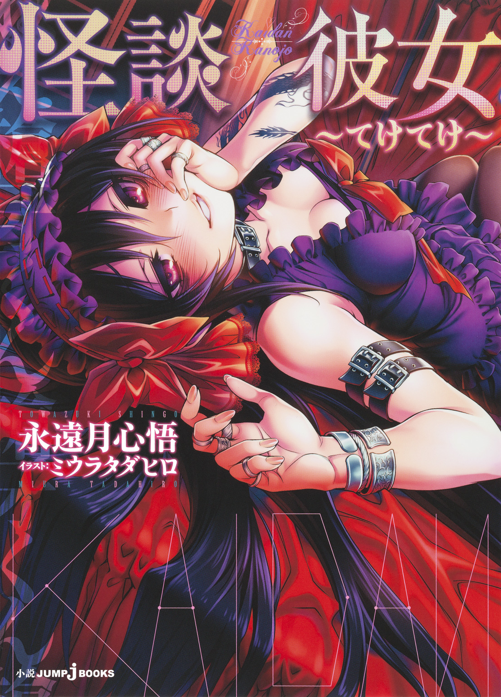
この本は縦書きでレイアウトされています。
また、ご覧になる機種により、表示の差が認められることがあります。
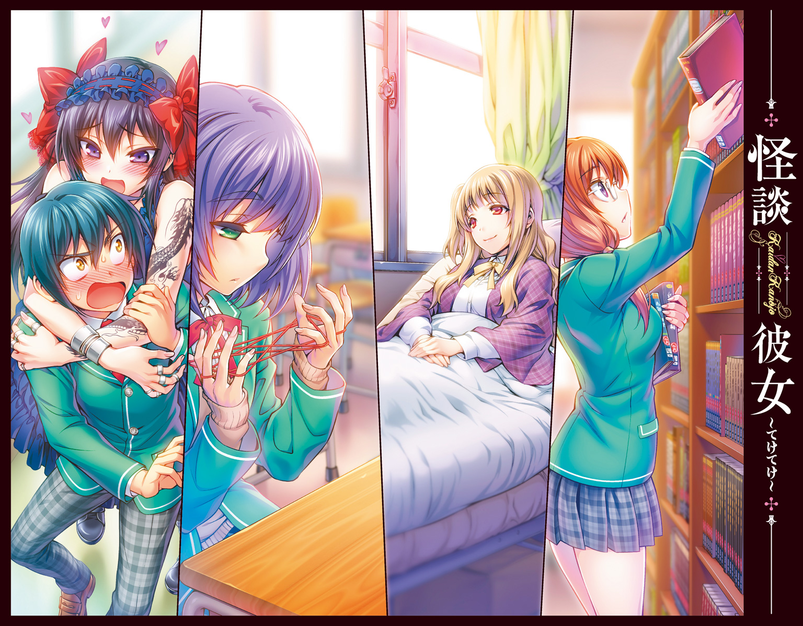
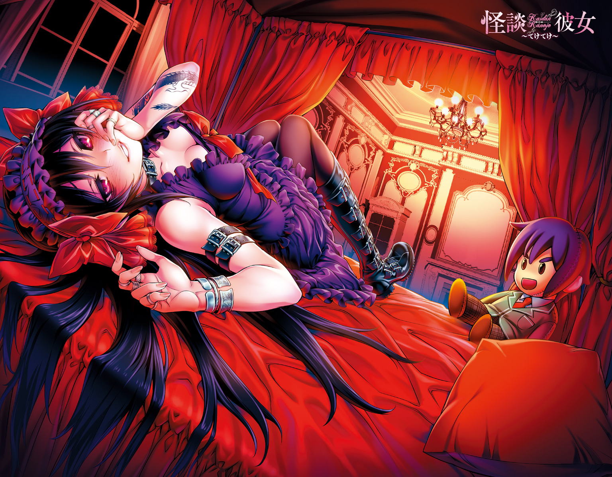
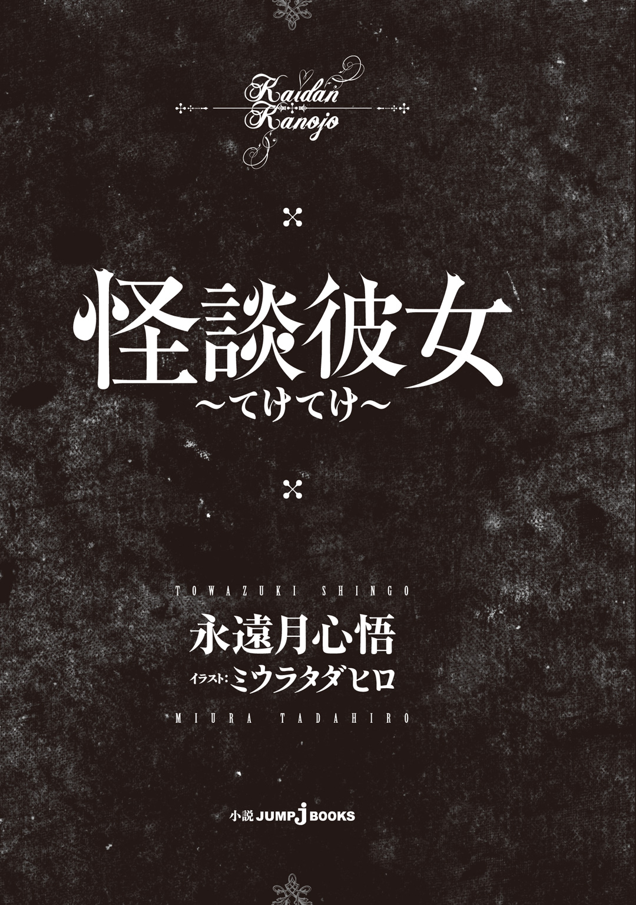
人物紹介
斉藤槍牙 さいとうそうが
鷹夏中学校１年。12歳。妹がいる。
黒川の奇行に悩まされる日々。
黒川夢乃 くろかわゆめの
槍牙の幼なじみにして同級生。
一般的な中学生から逸脱した存在。
今日も槍牙への過剰な愛情表現に精を出す。
野波小百合 のなみさゆり
槍牙たちと同じクラス。
いつもあやとりをしている無口な生徒。
長谷部流水 はせべるみ
槍牙たちと同じクラス。
委員長然とした真面目な風貌の女生徒。
友原小笛 ともはらこてき
槍牙が保健室で出会った先輩。
体が弱いらしい。
黒川夢 くろかわゆめ
夢乃の母親。
とてつもなく若く見える...。
大徳寺刃心 だいとくじしのぶ
夢と関係のある年齢不詳の女性。
槍牙に対して因縁があるらしいのだが...。
CONTENTS
この作品はフィクションです。実在の人物・団体・事件などには、いっさい関係ありません。
あの人を見つけた。
最初は気づきもしなかった。何の変哲もない、普通の人間。そう思っていた。
けれどそうではないと気づいたとき、あの人が私にとって素晴らしい素質を持っているとわかったとき、胸が打ち震えた。ぞくぞくと背筋を喜びが走って、口の端が吊り上がる。
勝ぁって嬉しい花いちもんめ
負けぇて悔しい花いちもんめ
女の子たちがどこかで遊んでいる。花いちもんめだ。みんなでお手々を繫いで、じゃんけん遊びを繰り返す。
なんだかとっても、うらやましくなってしまう。
みっちゃんが欲しい
さっちゃんが欲しい
無邪気な声だ。けれど内実は、仲間を賭けて戦っている。子供の戯れといえども、欲しいもののために失う覚悟で挑むというのは非常にシビアだ。けれども、真理でもある。
私も、あの人が欲しい。花いちもんめをして、遊びたい。
みんなで、仲良く。
だから私は――
黄色い声が聞こえてくる。どちらかが勝ち、どちらかが負けたのだろう。取られた子、可哀想に。でも。
次で勝てば取り戻せる。ぎりぎりまで負けても最後に勝てば、致命傷を負う前に勝てば。
あの人が、手に入る。
想像するだけでお腹の底から楽しくなってきて、私は口許を押さえ、声を出して笑った。
授業の受け方、というものを教わったことはない。
予習や復習ができる類のものではないのだから、教師がきちんと教えるべきなのではないか、という意見にも一理ある。しかし、たいていの人間は、教えてもらわずとも会得していくものなのだから、授業を聞かない生徒の責任を教師にのみ求めるのは酷ではないかと俺、斉藤槍牙は思っている。
学校に通うようになってからずっと――問題児に関わり続けている俺にはそう思える。
「槍牙くん、黒板なんか見てもつまらないわよ。授業の内容なら後で私がもっともっとわかりやすく教えてあげるから、ほら、こっち向いて」
甘い声はねっとりと色気をからませ、ほのかに桃の香りを立ち昇らせる。香水のように濃く、強いものではない。それがこの女の体臭だということは嫌というほど知っている。
鷹夏市立鷹夏中学校、一年一組の教室。
最前列で、俺と机の間に割りこんで横座りに膝の上を占拠するそいつは、幼馴染の女子生徒、黒川夢乃だった。学校指定の制服など無視し、フリルが大胆にあしらわれた黒いドレスに身を包んだ黒川は、同じ中学一年生と思えぬほど膨らんだ胸を俺の首筋へと押しつけてくる。うらやましいという人、もしいたら代わってくれ。太ももの血流を止められて足先がしびれているという苦痛も引き取ってほしい。
黒川夢乃の髪は長く、つややかに黒い。濡れたような墨色を束ねることなく垂らしている。ノースリーブの左腕には黒い龍の刺青などという学生らしからぬ装飾が入りこんでおり、時折楽しそうに動かす足は黒いストッキングに包まれていた。当然のように学校指定の上履きなどではなく、無骨なブーツを履いている。鉄板入りのもので、そこの壁を蹴りつければ壁のほうが壊れる仕様だ。
うちの学校の制服は男女とも緑色のブレザーで、女子ならば胸元にリボンがつく。緑と白のチェックスカートで、靴下は白色か紺色のものと決まっていた。当然、黒川のような格好は許されるはずがない。
口づけるように黒川が顔を近づけて「槍牙くん？ 目を開けたまま寝ているのかしら？ だったらちょっとくらい襲ってもいいわよね？」とか不吉なことをほざき始めた。
「......黒川ちょっと黙っていろ」
少しだけささやき、視界のおよそ七割を占めていたそいつにきちんと焦点を定めた。
黒川の顔は白く、二重まぶたの目は大きいし鼻は高い。黒髪は日本人形を思わせるほどで、顔も小さい。目が吊り上がり、常に性格の悪そうな微笑みをたたえている。俺の膝の上という不安定な場所にのさばらせているしなやかな体つきは、ネコ科の猛獣のそれに近い。
猫だったらまだ可愛げがあるのに、人間だから始末に負えない。
校則違反の私服に銀のアクセサリーをつけている彼女のファッションは、一般にはゴシックとか、ゴシックロリータなどと呼ばれる。ここからは見えないが、俺の机の端に引っかけられている黒川の日傘もフリルがあしらわれている派手な特注品だし、俺の左側に置かれている黒川ハンドメイドの黒い革のトランクは、ガイコツをモチーフとした飾りがたっぷりと躍っている。
徹底している、と言えば聞こえはいいが、あんまりいい趣味とは思えない。少なくとも俺は、学校ではちゃんと学生らしい服を着るべきだと思っている。
そんな校則違反の塊、黒川夢乃が俺の鼻先で、んふ、とまた色っぽい笑みをこぼした。
「やっと喋ってくれたわね、槍牙くん。嬉しいわ。槍牙くんが私とだけ話してくれる。私だけを見てくれる。私以外のことを何も考えず、ただただこの頭の中に私だけを住まわせてくれている。それが、とっても嬉しいの」
大人が子供にするような、いい子いい子をされる。くすぐったいというより、血の気が引く。どん引きだ。多分、俺の顔はいま青い。
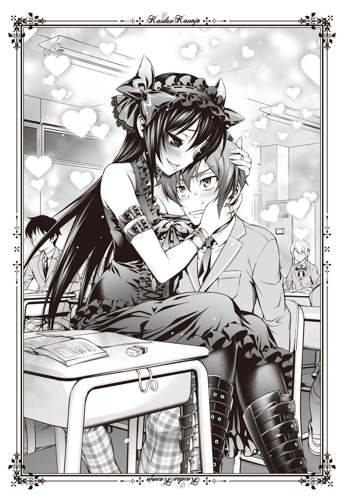
黒川とは小学校に上がる前からのつき合いだ。父親同士が子供のときから親友という縁から、物心ついたときにはもうかたわらにいた。昔はこんな変な奴じゃなかったと思うのだが、いつの頃からか黒川はこうして俺に大変気持ち悪い感情を持つようになった。本人曰く恋心だそうだが、俺にはストーカー心理としか思えない。まとわりついて好きだの愛しているだのという言葉を吐くくらいならまだいい。「殺したいほど好き」とか「監禁したいほど愛している」とか言い出すあたり、厄介の極みだ。
迷惑はそれだけじゃない。たとえば本でも読んでみたいなと思えば、「これオススメよ。これ是非槍牙くんに読んでもらいたいの」と帯に「純愛」「ロマンス」などと書かれている恋愛小説を数十冊も半強制的に読まされた。
あるときは道ですれ違った高校生のお姉さんたちが、流行りの歌を口ずさんでいたのが気になってＣＤでも探そうと思ったら黒川から「槍牙くん、そんなに歌が聞きたいなら私がずっと歌っていてあげるのに」と黒川のアカペラソングＣＤがたっぷり百枚贈られた。
俺の目に入るもの、耳に聞こえるものすら黒川は管理したがる。
正直、真綿で首を絞められているように息苦しいものがあった。
目の前の、嬉しそうというより残酷そうと表現したくなる黒川の笑みから視線をそらす。左隣の席を見た。頭はなでられたままだが、多少は気がまぎれる。
通路を挟んで隣に座るクラスメイトの男子、日立紅が楽しそうにノートに落書きをしている。最初の頃は黒川の自由な行動に啞然としていたが、今ではもう物珍しさを感じなくなったらしい。授業を聞いていないのはどうかと思うが。俺と同じグリーンのブレザーにチェックのスラックスは校則通りだが、ワックスで固めたつんつん頭のせいで先生に目をつけられている奴だ。
板書を一生懸命写しているかと思ったそのノートには『女にもてる必素条件！』と字を間違えてでかでかと書いてある。「女の子も男子に飢えているはず！」「黒川さんと斉藤にあって俺にないものは何だ！」「斉藤殺せば俺に可能性は......？」と続くのだが、おい。
恋人が欲しい盛りなのはわかるが、俺を殺すな。あとナチュラルに俺と黒川を恋人認定するのをやめろ。欲しいならくれてやるから。
左を見たついでに、そのまま背後ものぞく。クラスメイトの女子、野波小百合さんが黙々と一人あやとりをしていた。ボブカットで小柄で、誰もその声を知らないというほど類まれなる無口少女だが、案外授業中の態度は悪い。それでも騒いだり、他の生徒の邪魔をしたりしないだけまだいいほうだ。何故あやとりで遊んでいるのかはわからないが。
マイブームなのだろうと、とりあえず納得はしている。
誰とも話はしない女の子だが、別に他人との接触を断っているわけではない。話しかけられれば反応するし、資料を運ぶのを手伝ってと先生に言われれば従う。服装だって少しぶかぶかだけれど、きちんと女子の制服である緑色のブレザーを着ており、赤いリボンもゆるめていない。スカートも膝を隠すくらい長かったし、白のソックスまでぴしっときれいにはいている。
俺が落とした消しゴムを拾ってくれたこともある。いつもあやとりをしている指は長く、消しゴムを拾う指使いがなめらかで細やかだった印象がある。しかもこちらの目をじーっと見てくるので、少しくすぐったいほどだった。
問題児は問題児だが――少なくともクラスメイトの膝の上に乗るよりはまともだろう。
「槍牙くん、他の女を見ちゃダメ。男でも腹立たしいわ。私だけ、ねえ、私だけを見て」
ねっとりとした声は熟した果実を思わせる。黒川が桃の匂いをさせていることからの連想もあるのだろう。関わり合いたくないが、それでも一応首を正面に戻す。黒板には「弥生土器」という文字がかろうじて見えた。社会科の授業中だったのだ。ただしこういう状況なので、机の上の教科書とノートが目に入らなかったが。
見えたところでシャープペンの先が届く気がしない。まともに字も書けないだろう。
右側へ首を巡らせば黒川の顔がいっぱいに広がっており残念ながら他のものは見えないため、俺はかたくなに「弥生土器」を見つめる。
「どうしたの槍牙くん。恥ずかしがらないで。まっすぐ私だけを見て」
「そこ。私語は禁止」
男の声が聞こえた。すぐ誰のものかはわかる。相手は教壇に立つ担任の先生にして社会科の担当、布川丈一先生だった。四十歳ほどでいかにも中年体型なお腹と脂ぎった額をお持ちの先生だが、俺はそんなに嫌いじゃない。
というか小学校のときから、教師に対してさほど悪感情を持ったことがない。あえて悪いことをしようとしないし、別に叱られるような心当たりもないからだろう。
黒川のことで呼び出しはよく食らうけれど。逆に、呼び出されることが多すぎて先生に対して耐性がついたのかもしれない。
黒川は布川先生の言葉など聞こえていない様子で、俺の首元に胸をすりつけた。
「そうそう槍牙くん。今朝測ったらまたおっぱいが大きくなっていたの。もんでくれる？」
無視した。というか、十二歳男子にその手の話題は勘弁してくれ。
再び、私語は禁止、ときつい口調でとがめられる。黒川は反省した様子もなく、シャープペンを持つ俺の右腕を無理やり自分の胸に持っていこうと――おい。
「黒川、いい加減にしろ」
「いい加減よ？ 私、槍牙くんと喋っているのがちょうどいいの」
「お前にとってはだろ？ いまは授業中だ。黙っていろ。寝ていてもいいから席に戻れ」
無論、一生徒の膝の上が座席であるはずがない。黒川の席はここから二つ右隣、廊下側の一番前だ。そんなに遠くもないが、間に一人入る距離さえ我慢ができなかったらしい。
そもそも授業中に触れ合おうとするほうが無謀で間違っているのだが、こいつはそんな説教すら聞き流す。俺以外の言葉に反応するときなど――
「黒川！」
ばんっ！ と教科書を黒板に叩きつけた大きな音が炸裂し、思わず体がびくっと震える。ちょっとみっともないかも、などと恥じらうより先に怒号が続いた。
「いい加減にしないか！ そもそもお前は何をしに学校へ来ているんだ！ ええ!?」
教室中に充満する緊張感。布川先生はそれほど怒りっぽい先生ではない。しかしあの太鼓腹から発せられる大声は、こういう場合は非常におそろしい。声も低いし、やはり大人が声を荒らげるという状況は、非常事態なのだった。
しぃん、と張りつめた空気の中で黒川はようやく先生のほうを向く。俺の耳元でやわらかく「ちょっと待っていてね」とささやくと（ちなみに、俺は少しも待っていない。むしろそのまま永遠に戻ってくるなと言いたかった）、膝から下りた。一気に太ももを血が流れていくのを感じ、足先がむずがゆくなる。ゴシックロリータファッションがどいて、布川先生の姿が見えた。てかてか光る後退気味のおでこは赤く色づいている。血圧が心配になりそうなほど怒りをあらわにしていた。
右隣に座る女子生徒、長谷部流水さんがため息をこぼして不機嫌そうな表情を浮かべている。銀縁眼鏡に、肩のところでゆるく二本に縛った髪。入学して少ししか経過していないというだけでなく、おそらく三年生になっても彼女は制服を着崩したりはしないだろうと思われる。優等生の雰囲気と貫禄が、すでに備わっていた。
真面目で学級委員長も務めている長谷部さんにとってこういった授業中断は、腹立たしいものに他ならないのだろう。俺もできれば授業くらいはちゃんと受けたい。
一瞬だけ長谷部さんと視線が合って、アイコンタクトが成立する。困ったものねえ、という視線に、本当だよね、とこちらも苦笑いで返した。
その間に黒川は先生の前へと進むと、黒板の前に仁王立ちになり、いつの間に回収していたのかさっきまで机にかかっていた日傘を布川先生へと突きつけた。二人の距離は二メートルほど。傘の先端と布川先生までは、数十センチしかない。布川先生の腰がやや引けている。
黒川の蛮行はこの授業妨害に留まらない。黒川は入学初日、因縁をつけてきた先輩の（とはいえ、制服を着用せず、入学式の間中ずっと俺に話しかけ、おまけに三年生だろうが教師だろうが、他人を見下したような態度をとっているのだから、からまれるのは必然だ）、いわゆる不良連中を二十数名、あの日傘で殴って病院送りにした。圧倒的な暴力、暴虐の嵐だった。その際に窓ガラスも十枚から二十枚ほど割れたと聞く。
どのみち、日傘そのものは立派な凶器だ。持ってみたことがあるがそもそも重量がおかしい。鋼鉄の骨に、ナイフで突き刺しても切れない繊維を張った武器は、これまでも歴戦をくぐり抜けてきたのだ。一教師がそう抗えるものではない。
......誰か、日傘を取り上げてくれればいいんだが。
「さっきからごちゃごちゃとうるさいわよ、教師。私と槍牙くんの邪魔をしないで」
いや、お前が先生の授業の邪魔をしていたんだが。おそらくそう考えたのは俺だけではあるまい。ただ、口出しできるほどの度胸は俺も含めて持っていないようだ。
というか、大半は関わり合いになりたくないのだろうが。
「私は槍牙くんと一緒にお喋りがしたいの。あなたにそれを止める権利があって？」
あるよ。むしろお前が何様だ。
さすがに布川先生も言いたい放題をさせておくわけにはいかないと判断したのだろう。声を荒らげた。
「黒川。学校には学校のルールってものがある。それは将来、社会に出ても必要とされるものだ。いまここでお前が従わなくてはいけないルールは、他の誰の邪魔にもならないようにして、授業を受けることだ」
「つまり誰の邪魔にもなっていなければいいのね」
黒川が構えた日傘もそのままに、俺たち生徒のほうへとじっとりした視線を巡らせる。一人一人の顔を覚えて忘れないといった、恨みのこもった視線だ。俺だけには器用に微笑んで見せたが。
......微笑んでもらっても、何故か黒川の笑顔って弱い者をいたぶるような表情なんだけど。
たっぷり十秒ほどかけてにらみ終えた後、黒川が勝ち誇る。
「邪魔になっていないみたいよ。つまり問題ないということね」
「いいえ」と、涼やかな女の子の声が割って入った。声のした右方向を見ると、ぴんとまっすぐ腕が天井へ伸びていた。姿勢のいい銀縁眼鏡の長谷部学級委員長だった。まさか暴君黒川に逆らうのか、と俺は大惨事にならないことを祈る。
「黒川さん、私が迷惑。だから、席に戻りなさい」
挙手した腕が、今度は彼女の右隣――黒川の本来の座席を差す。長く誰にも座られていない空席は、寂しげだった。
黒川のまなこが細くなり、攻撃的な光をぎらつかせ始める。
「長谷部流水。槍牙くんと私の間に入りこもうとするのね？」
......座席だけならそう言えるかもしれないけど、なんか違う気もする。
「黒川さん。私が言いたいのは授業を受けなさい、ということよ。学生が授業を受ける姿勢は、定められた席に着き、学習するために必要な道具を机の上に広げ、教師の言葉に耳を傾け、黒板を見るということ。あなたはその何もできていない」
「私の生きる姿勢は槍牙くんのそばに座って、槍牙くんと接し、槍牙くんの言葉に耳を傾け、槍牙くんのみを見ることよ。ほら、完璧じゃない」
何が完璧なんだ。俺への嫌がらせが完璧だというのか。
それなら満点くれてやるからもうそろそろ自重しろ。
長谷部さんが淡々と、目に静かな怒りをたたえつつ続けた。
「私たちは将来何になるかは決まっていない。それでも、その選択肢を増やすためにいま、勉強する必要があるの。勉強していなくてもなれる職業は多くあるけれど、勉強していなくちゃなれない職業もたくさんあるから」
「だから何？ 私の未来は槍牙くんの妻になること一択だから関係ないわ」
言うと思った。俺だけじゃなく、クラスの大半がそう思っただろう。
「ここは教室。私たちにまで影響があるの。だから、やめなさいって言っているわけ」
「だったらあなたたちが移動しなさいよ。私と槍牙くんはここにいるわ」
「あのな、黒川」と俺が声をかける。これ以上教室の空気を、黒川のわがままに支配させるわけにはいかないと思ったのだ。
黒川は目をきらきらさせながら俺の机に詰め寄る。目の端にほっとした布川先生の姿があった。黒川が移動したせいで日傘も遠ざかったのだ。ほっとするのも普通か。
目の先、二十数センチにある黒川の期待に満ちた目に、俺ははっきり告げた。
「みんなの迷惑だから、長谷部さんの言う通りにしろ」
「......槍牙くんが結婚してくれるならいいわ」
「中学生は結婚できないから無理」
「じゃあ、恋人の証としてここでいやらしくキスしてくれたらいいわ」
「恥ずかしいから無理」
「槍牙くんのお願いは無償で聞いてあげたいけれど、槍牙くんが他の女のために何かを願う、というのなら絶対に嫌。見返りがなくちゃ」
正直というか、歯に衣を着せないというか。欲望に忠実な幼馴染である。
だからといって、聞いてやる義理は何もないのだけれど。
「黒川、お前小学校のときからそうだっただろ？ 好き勝手のわがまま放題、逆らう者は暴力でねじ伏せる......どう考えてもお前が悪い」
「だって槍牙くんと私の仲を引き裂こうとするんですもの」
じりじりと身を寄せてきた黒川は、いつの間にか机の上に軽く乗りかかりつつ、俺のほほへ手を当てて顔を近づける。捕食される寸前の、草食動物の心地ってこんな感じだろうか？
「邪魔者は倒さなくちゃいけないでしょ？ 小学校だろうと中学校だろうと」
「いいや。中学生になったんだから、その辺も大人になれ。我慢を覚えろ」
俺はこの四月、中学生になることにいささかはしゃいでいた。それはどこかに「中学生になって環境が変わるんだから、他にも色々変わるだろう。特に黒川」という期待を抱いていたからに過ぎない。それは見事に打ち砕かれた。けれど、期待するくらいはいいだろう。
小学校の六年間、特に声変わりが始まった頃くらいから俺は黒川にべたべたされることが嫌になってきた。思春期の目覚めだ何だのと黒川にはさとされたが、そんなことはどうでもいい。ただ、とにかく他の連中とも友達並のつき合いをしたかったのだ。
遊びに行こうとすれば浮気だと言われて阻まれたし、委員会活動だって学級係だって他の人とペアになりそうなときは黒川が異を唱え、強制的に代えさせられた。俺が六年間に黒川以外の人間とまともに遊んだことは一度もない。あんなにたくさんの人間がいるのに、話もできないのは何だか、空しかった。
春休み、うちに押しかけてきた黒川に俺は言った。その台詞を教室で、もう一度俺は本人に向けて繰り返す。
「もう俺にべたべたするな。周囲と歩調を合わせることを覚えろ」
「私は槍牙くんと二人三脚になることは許せても、他の奴らとは結ばれたくなどないわ」
黒川に従うのはすごく楽だ。こいつ自身がほとんど無敵だし、黒川のそばにいれば結構、平和なのだから。それでも俺は、他の人たちとも遊んでみたかった。
脳裏に浮かぶのは小学校のときの先生たちの、失望したような暗い目つきだった。人生の落伍者を見るかのような悲しい視線は、俺のことを「可哀想な奴」と語っていた。同世代の奴らも似たようなものだ。もっとむき出しに「あいつ（またはあいつら）、気持ち悪い」という言葉さえ聞こえてくるかのような扱いを受け続けた。
「黒川。もうお前にはつき合いきれない。そんなにべたべたしたいならすればいい。でも、俺は一生お前を無視してやる」
ぎり、と俺のほほをなでる手が強張り、ほほの皮を引っ張った。俺のまなじりが少し垂れたのがわかる。黒川の、笑みを失くした怒りの表情に俺は屈せず、応じた。
「取引だ。お前が俺の言う通り、中学生らしい適切で真面目な生き方をするなら、お前の言う通り従ってやる。その代わり、もしできないなら――」
言葉は最後まで続けられない。たった一瞬、どんっ！ と何かをぶち抜いた低くて重い音が目の前で炸裂したのだ。黒川が勢いよく俺の顔から手をはがし、代わりに反対側の腕に持った日傘を机に突き刺した音だ。普通、刺さるはずがないのに。
日傘を中心にひび割れた天板に黒川が行儀悪くブーツの底を乗せた。
「......槍牙くんが変なこと言う」
曇りのない真顔。感情を消した黒川の声と視線が、冷たく俺に降り注ぐ。
「私の槍牙くんが私に向かって槍牙くん変なこと言ってなんでどうしてああそうか槍牙くんきっと何かおかしくなっちゃったんだ悪い電波拾っちゃったんだ槍牙くんそうかそうねそうよねどこかで頭をぶつけちゃったんだわ可哀想に槍牙くんでも大丈夫私槍牙くんの彼女だもの私いい奥さんだものだから大丈夫大丈夫槍牙くん大丈夫」
明らかに大丈夫じゃないテンションでつぶやき続ける黒川。ぶつぶつともれる言葉は呪文のようで、俺の心に空寒い気持ちを湧き上がらせた。
地雷、踏んだか――こめかみが冷えていくのを覚えながら、俺の体が強張る。
「槍牙くんあのね私これでもお医者さんなの槍牙くん専用のナースで女医で巫女でまじない師でだから槍牙くんの頭治せるの槍牙くん変なの治せるの槍牙くん治してあげる槍牙くん壊れているの槍牙くん私治療してあげるからねえ槍牙くんだから」
ずこっ、と音がして日傘が机から引き抜かれる。ぱらぱら、と木くずがこぼれる音が聞こえたとき、俺は真横に飛び跳ねた。恐怖で。
椅子を蹴り倒すようにして右側へ抜ける。教室の右手には出口があって、その扉の向こうの廊下には二階からの景色を映す窓が並んでいた。とにかく、こんな逃げ場のないところにいつまでもいるのは得策ではない。直感が告げる。
俺の体が机と椅子の間から抜けた瞬間、首筋に怖気が走った。
がこぉんっ！ という豪快な破壊音。多分、机はもうスクラップだ。そこに自分が巻きこまれなかった奇跡を感じつつ、俺は教室の扉へ向けてがむしゃらになって足を動かしていた。
「待って槍牙くん！ 私が頭を殴れば槍牙くんは私のことを大好きないつもの槍牙くんになるのよ！」
どこが「いつもの槍牙くん」だ、とか言っている余裕さえない。俺は壊しそうな勢いで引き戸を開き、まっすぐ正面の窓ガラスへと飛びついた。無論、ガラスをすり抜けることなどできるわけがない。左手だけは冷静に、クレセント錠を外してサッシ窓を開く。
三メートルほど眼下に芝生の茂る、虚空へと俺は飛び出した。浮遊感に包まれる。
二階から飛び降りるのは、中学校に入って三度目。黒川から逃げるのは、もう何度目かも数えられないほど、慣れたことだった。
「刺激的な日常ねえ」
まぶたを細めたその笑顔は、優しいお姉さんそのものだった。
太陽の光の差す、暖かい光の中で。保健室に面した壁へ、校舎の外から背を預けながら。
黒川から逃げるために酷使した体を投げ出し、俺は目一杯休憩をとる。
「小笛先輩、吞気なこと言わないでください。俺、もうめまいして倒れそう」
「あらあら。それじゃあいっそ、中で休んじゃう？」
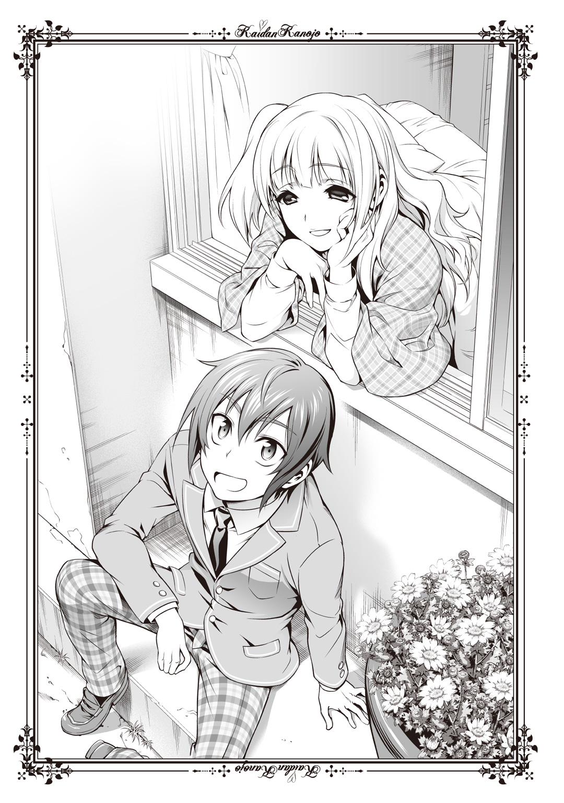
友原小笛――この学校の三年生だ。開けた窓から身を乗り出し、俺の頭をなでる。黒川以外に髪をかき混ぜられるのは珍しい体験だったが、変なプレッシャーもないので結構、気持ちよかった。
髪を右側だけでゆるく結い、優しい垂れ目の微笑みを向ける小笛先輩と出会ったのは、先週のことだった。そのときも俺は黒川から逃げており、この保健室の外で休んでいたのだ。何故この場だったのか。水飲み場や旗を掲げる銀色のポール、プランターなどに囲われており、真上からのぞかれない限りはたやすく見つからないからだ。
黒川は体力も無尽蔵で、いつまでも逃げ続けることは困難だ。だから、こうしてここで隠れてやり過ごすのが俺の手だった。
黒川から逃げ続けること数年、逃げることはそれなりに上手になったと思う。地面がやわらかければ二階から飛び降りるくらい平気だし、猫くらいしか通らなそうなルートを通って無理やり逃げるスキルも、いつしか備わっていた。最短距離のためなら職員の車の上を走ることだっていとわないし、逃げるための体の動きも身についてきた。
体育ではとび箱とマット運動、鉄棒以外にはおよそ活かされない特技ではあるけれど。一応足の速さは、男子の中ではクラスで五本の指に入るか。
ともあれ、そうして得た逃走スキルを最大限利用して俺はここまで逃げこんだのだ。
何とかフェイクをかけて一度校舎内に戻ったように見せた偽装工作は、多分通用したと思う。黒川は多分いまごろ、校舎の中を探していることだろう。他のクラスにまで迷惑をかけてしまったのが心苦しいが、捕まって地獄を見るのは俺だ。
で、この安全圏まで逃げてようやく息をついたところで、保健室から小笛先輩が顔を出したのである。
体が弱くて、いつも保健室登校で、だから他人と喋ることに飢えていた彼女は俺を初めて見たとき、やんわりとお嬢様然として微笑んでみせた。息を荒らげ、周囲を警戒している俺の形相が酷いものだったため、「大丈夫？」と直後に尋ねられたが。
先輩とは、これまで何度も喋っている。毎度、つい黒川の愚痴を吐き出してしまうのだが、先輩はくすくすと笑って聞いてくれる。聞き上手なのだろう、と勝手に俺は思っている。
実際、先輩の笑顔の前では俺はすらすらと語ってしまうし、先輩も、家のこととか、体を壊す前までどれだけ元気だったかなど色んな話をする。
黒川といるときは決して味わえない穏やかな会話が、心地よかった。
これを覚えてしまえばなおのこと、黒川のべたべたする感じはすごく嫌になる。
「斉藤くんの彼女さんは、本当に過激だよねえ。面白い」
「面白がらないでください。あと、彼女じゃないです」
はいはい、とまた先輩が頭をなでる。くすぐったくて、浴びている陽だまりを何倍にもしたような気持ちのよさが首元に生まれる。むずがゆくて首をすくめると、ぽんぽんと軽く叩くようにして小笛先輩の手が引っこんだ。
「でも今日、斉藤くんが来てくれて良かった。暇だったの」
保健の先生がいないとき（といっても、俺も会ったことはないのだが）、小笛先輩はいつも一人で寂しがっている。だからこうして俺が逃げてくると嬉しいらしい。といっても、俺は保健室の中には入らないが。
どうも逃亡中の身だと、逃げ場のない屋内は苦手だ。ここのほうがまだ、逃げ出せる。
「また、給食の時間になったら行っちゃうの？」
「さあ......どうですかね。その前に黒川に見つかりそうになったら行きますけど」
あら残念、と小笛先輩はふんわり微笑む。本当に、鳥の羽みたいに軽やかな笑顔だ。どこぞのゴスロリとは同じ人類かと疑うほど違う。
......あいつ、人類かなあ。ちょっとそのあたりを疑いたくなった。
「そうそう、斉藤くん。ちょっと聞いてほしい話があるんだけど」
不意に小笛先輩が話を切り替える。何だろうかと耳を傾けた。
「『てけてけ』っていうお話なの」
先輩の穏やかな声が、すう、と低くなった。
昔、この学校には、泣きぼくろが特徴的な、とても美人の生徒がいました。
彼女はある男子生徒に交際を申しこまれたのですが、断ってしまいました。
その男子生徒というのは、他の子たちから人気がある男の子で、その件以降、泣きぼくろの少女は仲間外れにされてしまいました。
ある日の放課後、泣きぼくろの少女は屋上に呼び出されました。
そこには、自分がふった男子生徒と、彼に強い恋心を抱いていた女の子たちがいました。
いわゆる私刑でした。泣きぼくろの彼女は髪を引っ張られ、ほほをぶたれ、執拗に蹴りつけられ、屋上の隅まで追いやられてしまいました。
可哀想に、美しい顔は殴られたせいで驚くほど腫れあがっていました。
暴徒と化した男女は、なおも攻撃をやめません。
誰かが泣きぼくろの少女の肩を、思いきり突き飛ばしました。
当時の屋上にはまだ腰ほどまでの柵しかありませんでしたから、勢いづいた少女の体はそのまま落下してしまいました。
さらに悪いことに、その下には割れたガラスを張り替える業者の軽トラックが来ており、これからはめこむ予定の新品のガラスが立てられていたのです。
少女の体は、その鋭利なガラスへと垂直に落下し、上半身と下半身に分断されてしまいました。
ここにきてようやく冷静さを取り戻した男女は、青い顔で下へと急ぎました。
すさまじいことに、地に伏したまま泣きぼくろの少女はなおも息をしていました。
はらわたをはみ出させ、血だまりの中でもがくように。
その目は真っ赤に充血し、恨みつらみでぎらぎらと輝いていました。
その姿、その形相に、これまで攻撃していた者たちはおののきます。
救急車が着くまでの十分間、泣きぼくろの少女は口からうめき声とも取れぬ、低い息をもらしながらじっと周りをにらみつけていました。
彼女は病院にたどりつく前に亡くなってしまいました。
それ以来、放課後の学校にいつまでも残っていると、何かが廊下やグラウンド、至るところを駆け回っている、てけてけという音が聞こえるようになりました。
目撃者の話によると、それはおぞましい、上半身だけの少女だというのです。
長い髪を振り乱し、両腕だけで駆け回るその目はらんらんと赤く光ると言います。
膨れあがった顔には、泣きぼくろがあります。
それは、屋上から突き落とされ、ガラスに体を切られた彼女だったのです。
彼女はいまなお、この学校をさまよっています。
何のために？ 復讐のためだと、彼女に追いかけられた人は言います。
両腕を振り上げ、とんでもない速度で駆けてくる彼女――てけてけに捕まったら最後、彼女と同じように腰のところで体を切り分けられるという噂です。
小笛先輩の話はそれで終わり、先輩はいつもの明るい声になって「ねえ怖いよね？ ね？」と同意を求めてきた。かいていた汗が冷えたという以外に、妙に背筋が震えた。頭の中に浮かぶイメージとして、確かにその「てけてけ」は怖かった。
こういった、いわゆる「怖い話」は聞いたことがなかったので、個人的には新鮮だが、あんまり放課後に居残りたくなくなる話だ。
「......つくり話ですよね？」
「さあ、どうなんだろ」
んふふ、と小笛先輩がいたずらっぽい笑みを浮かべる。ぞっとする話だが、まさか本当のことというわけじゃないだろう。小学生でもわかる。
「ごめんねー、なんか気持ち悪いお話聞いちゃったから、誰かに吐き出したかったの」
「まあ、別にいいですよ。俺だって黒川の愚痴、聞いてもらっているわけですし」
むしろ小笛先輩のほうからこうして頼ってもらえたほうが、精神的には楽になれる。
腕時計を見る。充分休んだし、給食まではあと数分逃げるのみとなる。黒川も、給食の時間までには落ち着くだろう。
「もう行っちゃうの？」
少しだけ寂しげな、小笛先輩のすねる物言い。すがるような声は、腐る直前まで熟した果物みたいな黒川の声音とは違う、もっとさっぱりとした甘さをともなっている。すみません、と俺は返した。
「この隠れ場所が黒川に見つかっちゃうと、もう使えなくなるので」
「じゃ、しょうがないか。また来てもらうために、ね」
肩をすくめてみせる小笛先輩の笑顔に、暗い部分や寂しさなどは見受けられなかった。
俺は立ち上がり、先輩に別れのあいさつを告げようとして――首を傾げた。
小笛先輩がいないのだ。
いや、四角い窓枠の中でベージュのカーテンが揺れているのを見る限り、どうやら保健室の中に引っこんだらしい。確かにいま俺は去るところだったが、小笛先輩はあいさつもなく行くほど不作法な人ではないはずだ。
少なくとも前は「それじゃ、またねー」とほがらかでやわらかい別れの言葉を告げてくれたのに――何故？ まるでこんな、逃げるように。
そう思ったとき、ぞっと肌が危険を感知してざわめき立った。
――やべ、逃げないと！
直感で思い立つものの、休憩していた足は即座には動かない。蛇口の三つ並んだ水飲み場を乗り越えることはすぐにあきらめ、旗立てのポールの脇をすり抜けようと俺は身を滑らせた。
ここは左右どちらから人が来ても見つかりづらいので、かくれんぼの場所としては案外、悪くない。ただ、一点。
真上から見れば、俺がいるのなんてすぐにわかる。
「見ぃつけた！」
無邪気な声は、昆虫の羽をむしる子供のものとよく似ている。案の定、頭上からしたその声に、俺は舌打ちしながら駆け出した。直後、俺がへたりこんでいた場所にどさりと何かの落下音が響く。
先刻、小笛先輩から聞いた「てけてけ」の話を思い出す。あれに出てきた女の子は屋上から突き落とされたのだったか。けれど、俺の幼馴染はそんなの、平気だ。
三階建ての校舎の屋上、だから地上四階ほどの高さになるのだが、そこから飛び降りても平気なのだ。猫のような身のこなしで。
「黒川！」
「なぁに槍牙くん！ あとそんな他人行儀な呼び方はやめて『夢乃ちゃん』って呼んで！」
振り向かなくても、ゴシックロリータをはためかせ、髪を躍らせた黒川の姿が容易に想像できる。笑顔はどちらかというと、悪魔的にぎらついていることだろう。
逃げる。落下により一気に差を詰められたものの、ここで捕まることだけは避けたい。
後ろからぶつぶつと「槍牙くん待って槍牙くんねえもうそろそろ私休みたいわほらおままごとにしましょう鬼ごっこ飽きちゃったねえ槍牙くんが旦那様で私が妻なのそれでねそれで永遠に二人で一つの家の中にいるの仕事になんか行っちゃ嫌私以外が槍牙くんの意識を乗っ取るなんてあってはならないのねえ槍牙くん槍牙くん槍牙くん槍牙くん」とささやかれる声に背筋を舐めあげられつつ、何とか俺は今日も給食の時間まで逃げきった。
......授業、どんどん遅れていくよな、俺。
さて、給食の後、午後の授業も終えて――放課後になった。
図書室の中は大騒ぎすることははばかられるが、ちょっとした私語やノートに何か書きつける音などで、無音というわけではなかった。
だから彼女――長谷部さんはささやくより少し大きいくらいの声で俺に話しかけたのだ。
「それにしても、そんな便利な手があるなら最初からやっていればいいのに」
銀縁眼鏡のフレームをいじりながら、長谷部さんはゆるやかに微笑んだ。黒川のせいでふだんは彼女のしかめっ面ばかりを拝んでいたが、こうして見ると「結構可愛いな」と思った。
俺は長谷部さんに頼みこんで授業のノートを見せてもらうことにしたのだ。入学からこっち、まともに授業を受けた時間は総計で二十時間もない。さすがに危機感くらいはある。幸い、長谷部さんは快諾してくれたし。
放課後の図書室は勉強や読書にいそしむ生徒らで席も多く埋まっており、司書の先生がカウンターの中で黙々と書き仕事をしていた。
長谷部さんはいつもここで放課後を過ごしているらしく、ご一緒させてもらうことに成功した。
顔見知りは、少し離れたところで野波さんがいつものように黙々とあやとりをしているくらいか。勉強していない奴は他にもいるが、あやとりしているのはさすがに一人しかいないのですぐ目についた。
隣り合って座る長谷部さんは手元に文庫本を広げているが、レンズ越しの目はこちらに向けて俺と話してばかりいた。時折、ノートの解説を入れながら。
そして現在、雑談の内容はあの困った幼馴染の不在に向いている。
「黒川さん、騙されたと思ったら追いかけてくるんじゃないかしら？」
「大丈夫。あいつは餌があるうちは忠犬ハチ公並みに待ち続けるから」
あの粘着女、黒川夢乃がどうして俺を追いかけてこないのか。まして、自分以外の女子からノートを借りて勉強しているなどと聞けば天変地異を起こすほどの勢いで怒りながら、図書室入口の分厚い木の扉をぶち破ってくるだろう。外からの音を遮断するほどの強固な扉なので、普通に入ってきたほうがいいと思うが。
黒川がこの場にいないのは、長谷部さんの「騙された」という言葉の通り、俺が噓をついたからだ。いまごろあいつは、体育館裏で待機していることだろう。
「でも普通、いつまでも待つかしら？ 放課後、斉藤くんの部屋でデートしてやるから迎えに来るまで動くな、なんて条件で」
「待てない黒川じゃないよ」
俺が長谷部さんにノートを見せてもらおうとしたのは、このままだと、授業に追いつけないと思ったからだ。俺は、前から温めていた手段を取った。
黒川は確かに問題児だ。
だが同時に単純馬鹿とも言える。
黒川の行動理念はシンプルで、ただひたすら俺と深く接することを優先する。逆を言えば、俺と一緒にいられる、俺と何らかの関わりが持てる、という旨みをぶら下げてやれば、ねぎを咥えて踊れと言われても従うのだ。
だから俺は、こびを売り、放課後デートする代わりに、先生に用事を言いつけられたから体育館裏で待っていろ、俺が行くまで動くな、俺が到着したときにいなかったら約束はナシ、という話までこぎつけたのだ。別行動を渋った黒川だが、ここも恥を忍んで「たまには待ち合わせとかしてみたい。ほら、恋人同士みたいじゃん」とごまかして納得させた。
いくら恥を切り売りしたかわからないほどやって、やっと手に入れた自由だ。長谷部さんのノートを写し、遅れていた勉強を何とか取り戻さねば。
「実際のところ、この作戦の怖いところは迎えに行かなかったときだよ。あいつ、怒って、お泊まりだの抱っこだの言い出しかねないから」
「それで済むのかしらねえ......まあ、リスキーであることはわかったけれど」
黒川との約束を破る――こんなに恐ろしいことはない。
「ちなみに昔、あったの？ 約束をたがえたこと」
「小学校に上がる前くらいかな？ アイスを半分こ、っていう約束だったのについつい全部食べちゃってさ。あいつ、それからひと夏中、ずっと俺の口に入ったアイス、せがんで暴れて強奪していった」
「......口移し？」
「ガキだったもん。キスのうちに入らないでしょ」
いま思い出すだにつらいものはあるが。よくあんなこと、平気でできたな。
「それに黒川も、いまほど無茶苦茶じゃなかったし。もうちょっとこう、おしとやかなお嬢様だった。いや、お嬢様っつーか......泣き虫？」
「想像つかない」と長谷部さんが軽く吹き出した。俺だってあれは夢物語だったんじゃないかと時々、思う。いつからあいつはあんなに強くなっちまったのか。
「でもおしとやかだったら斉藤くん、黒川さんのことを好きになれそうじゃない？」
「......や、どうかな」
あまりにいまの姿とかけ離れすぎている。
「おしとやかな子は、嫌い？」
黒川のような少し意地の悪い笑みを浮かべた長谷部さんが、ずいっと俺に顔を寄せる。体を少し逃がしつつ、写しを進めてしまおうと目を伏せた。
斉藤くんってさ、と耳にだけ長谷部さんの言葉が響く。
「本当は大人しい女の子と一緒にいたいとか、思わないの？」
「......よく、わかんないや。ただ、黒川はちょっと迷惑かなってだけで......」
「そうね。でも忘れないで。迷惑かけない女の子なんて、山ほどいるのよ？」
まるで長谷部さんが黒川みたいな気がして、急いでシャープペンを走らせて社会科のノートを写し終えた。国語も理科も英語も終わっており、後は数学のみだ。理解に一番時間がかかる科目だが、予想以上に長谷部さんのノートは見やすく、教科書より整頓されている。
「ありがとう。助かった」
「ええ。それじゃあ次は......あら？」
鞄の中にノートを戻し、探っていた長谷部さんが戸惑いの声をあげた。様子を見ていると、眉を八の字にした長谷部さんが申し訳なさそうに俺に言う。
「ごめんなさい。ノートを教室に置いてきちゃったかもしれないわ」
「教室......か」
図書室の厚い扉をうかがう。ここから教室までは、長い廊下を進み、それから一階分の階段を下りる必要がある。
悩んだ一瞬のうちに、長谷部さんが立ち上がる。
「取ってくるから、ここにいてくれる？」
急ぎ足というわけではないが決断が早い――返事を聞くまでもなく長谷部さんは歩き出してしまう。俺は長谷部さんの背中を追いかける。慌てたせいで椅子を鳴らしてしまい、ちょっとだけ周囲から視線を感じた。さすがにちょっと、うるさかったかもしれない。
ぺこぺこと周囲に頭を下げながら長谷部さんへと追いつき、「俺も一緒に行くよ」と同行を申し出る。長谷部さんが足を止めると同時、座っていた司書の先生も気づいて視線をよこした。何か用事があると思われたのだろう。
長谷部さんがそつなく、「忘れ物です。教室に」と応じた。振り向き、俺を見て尋ねてくる。
「ついてきてくれるの？」
長谷部さんはちょっとだけ口元をゆるめ、じゃあ、一緒に、と言って扉を開けてくれる。古い木の扉か、油の差していない蝶番か、どちらかがぎぎぎ、と耳障りに鳴った。
廊下は日中と違う、ひと気の失せた静けさに満ちていた。少しミスマッチな異世界に飛びこんだおぼつかなさを感じつつ、よどみない足取りで先に出た長谷部さんに続く。
「斉藤くん、ありがとう。ついてきてくれるなんて優しいのね」
「......俺のせいだからね」
単に、俺が一人で待っていることに耐えられなかっただけである。
まあ、感謝されることそのものはくすぐったいけれど、悪い気はしないし。
教室に着くと、長谷部さんは机の中を見て、どうして忘れちゃったんだろう、とはにかんだ。引き出しの中は、ノート以外は空っぽだった。一冊だけ出しそびれたのだろう。
「それじゃ、早く戻りましょうか」
長谷部さんの言葉に、うん、と応じて教室を出る。廊下と同様にがらんとした、映画のセットみたいに現実味がない教室だったなと思いながら。
「斉藤くんって、部活入らないの？」
ただ黙っているのも暇で、俺と長谷部さんは語り合う。
「予定はないよ。特にやりたいこともないし」
「足が速いから、陸上部が勧誘しては黒川さんにはねのけられているって噂だけど」
噂がどこをどう通ってきたのかわからないが、まあまあ現実味はある。
「スポーツすればいいのに。私、応援するわよ？」
「気が向いたらね。長谷部さんは部活、入らないの？」
「決めあぐねているの。勉強と両立できるかも不安だし」
「長谷部さんなら大丈夫だよ」
そうかしら、多分ね、などと言いながら階段を上りはじめたときだ。
誰かが、駆け下りてきた音がした。階段は踊り場で折り返しているため、誰が下りてきたのかはまだわからない。
長谷部さんはお化け屋敷に入った女の子みたいに、びくっと体を震わせて俺の腕をつかんだ。こちらも驚きはしたが、そこまで過敏に反応はしない。
黒川のせいでいきなり女子に抱きつかれることにも耐性があったため、その手を振り払うこともない。むしろ、人が来たからこっちに寄って、と道を開けたくらいだ。
踊り場に足音の主が姿を現す。
それは、最初犬に見えた。
「――え」と、俺の口から変な声がもれる。
「きゃあああああ！」
耳元で爆ぜる悲鳴は、おそらく長谷部さんのものだろう。彼女はもうお化け屋敷なんてものではない、パニックになった勢いで俺を壁際まで押しやってしがみつき、俺の肩に顔をうずめた。それゆえ正体不明の姿を、俺だけはまじまじと見ることができた。
そいつは、長い髪をしていた。髪の間から、人の顔らしいものが見える。変に腫れぼったく、赤黒い顔だった。うちの学校の制服のようなものを着ていた。錆びたように変色し、濡れたブレザーだ。
腐り落ちた果実みたいな顔には、泣きぼくろがある。
女子生徒のように見える。けれど、絶対に違う。そもそもどうして犬と見間違えたのか。
そいつの背丈が、異様に低かったからだ。
飛び跳ねて移動しているように見えるのは、足を使っていないからだ。
腰から下が丸々なくて、腕の力だけで走り下りてきたからだ。
「うああああああ！」
悲鳴と同時に、俺もつい長谷部さんに抱きついてしまう。階段を下りてきたそいつの動きは人よりも虫に近い。高速で這い寄るクモのようだった。
あ、とか、う、とか、奇妙な、地獄の底から響くようなうなり声が上半身だけの女の口からもれていた。ぼろきれみたいに汚れたその女は、長谷部さんのすぐ後ろを俺たちのいる階段の下まで一瞬で駆け抜けた。粘っこい、血走った目と目があった。
その瞬間、長谷部さんがびくっ、と大きく震えたのが腕と胸に感じられた。
階段の一番下まで降りた異形は、急ブレーキを踏んだように停止した。
「てけてけ」――その話は小笛先輩から聞いていた。ぞっとしつつ、俺は長谷部さんに声をかける。自分でもどうかと思うほど震えた声だった。
「長谷部さん、ねえ、長谷部、さん」
膝が笑う。途端、足元が突然、生ぬるく濡れた。どきっとしたのは、長谷部さんと密着したまま自分が失禁したと思いこんだからだ。ごめん、と長谷部さんに言おうとしたのだが、長谷部さんが細かく震えているのを感じて、ああ、と思った。長谷部さんのほうが怖くて、もらしてしまったのだ。
俺は眼下の異形から目が離せないまま、長谷部さんの異常に震える背中をとんとんと軽く叩く。大丈夫、という自分の言葉が、雪の中にいるように凍えていた。
「大丈夫だよ、長谷部さん。大丈夫」
さい、と聞こえた。かすかな声だ。息も荒い。もしかすると、俺ももらしているかもしれない。
ゆっくりと、てけてけ（と呼ばせてもらう）が体の向きを変える。Ｕターンは苦手なのか、と思い、俺は長谷部さんを連れて階段の上まで逃れようと、ぐい、と体を引っ張った。
ばしゃっ、と大量の水が弾ける音が聞こえた。続いて、ごとごとっ、と音を立てて何かが俺の足元から転がり落ちていく。そこでようやく、気づいた。
長谷部さんは確かにやせているほうだが、いま俺が抱きしめているその体は、それよりあまりに軽すぎた。半分くらいしかない。
半分――上半身と下半身で分けた、その上半身だけのように。
少しだけ腕の力をゆるめる。長谷部さんとの間に隙間が生まれ、顔を見ることができた。銀縁眼鏡の奥の目は、光が失せている。きりっと引き結ばれていた口がいまはぼんやりと開いていて、そこから声がもれていた。
「斉藤、くん......」
「......長谷部、さん？」
やっと気づく。失禁なんかじゃない。これは――鉄錆の腐ったような、血の匂い。
「ああああああああああ！」
腕の中の長谷部さんがぐったりと力を抜く。まぶたが閉じて、銀縁眼鏡が落ちた。その肉体を支えていられない。ぶるぶると震えた腕が、さっきまで楽しく喋っていた長谷部さんの肉体――上半身だけ――を取り落としてしまった。でも、手を伸ばせない。俺の恐怖心はまだ、階段の下にいるてけてけにしばられていたのだ。膝が笑う。手すりをつかんでもなお転びながら、俺は階段を上ろうとする。足元を見て、本当に自分の下半身を濡らすのが血液だと理解した。ぞっとする。こめかみに針が突き刺さったような、頭痛と悪寒が腰まで駆け巡る。ずるりと靴底が滑り、血を踏んでいるのだと寒気を覚えた。
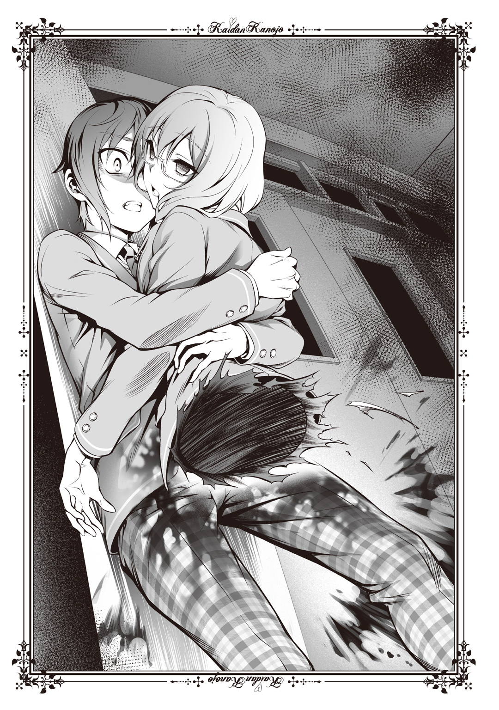
腕も使い、がむしゃらになって階段を上がる。ぴちゃっ、と背後で音がした。俺以外の何かが、血だまりを踏んだのだとわかる。追いかけられている、とわかって俺の足がじわじわと力を取り戻し始めた。
踊り場を回ったときにてけてけのほうを見た。道を阻む、長谷部さんの下半身を引きずっていた。
長谷部さんの死体を見て、給食に食べたものが一気に喉までせり上がる。
「うえぇ......っ」
吐かない。ぎりぎりで飲みこむと、喉が焼けたようになって嫌な匂いが鼻をついた。すぐそれは血の匂いと混じり、一層気持ち悪くなる。それでも何とか距離を稼ごうと、俺は足を振り上げて進む。上履きの先が段にいちいち引っかかる。太ももからふくらはぎの途中まで、びっちゃりと濡れてズボンがからみつくのだ。着衣で水泳でもしたみたいに服が重くて、それでも必死になって三階まで上がった。
図書室まで、左に曲がって三十メートル。扉はどんと構えたまま、揺らぎもしない。悲鳴も騒ぎも、届いていないのだろう。息切れ激しく、俺は扉を目指した。
ぴちゃぴちゃぴちゃぴちゃぴちゃぴちゃぴちゃぴちゃ......
血を踏んだ水音が駆け登ってくる。振り向くと、踊り場の陰辺りから、てけてけの腕が見えた。
「っ......くそ！」
悪態をつきながら俺は右手を振り返る。窓の外には、この地獄を知らない様子で空が広がっていた。俺はクレセント錠を外し、窓を開くとサッシに飛び上がる。いつも黒川から逃げているのだから、慣れた動きのはずだった。けれど、やはりズボンが引っかかる。上履きを引っかけながら、かろうじてサッシから飛び降りた。
飛び降りるというより、重力に吸いこまれるように空中へ投げ出される。
やけに静かな宙の中、一瞬だけ振り返った。目の端に、窓にかかったやけに爪の長い手と共に片目だけがのぞいて、俺をにらんでいるのが見える。奴が飛び降りることができるのかどうか、わからない。それでも俺は、賭けた。
大きな音を立ててツツジの茂みに落ちた。すぐさま這い出て、三階の窓を見上げる。あの異形はどうやら、窓から飛び降りることはできないようだった。
血まみれ、泥まみれになって俺は立ち上がり、歩く。足と膝が歯車のいかれた機械みたいに、がたがたにしか動かなかった。走るなんて、もっと難しい。
「......長谷部、さん」
息も絶え絶えになる。喉の奥から、内臓を全部吐き出しそうな気分だった。涙が止まらない。俺は校舎の壁に沿って逃げた。
「......斉藤くん!?」
激しい声。気づけば俺は保健室のそばまで回っていたらしい。いつものように窓から上半身を乗り出して、小笛先輩が目を丸くしていた。
「......小笛、先輩......帰って、いなかったんですか......」
「うん、私、いつもお母さんが迎えに来るから......って、そうじゃなくて、どうしたの！ そんな酷い有様で......ほら、早くこっち！」
小笛先輩が手を伸ばしてくる。俺はその手をつかもうとして、自分の手が赤く汚れていることに気がつき、手を引いた。その手を、小笛先輩が迷うことなくつかむ。
「ほら、中、入って」
窓からずるずると中へ入る。足は先ほどよりずっと限界を迎えていたらしく、足が引っかかって俺は涼しくて暗い床へと頭から落ちた。小笛先輩はそれまでベッドで寝ていたのだろう。彼女の素足が、目の前にあった。
「大丈夫？ もう......頭、打っていない？」
心配する小笛先輩に、俺は平気です、平気、と応じて立ち上がる。ふらついて、すぐそばにあったベッドへと倒れこんだ。
「ちょっと！ ねえ、何があったの？ すごく汚れているし、息も、乱れているよ？」
「あの......てけてけ」と語った唇が震えて、乾く。
「てけてけ？」
きょとん、とした小笛先輩の声が聞こえる。さっき俺の目の前で起きた事件をどう説明したものか。少なくとも、腕の中で長谷部さんの体が分断されるなどという非常識な話、まともにできない。白いシーツが、俺のスラックスや手が当たった場所だけ赤く染まっていた。それが夢じゃないと告げる。
小笛先輩が俺の肩に手をやり、優しくいたわってくれる。片側だけ髪をゆるく結う、細くて白いリボンが俺のほほをくすぐった。
「斉藤くん、てけてけを見たっていうの？ それにそれ......怪我、しているじゃない」
違う。これは俺のものじゃない。長谷部さんの血だ。そう言いたいのに胸が詰まって苦しくなり、また吐き気をもよおした。
とりあえず立ち上がろうと、俺は体を動かした。回転椅子でぐるぐる回っていた後みたいに頭がふらふらし、布団を巻きこんでまた床に落ちる。
「ちょっ、斉藤くん」
意識を手放しかける。ひどく疲れたときのように、目が回ってしかたがない。
ベッドの下を見た。
そこに、上半身しかない女が赤く目を光らせていた。
「......あ？」
焦点が合うのに一瞬。胸の中に焦りが生じるまでもう一瞬。
思考が巡るのには、一秒くらいかかった気がした。俺は叫んで飛び上がる。
「うあああ！」
「っ！ 斉藤くん！」
小笛先輩がなおも俺に声をかけようとする。しかしそれどころではない。てけてけがいる。俺は小笛先輩の腕をつかみ、反対の手でベッドの下を指さした。そのときにはてけてけが這い出ており、その姿を見せている。
さっきの、赤い顔に泣きぼくろをのせていた奴とは違う。髪はそんなに長くないし、口には鋭く尖った牙が何本も生えていた。
どうして、と声が出るより先に小笛先輩のほうが動いた。
「斉藤くん逃げて！」
小笛先輩が俺を勢いよく突き飛ばす――さっき入ってきたばかりの窓から、のけぞる形で俺は外へと転げ出た。青空を仰ぎ、砂臭いグラウンドのそばへとまた頭から落ちる。下がコンクリートだったので、がんっ、と一撃食らったような心地がした。
それでも声は、彼女を呼んだ。
「小笛先輩！」
俺は体勢を無理やり立て直し、窓枠へ手をかけて立ち上がった。カーテンがひらりと舞い、視界を覆う。
「槍牙くん！」
誰かの声が後ろからした。いや、聞き慣れた声だ。いまごろ体育館裏で待ちぼうけしているはずの、知った声だった。
カーテンがひるがえる。保健室の中が見えた。牙の鋭いてけてけが、保健室のベッドの上に立っている。さっきまで俺が寝転がっていたそこには、血の染みがついていた。酸化して黒味を増したものと、いま流れたような鮮やかなもの。
小笛先輩がいない。
「怪異......っ！ 槍牙くん！ どいて！」
吠えるような声が背中から聞こえる。いや、でも小笛先輩が。
俺を外へ押し出してくれた先輩が、いない。
何かが俺の脇をすり抜けた。黒い風のように思えたが、速すぎて見えない。ただ黒く尾を引いていたそいつが、何かを右手に持っていたのがわかった。
黒い風は窓枠へ乗る。その一瞬だけ、形をとらえられた。
「黒川......」
「ええ、あなたの愛妻、斉藤夢乃よ」
いつもなら「勝手に入籍するな」とか「愛してねえよ」とか、そういった言葉を吐くはずの俺の口は、ただつぶやくのみだった。黒川の名と、小笛先輩の名を。
ブーツが、銀色の窓枠を蹴り飛ばした。黒川が跳躍し、右手にあった日傘を振りかぶる。出来の悪いアクション映画でも見ているようだった。そもそもてけてけの姿が、たちの悪い特殊メイクみたいに現実味がない。
ふらふらと、足が勝手に前へ出た。倒れるのを防ぐような塩梅で、窓枠から身を乗り入れる。いつの間にかてけてけの姿は消えていて、ベッドの上には黒川だけが仁王立ちしていた。赤い染み、赤黒い染み、そこに茶色い汚れが、靴底の形をつくって上塗りされる。
俺の首がぐるりと回り、視界も回る。床に、それを見つけた。
「それ」というよりは「それら」と呼ぶべきか。いや、そんな無機質な言い方は嫌だ。
ちゃんと、言いたい。たとえもうそこに、魂がなくとも。
友原小笛だと、言いたい。上半身と下半身が分かれていても。
長谷部さんのように、虚ろな目が何も語らなくなったとしても。
「槍牙くん。大丈夫？」
黒川の声が聞こえる。小学校に上がる前から知っている声が、俺を心配するように響く。けれどそれは遠い世界から打ち鳴らされる鐘のように遠く、反響してあいまいなものだった。俺の意識はもう、赤い悪夢に埋め尽くされていたから。
「小笛、先輩」
血だまりの中にたゆたう小笛先輩の白いリボンが、真っ赤に染まっていた。もう、小笛先輩は笑わない。
ぐるりと、頭の中で脳味噌が回ったんだと思った。体がぐらつき、上も下もわからなくなって俺はそのまま、目の前が暗くなった。
槍牙くん、と黒川が最後に叫んだ言葉だけは、よく聞こえたけれど。
私は一時間前まで、非常に満足だった。幸せが胸の内にあふれていた。
大好きな槍牙くんを助けられた。それに、槍牙くんが気絶してしまったので抱っこして帰ったのだ。道中、私に身を預ける槍牙くんの体温に体の芯がうずいてたまらないほどだった。悶えて変な声が出そうなのをこらえるのが大変だったくらいだ。
では、現在私――黒川夢乃の精神状態はというと。
「最悪ね。本当に、許されるなら地球を破壊してしまいたいくらい、最悪だわ」
「夢乃、そう言わないで」
どことなく余裕のある大人の笑み。相手は本当に私と血が繫がっているのかと疑いたくなるような、八方美人の嫌な男だった。緑色の和服の左袖が揺れている。中身はない。胸元に引き入れているのではなく、欠損しているのだった。
父、黒川灯という男はどうにも底が知れない。
「いいかい？ 少なくともみんなの力を借りなくては、解決できない。そういう事態がもう起こってしまったんだよ、夢乃」
低い声をもって、灯がさとす。私は灯の隣に座ったまま、十畳の部屋を二つ繫げた、この大広間の中を眺め回した。
そこには私と灯の他に、四人いた。じっと押し黙り、座布団に座っている老若男女が。
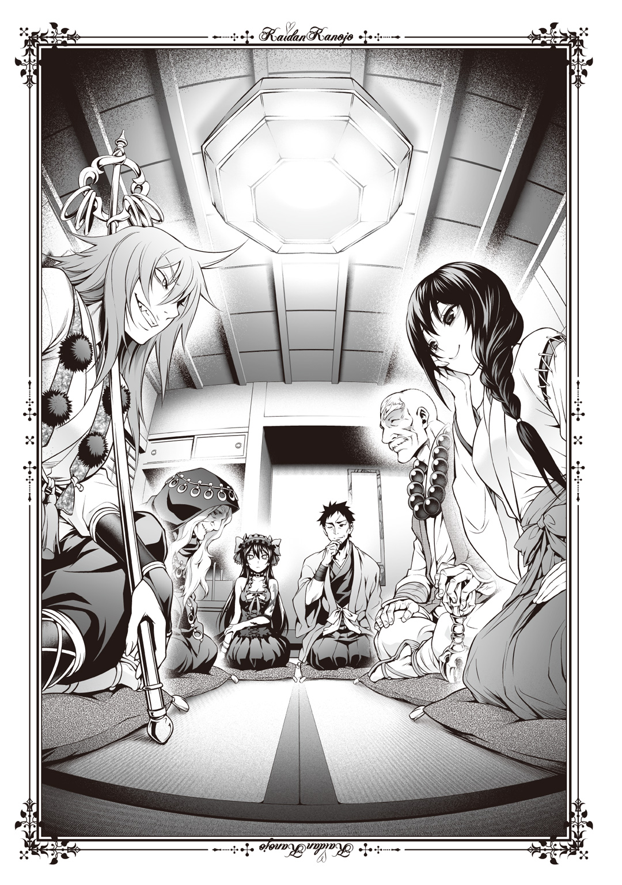
私に一番近いところにいるのは、黒いローブに覆われた老婆だった。占い師、網浜小幸。西日本方面に顔がきくものの、口調になまりはない妖怪婆だ。
その向かいにいるのが、これまたしわだらけの爺だった。しかし年を感じさせない。お遍路さんのような格好であるが、これでも自分の寺に戻れば和尚である。北方を中心に活動する荒くれ坊主、壱元だ。老人と思えぬほど姿勢もよく、袖や襟からのぞく体は骨太で筋骨隆々としている。灯も百八十センチは軽く超える大柄な男だが、この老僧も負けず劣らずだ。この二人が起立して並ぶと、バスケットボール部か何かの同窓会に思えてくる。
壱元は脇に置いた杵をもてあそびながら、私の視線に気づいて柔和な笑みを浮かべた。子供好きのお人好しだが、灯より扱いがたい。
壱元の隣には私の母、黒川夢が座っていた。こちらは何を考えているのかさっぱりわからないほど無邪気な笑みで、おそらく本当に何も考えていない。外見は槍牙くん曰く「どっちが黒川でどっちが夢さんかわかんねえや」というほど似ているらしい。槍牙くんは恥ずかしがり屋で、私をちゃんと見ないから困る。私はあんなに老けていない。
とはいえ、夢は実際若く見える。灯より年上とは信じられない。まだ十代で通用する。
巫女装束に身を包んでいるのは、巫女だからだ。鷹夏市内唯一の神社、鷹夏神社の社務所でいつものんびり座っている。場所が変わっただけで、いまとさほど変わらない様で。
黒川家は神社だ。灯も緑色の和服を着て吞気にしているが、これでも宮司である。袴を履けといつも言っているのにさほど気にかけず、いつもこれで神社の掃除をしたり、お守りやお札を神前で清めたり、それを社務所に並べたり、だらだらしていたりする。
あとは、除霊など怪異がらみの仕事をこなす程度か。その点に関しては優秀なため、これまで一か月と置かずにそっち方面の仕事へ出かけている。
最後、夢の向かいにいるのは、壱元和尚のお遍路衣装に似ているが微妙に違う、修験者の格好をした女だ。へらへらと笑っている。やけに尖って鋭い八重歯が下品に光っていた。はっきり言って、私が嫌いな奴だ。
大徳寺刃心。錫杖を肩にかけ、あぐらをかいているそいつは昔から年齢不詳だ。八年前に顔を合わせたときから二十代前半ほどの外見を保っている。夢と同じで、若く見える。
私の視線に気づき、へっ、と嘲笑を浮かべる。
何かしらあれ。喧嘩を売っているのかしら？ いい歳して、ガキね。心が貧しいからあんな真似するのね。金持ち喧嘩せず、だわ。
私は大丈夫。いつも槍牙くんのことで心は潤っているもの。
奥のふすまが開いた。のんびりと夢が立ち上がり、押し入れから座布団を二枚、取り出した。夢と大徳寺の隣へ敷いたので、私は抗議の声をあげる。
「夢、一枚は私の隣よ」
「ああ、そうだったねぇ」
気の抜ける実母の声に膝が崩れそうになる。私が立って座布団を受け取ったとき、その二人はもう入室していた。
片方は辛気臭い表情に白衣を着こんだ女、明神明神だった。一見ぶっ飛んだ名前だが、色々あって名字が変わりこのフルネームになったと聞く。下の名前で呼ぶほど親しい者も少ないらしく、私を含め大抵の者は名字で呼ぶが。
僧侶や巫女、神主ほどわかりやすい形ではないが、彼女も霊能力者だ。職業は医者で、心霊治療のようなものもおこなっているらしい。
だから、嫌だったけれど託したのだ。一時間前まで私の胸に満ちていた幸せを代償に。
私の愛しい旦那様、槍牙くんを。
「どうも」
明神の後に頭を軽く下げて入室してきた白い寝間着の人影を見て、私は座布団を持ったまま駆け寄る。本当なら飛びついて抱きかかえてそのまま五つ隣にある私の部屋に入ってベッドでひんむいて抱っこしたまま朝を迎えたいほどだったが、自重して抱きつくだけで留めた。
元気のない様子で私を受け止める相手はまだ本調子でないらしく、倒れることはなかったが強い反応も示さなかった。いつもなら照れながら「ちょっとやめろ」とか言い出す可愛いリアクションが見られるのだが、起き抜けだからしかたあるまい。
それでもあいさつは夫婦の営みなので、私はきちんと言葉にした。
「おはよう、槍牙くん。今日も明日も明後日も、ずっと愛しているわ」
「......まだ、夜だよ」
疲れの抜けきっていない声。それでも無事ならば良かった。それに時間の感覚もはっきりしているようだ。いまは午後八時。夜と呼ぶにふさわしい時間だ。
槍牙くんのだらりとした手を握り、引っ張る。網浜、壱元、大徳寺が三者三様の表情で私の槍牙くんを見ていた。槍牙くんがよほど格好いいので見とれているようだ。灯と夢はさすがに見慣れているため、反応はない。明神に至っては夢の隣で、寝ているのかと疑うほど首を前に倒して下を向いていた。まあ、むかつくほど診ただろうし、いいだろう。
槍牙くんはいつにない従順な様子で、私の示した座布団へと座った。寝間着の裾がはだけて、意外と毛の濃いすねが露出する。こっそりと直してあげた。
さて、と灯が場を仕切った。
「槍牙くん、家には連絡してあるから安心してくれ......いまから君にいくつか説明することがある」
はあ、とため息のように槍牙くんが答えた。
「まず、ここにいる人たちは、八年前に結成された、霊能力者集団『殲』――俺や夢の仲間だ」
槍牙くんはいまにも崩れそうなほど、体の力を失くしていた。私は座布団の境目を無視して槍牙くんに密着すると、抱き寄せる。私の肩に槍牙くんの頭がのり、ほんのりと槍牙くんの香りがした。蒸れたような甘い香りだと前に評したら、槍牙くんってば恥ずかしがって「気持ち悪い。ちょっと黙っていろ」とか言い出したが。
槍牙くんの体温を感じ、私が幸せな気持ちでいると灯が続けた。
「槍牙くん。君はてけてけに襲われた。そうだったよね？」
「......はい」
いい声だ。場が場なので軽くだけほおずりしながら話を聞く。
「槍牙くん。『怪異』という言葉を聞いたことはないかな」
「怪異......どこかで、一応、言葉だけは」
「君の見たてけてけは、怪異だ。てけてけだけじゃない。『人の恐怖から生まれたもの』はすべて怪異と呼ばれる。現在の科学では感知されていないが、人間の感情が寄り集まって形をなすわけだね。だが、普通は見えない。これまで見たことは？」
「ありません」
もしかしたら疲れよりも、知らない人に囲まれていることで元気がなかったのだろう。灯と喋りながら私にすり寄られていることで、槍牙くんが普段の口調に近づいてきているのがわかった。私を挟んで、灯と槍牙くんの会話は続く。
「だろうね。実は昔、君は見たことがあるんだが......覚えていないだろうね。あのね、特別な人間を除けば、基本的に怪異っていうのは見えない」
「......特別、ですか」
「体質みたいなものだよ。生まれつき髪が茶色い人とか、虫歯になりにくい人とかいるでしょ？ ああいう感じで、幽霊が見える人もいるんだ。で、それなら見えない人には一生、縁がないものだと思うかい？」
「さあ......どうでしょう」
「実はね、ある条件によってその、特別じゃない人でも怪異を見ることができる。少なくとも可能性を上げることはできるんだ」
灯が正座を崩して膝立ちのようになり、槍牙くんの顔をのぞきこんだ。私も見る。灯の語る、これまで縁のなかった言葉を必死で受け入れようとしているようで、眉根にしわが寄っている。可愛い。舐めたい。自重して後回しにしておくけれど。
「槍牙くん。君、昨日今日のどこかで怪談、聞いていないかな？ 怪談っていうのはつまり『怪異を語った物語』のことで、だから、今回の場合はてけてけの話っていうことだ」
「はい......聞いています、けど」
「怪異はね、怪談を『聞く』ことで『見る』ことができる」
「......え？」
「もちろん、一度や二度聞いただけじゃ普通はそうならない。どれだけ重ねれば見えるようになるかは個人差がある。けれど、君は特殊でね、一度怪談を見聞きするだけでいい」
槍牙くんが唇を嚙み、思案げに瞳を揺らす。
思い出そうとしているのだろう。自分がいままで怪談をどこかで見たか、聞いたかしたことはないかと。
ない。この八年、私がしくじるまであるはずがなかった。
わかっている。間違えたのは、私だ。失敗したのは、私だ。つい槍牙くんを抱きしめる腕に力が入る。槍牙くんが、んぐ、と低くうなった。
「黒川、痛い」
「あ、ごめんなさい。槍牙くん」
力をゆるめる。槍牙くんはともすれば子犬にさえ負けそうなほど弱々しいのだった。あまり強く抱くと、へし折れてしまう。
灯が私と槍牙くんの会話に割って入り、先ほどの話題を続けた。
「槍牙くん。君はもう一つ、特殊な能力を持っている。君が見聞きした怪談に語られた怪異は、現実のものになる。生きた人間や、動植物と同じ存在になってしまうんだ」
「......え？」
「今回、君はてけてけの話をどこかで見聞きし、リアリティをもってイメージした。その結果、てけてけという怪異が実体を持つようになってしまった。これはね、君という人間が実はそういう、特殊な技能、性質を持っていたからだ」
「俺を襲ったあいつらは......俺のせいで、存在するようになったっていうことですか？」
さすが私の槍牙くん。理解が早い。いい子いい子してあげた。よほど灯との会話に集中しているのか恥じているのか、表情は変わらない。
「槍牙くんの感覚器官......目や耳といった部分は、どういうわけかそういう機能を果たしてしまう。だから、俺たちは君から怪談というものを遠ざけてきた」
そうだね、夢乃、と灯が話しかけてくる。はっきり言って私はいま槍牙くんの胸の鼓動が激しくなるのを聞いて喜びに満ちていたので、ちょっとむかついた。邪魔をするな、この実父。それでも、ええ、とぞんざいに返す。
本が読みたければ許したものを。音楽ならば私がそらんじたものを。
槍牙くんにはそれしか与えてこなかった。そのつもりだ。
私が答えた次の瞬間、一層、耳障りな声が聞こえた。
「だから、あたしらはお前のことをこう呼んでいるんだよ。『最悪器官』ってな」
「刃心」
たしなめる灯の声は大きい。それでも声の主――大徳寺刃心は止まらなかった。
「斉藤槍牙。あたしらは八年前もお前に会っている。八年前。いいか。八年前にお前が何をしでかしたのか、あたしらは忘れねえ。お前は忘れるようにできているが」
修験者が立ち上がり、錫杖を青い畳に打ちつける。大徳寺は錫杖を槍牙くんへ向けた。
「灯の旦那の腕だって、お前のせいで失くしたんだぞ」
「大徳寺！」
私は自分でも驚くほど大きな声で吠えた。
『最悪器官』になんて、望んでなったんじゃない。槍牙くんは、悪くないんだ。
「うるせぇよ。お前、灯の旦那の娘じゃなけりゃ、ぶっ殺していたぜ」
「やってみなさい、阿婆擦れが。黄泉の国まで飛ばしてあげる」
「二人ともやめなさい」
灯が声をかける。壱元和尚も一緒になって太い、しわがれた声をあげた。
「まだ話が済んでおらんし、今後のことを考えて体力は温存しておけ――すまんね、槍牙くん。少々このあたりは話がこみ入っていてな。灯、続けなさい」
年長者への敬意、というわけでもないが、私は引き下がる。いざ戦闘となればあの大徳寺はぶち殺すとしても、この筋肉爺は半日かかる。ただでさえ時間がないのだから、余計ないさかいは避けるが吉だ。
灯が大徳寺と、何故か私にきつい視線をよこしてから槍牙くんに続ける。
「俺の左腕のことは忘れろ。それより、いまはてけてけだ」
「......はい。あの、でも」
槍牙くんはこだわるように言葉を続けた。
「俺、ちょっと疑問なんですけど」
「......何だい？」
「てけてけ、俺が話に聞いた奴以外にもいたんです。その......俺が話として聞いたのは泣きぼくろのあるてけてけで、でも、保健室でその......小笛先輩、を」
声が詰まる。私は槍牙くんの肩に引っかけていた腕を背中に回し、とんとんと叩いてなでた。うぐう、と小さくうめいた声はとてもつらそうで、私は膝を立てて槍牙くんの頭ごと抱きしめてあげる。バスケットボールほどの頭が、小さく震えていた。
怖い思いをしたのだ。しかたがない。よしよしと頭をなでる。
灯が、ふむ、とうなずいて返した。
「何種類ものてけてけが出てきたのは、類例がある。明神」
「はい」と明神は顔を上げた。寝ているように思ったが、起きていたらしい。青白い顔は貧血で倒れそうだし、薄幸そうだがしっかりとした声を出した。
「最悪器官が怪異をとらえたとき、その怪異を起点に同種の怪異ごと現実に引き出される」
「もうちょっと簡単なほうがええんじゃなかろうかねぇ」と網浜が妖怪じみた笑い声をあげる。
しかたないな、というように壱元が笑みを深めた。しかし、槍牙くんのほうが早い。
「えっと......『牙のあるてけてけ』は、俺が聞いていない別の怪談で語られた怪異なんですか？」
ああ、と返事したのは大徳寺だった。
「俺が『泣きぼくろのあるてけてけ』を見たから、『牙のあるてけてけ』も実在するようになった、っていうことですか？」
「そう」と明神がうなずいて続けた。
「『泣きぼくろのあるてけてけ』がパイプになって、他の『てけてけ』と呼ばれる怪異すべてが最悪器官と繫がってしまった。たった一つの怪談を聞いただけで、他のまで全部、この世界にあって当然になってしまったの」
「だから......だから、なんですか」
槍牙くんの声に涙が混じる。私にすがるように、槍牙くんは叫んだ。
「長谷部さんも小笛先輩も......っ、俺のせいで死んだんですか......っ！」
そうだよ、と大徳寺がほざいた以外、誰もが口を閉ざした。私はただ、槍牙くんの背中を叩くだけだ。雨の日の野良犬みたいに、小刻みに震える背中を。私の胸で泣き出しそうな槍牙くんが、不謹慎だけれども愛おしかった。
昔――八年前よりももっと前は私がよく泣いていた。私は怪談を知らずとも怪異が見える体質で（この場にいる霊能力者たちは大抵、そうだが）、しょっちゅう周囲に浮かんでいる化け物たちにおびやかされて生きていた。
槍牙くんはそれらから、私を守ってくれた。
最悪器官――それは世界の基準値を作るものだ。怪異において、だが。
槍牙くんの認めるものが世界に直結し、認められる。槍牙くんが認めないものは、宇宙人であろうとムー大陸であろうと存在しない。少なくとも、人間のように現実の存在にはなれない。何故ツチノコがまだ発見されていないのか。どうして幽霊の存在はいまなお疑われているのか。槍牙くんが認めていないからだ。たとえ言葉だけ知っていても、怪談を見聞きし、感情がゆさぶられなければ、最悪器官の能力は発動しない。
だから私のそばにいる怪異連中は、槍牙くんが憎い。憎くても何もできず、歯がゆい。けれどそれ以上に、怖いのだ。
いまはまだ「知らない」だけで済む。ところが「否定」されてしまえば、終わる。
最悪器官、斉藤槍牙が心底から「いない」と思いこんだ場合、本当に本来的な意味でその怪異は消滅してしまうという。
だから怪異におびやかされて泣いていた私は、槍牙くんが周囲の化け物を否定してくれることが嬉しかった。たどたどしい手つきで抱きしめられて、大丈夫だよ、そんなのいないよ、とささやいてくれるのが。だってそれは、私をおびやかす敵を打ち払ってくれる行為だったのだから。
私が恋に落ちたのは、槍牙くんが泣きじゃくる私を抱きしめてくれたときだった。
いつしかそんなことはしてくれなくなったが――
「......すまないが槍牙くん。否定はできない。代わりに、とむらいのためにもいまここで結論を出さなくてはならないんだ」
灯の低い声が、先を求めた。この話し合いの先を。
「槍牙くん。誠に申し訳ないが、君を今後、監禁したい」
腕の中の震えが、かすかに跳ねた。驚いたように。
大徳寺の声が、非常に柄悪く割って入ってくる。
「おい待て。処刑するんじゃないのか？」
「しょ、けい......？」と槍牙くんが声から感情を抑え、つぶやく。私は振り返り、大徳寺をにらんだ。相変わらず嫌な笑いと鋭い視線をこちらへ向けていた。
「八年前、百を超える怪談を読んでしまい、何千何万という怪異をこの世界に呼び出してしまった最悪器官は――平和のために殺すべきだ。それがあたしらの持論だよ」
大徳寺が錫杖で再び畳を打つ。威嚇ではなく、本物の殺気を混じらせていた。
大徳寺、といさめたのは壱元だ。
「やめなさい。お前の位階を忘れたか」
位階――それは『殲』に必要な決まり事だった。
『殲』は怪異どもと戦うために霊能力者たちが集結した組織だ。荒っぽい奴も多く、人の話を聞かない奴もいる。しかしそれでは秩序が保てないのは自明の理である。
だからまとめるため、ランク付けをして上下関係を設けたのだ。それが位階である。
基準となるのは戦闘能力だ。腕に覚えのある奴や、怪異をより多く滅ぼすことのできる奴は自然と位階が高くなる。
位階は甲乙丙丁の大きい四区分と、それぞれに上中下の三区分がかけ合わされる。つまり十二の段階を持つのだ。一番偉いのは甲の上、下っ端は丁の下だ。
「あたしは甲の中。爺さんは灯の旦那と同じで甲の上。わかっているさ」
大徳寺が不満げに鼻を鳴らすと、灯は肩をすくめて言った。
「なら、話を聞いてもらえると助かる」
なお私は乙クラス――細かく言うと、乙の下だ。
いまここにいる霊能力者たちの中では誰よりも位階が低い。
......ここにいる奴らが総じて位階が高すぎるだけだと思うが。網浜小幸と明神明神の場合は、他にはない特殊な能力を持っているから、私より位階が上なだけで、殴り合いなら私が勝つ。やらないけど。
灯や壱元が大徳寺に内緒話をし始めたとき、胸の中で槍牙くんが声を発した。
「黒川、教えてくれ」
くぐもった声が胸に響く。もぞもぞと動く槍牙くんのため、私は少しだけ力を抜いた。槍牙くんが私の腕と胸の隙間から顔を上げ、涙で濡れた目を向けた。
「俺、八年前に何をしたんだ？」
無視できない話題だったか、と私は槍牙くんの耳元に顔を近づけ、小声で説明した。
「私とこの神社でかくれんぼしていたの。槍牙くんは、いまは厳重に鍵がかかっていて入れない灯の書斎に入った。そこには世界中の怪談を集めた本がたくさん置いてあったわ。槍牙くんは隠れている間、それに手をつけてしまった。読んで、しまったの」
灯が発見したときは――というか、まず外で大騒ぎになったからまさかと思って書斎に戻ると槍牙くんが本を読んでいたわけだが――もう手遅れだった。数多くの怪異が世界にあふれ、人を襲っていたのだ。
「槍牙くんはすぐ怪談から遠ざけられた。私と一緒に、ずっと神社に閉じこもっていたわ。その間、灯と夢、それからここにいる奴らも含めた『殲』のみんなで世界中にあふれ出した怪異を潰し始めた。灯の腕は、そのときの戦いで失くしたの」
同時に、自分の左腕を見る。黒い龍の刺青が躍っていた。
これも、その「大戦」の傷だった。槍牙くんを守った名誉の勲章だった。
「......何で、俺、そんな大事なこと、忘れたんだ？」
「最悪器官は」と明神が言い出す。どうやら大徳寺らの話も終わったらしい。
「引きずり出した怪異が何らかの手段で滅されてしまうと、見聞きした怪談ごとその記憶を忘れてしまう。実際に八年前、すべてが終わったときに斉藤槍牙くんを診察したけれど、かくれんぼで書斎にもぐりこんだことまでしか覚えていなかった」
「......嫌なことだから、忘れたんですか？」
「いいえ。多分、最悪器官特有の働きだと思う」
いつまでも槍牙くんが私以外の女と喋っているのに耐えられなくて、私は割りこんだ。
「だから槍牙くんが忘れていたのはしかたがないの。だからもう落ちこまないで。ね？」
「......死んだらもう泣けないが、そうしてやろうか？」
大徳寺が敵意に満ちた声を吐き出す。私がにらむより先に、壱元和尚が「大徳寺」と声を張る。
「さっき話した通り、おいそれとは殺させんよ。それと、槍牙くん」
槍牙くんが首を巡らせる。鼻先が私の胸をこすり、ちょっと気持ちがいい。槍牙くん以外の人間がこんなことしたら細かく千切って砕いてトイレに流してやるけれど。
「我らが『最悪』と名づけたのは、そんな気楽なものではない。本当に、最悪器官と呼ばれるのはそれだけの危険性があるからだ」
「それは......長谷部さんと、小笛先輩が......」
「それもそうだ。しかし、被害者は二人だけではないのだよ、槍牙くん」
お嬢、と壱元が私に声をかける。壱元と網浜の婆は私を「お嬢」と呼ぶ。
「外の様子を伝えられる機械はあるかの。ほれ、あの、すまあと何ちゃらとかいう」
「スマートフォンね。わかったわよ。槍牙くん、ちょっと待っていて」
私は自分のケータイを取り出す。ネット上には嫌というほどてけてけを撮影した動画があふれている。トリックや冗談みたいなものならこれまでもあった。けれど、今回ばかりはそういうものじゃない。
本当に、てけてけが実在し、暴れている。
私は槍牙くんにそれを見せる。槍牙くんは、顔を青ざめさせた。
「何だ......これ......？」
「この世界で起きている、現実よ」
最悪器官――それは、いつ世界を滅ぼすとも知れぬ存在だった。
壱元和尚が、深くうなずいて説明をした。表情は渋い。
「槍牙くん。君がたった一度、『てけてけ』と呼ばれる怪談を聞いてしまった結果がこれだ。被害者は増える一方だ」
「まさか怪異という夢物語が、現実のものとなって暴れているとは誰も思っていないだろうから、報告が上がっていないのもある」
と灯が静かにつけ加えた。
壱元がため息まじりに槍牙くんを見て続ける。
「君は、危険物だ。こんなこと言われても困るだろうけれども、でも事実は事実だ。だから、さっき灯が君を監禁すると言ったんだよ」
「......なんで、俺なんですか」
槍牙くんがそうつぶやき、両手の拳をにぎりこむ。そのまま背を折って、畳を打った。
「なんで俺が！ なんで俺にこんな力が！ どうして悪者にならなきゃならないんですか！」
激しい声をあげ、ひゅうう、と変な音を立てて息を吸う槍牙くん。次に発した声は潤んでいて、涙を含んでいるのがわかった。
「ふざけないでくださいよ！ いきなりあんな変なのに追いかけられて！ それお前のせいだって言われて！ 八年前にもいっぱい人が死んだって！ 灯さんの腕も俺のせいだって言われて！ いまも人が傷ついているって！ 俺のせいって！」
「槍牙くん、落ち着い――」
丸めた背中に手のひらを当てた。途端、槍牙くんの腕が私を払った。
「長谷部さんも！ 小笛先輩も！ 俺のせいで死んだんですか！」
答えられるわけがない。いきなり『最悪器官』なんて聞かされて、そのうえ人殺しの看板を背負わされて。
理不尽に放りこまれた槍牙くんの激情を止める言葉は、持ち合わせていなかった。
「長谷部さんのこと知ってますか！ あの人本当はすげえいい人で！ 俺がいきなり頼んだのにノート見せてくれて！ 解説までしてくれて！ 黒川のことであの人、俺のこともあんまり好きじゃなかったかもしれないのに！ でも、いつも黒川のこと注意してくれたんです！ 教師だってあきらめてんのに！ あの人、いつも！」
だんっ、ともう一度畳を殴り、槍牙くんは大声で叫ぶ。
「小笛先輩なんて！ あの人病弱で！ 友達いなくて！ いっつも保健室で一人っきりだったんですよ！ 寂しくていっつも俺と楽しそうに喋っていた！ お姉さんみたいで！ 本当に優しくて！ 俺が立ち去ろうとすると本当に悲しそうにしていて！ あいつが！ てけてけが......怪異が現れたとき、俺のこと助けようと、窓の外に押し出して！」
荒い息に耐えられず、涙も鼻水も垂らしながら槍牙くんは顔を上げた。真っ赤になった顔は奥歯を食いしばり、涙で汚れている。それでも、好きだけど。
ぶるぶると震えながら、吠えた。
「二人ともいい人だったんですよ！ すごくいい人だった！ 俺の、友達でした！」
友達――私以外にそんなものがいるとは腹が立つが、槍牙くんの剣幕からすればそんなことをこの場で問題にしてもしょうがない。いまの不安定な槍牙くんにどう対処すべきかが、一番考えなくてはならないことだった。
でも、吐き出しきらせたほうがいいのかもしれない。
「俺が！ 俺のせいで！ 二人が死んだって！ 俺が殺したって言うんですか！」
「――そうだ」と大徳寺が冷ややかな目つきで告げる。槍牙くんを侮蔑するような目に、槍牙くんが腹の底から声を張り上げた。
「......ちくしょうがあっ！」
槍牙くんは畳へと額を叩き落とした。まるで頭突きしたような具合で、私はその背中に抱きつく。混乱、というか事態を飲みこめず不安定になっている槍牙くんに振り払われるかもしれないとは思ったが、かまっていられない。
こんな壊れそうな槍牙くんを、放置できなかった。
ひっぐ、ひっくっ、と変な呼吸を立てる槍牙くんの背中は熱かった。過呼吸気味の息づかいだけが、この客間に響く。もう大徳寺も何も言わなかった。
「俺、だって......八年前、も......そんなこと、なってんの......知らなかった......のに、いきなり、こんな......知らねえよ......ふざ、けんなぁ......」
「休ませたほうがいいかもしれないね。夢」
と灯が言ったときだった。
「......おぅええええっ！」
槍牙くんがいきなり背中を丸めて、びくびくと震えた。びちゃびちゃと水音が弾けるのを耳にして、吐いたのだとようやくわかる。
ストレス。いきなり告げた残酷な真実に、耐えられなかったのだ。
「槍牙くん？」
あののんびりな夢が袴をはためかせてこちらに近づいてくる。私と反対側に膝をつくと槍牙くんの肩に手を添え、顔をのぞきこむ。私も同じようにした。
口元を黄色く汚し、槍牙くんの顔は真っ青になっていた。ほんの数秒で一気に血の気が引いたらしく、目が虚ろにかげっている。痛ましいほどに。
「槍牙くん、大丈夫、ねえ、槍牙くん」
呼びかけるも、ぼんやりと開いた口からは吐いたもののかすが涎と一緒に流れ、ぜえぜえと激しく呼吸しているだけだった。
八年前にたくさんの人間が死んだこと。今日また多くの人間が傷ついたこと。
何より、怪異を目の当たりにして見知った人間が目の前で二名、死んだこと。
それらが槍牙くんを内側から苦しめ、怒りに任せたところで胃が驚いたのだろう。
「夢乃、槍牙くんを連れていかないと」
「......いい、です......ひとりで......せんめんじょ、かります」
ぼんやりした声で槍牙くんが言った。そのまま表情の乏しい様子でふらふらとしながら立ち上がる。その姿はまだ不安だ。
「坊主」と、唐突にしゃがれた声がした。槍牙くんは首を傾げるようにして振り返り、私もその視線を追った。
霊能力者たちの中でもっとも小柄な老婆、網浜が神妙な顔でこっちを向いていた。
「誰も悪くねぇ」
しわがれた老婆の声は、憐れむような声をもらす。
「誰も悪くねぇ。それでも、こういうことはあるんだ。こういう、理不尽なことは」
「......ふざけんな......ちくしょう......っ」
吐き捨てた槍牙くんの表情は、とても悔しそうだった。私も立ち上がり、その肩を抱くようにして腕を伸ばした。
指先が触れただけで、ぎんっ、と槍牙くんの眼光が強くなる。
「お前も、知っていたのか......？ 黒川も、俺が『最悪器官』だって......」
槍牙くんの熱っぽい視線。いましがた槍牙くんがもどしたことも忘れるほど胸が熱くなってとろけそうになり、私は槍牙くんに返事をした。貞淑な妻らしく、真っ正直に。
「ええ。私がずっと監視していたわ。八年前、私が提案したの」
誇らしい。うっとりと槍牙くんの腕にしがみつこうとして――
「触んな！」
弾かれた。
これまで槍牙くんが恥ずかしがって、心にもない行動をとることはあった。さっきも怒りに任せるように、私の腕を払ったばかりだ。
けれど、いまの拒絶は、そんなものじゃない。私に向けて吐き出した怒りを感じた。槍牙くんのことを見続けてきた私にはわかる。だって奥さんだから。
槍牙くんが、爆発したように怒鳴る。私に、あるいは灯に、はたまたこの場にいる、他の大人たちに向かって、喉を潰しそうな勢いで。
「どいつもこいつも好き勝手言いやがって！ 怪談を聞いた？ 『最悪器官』？ 何だそりゃ！ 知らねえよンなもん！ 俺は......俺ぁずっと普通に生きてきたんだ！ これまでだってそんなこと、なかった！」
「八年間は、な」と大徳寺がつぶやく。蛇のように冷たい、嫌な目つきだった。
槍牙くんは錫杖女の視線になど阻まれることなく、叫び続ける。
「それをいきなり何だってんだ！ 俺が何をした！ 何もしてねえのに人殺しだの！ 監禁だの処刑だのほざきやがって！ 知らねえよ！」
槍牙くんがふらふらしながらも、足音高くふすまへ向かって歩いていく。誰も引き止めない。私だけが追いかけようとして「ついてくんな！」と怒鳴られてしまう。
「槍牙くん、妻は夫のそばに常につき従うものよ？ わかったわ。隣でなく、大和撫子のように三歩下がって後ろから......」
「うるせえ！」
槍牙くんが私の言葉を遮った。よほど興奮しているのだろう。また吐くだろうかと心配になる。ふすまに手をかけた槍牙くんは、私に向かってその言葉を吐き捨てた。
「八年間......ずっと俺を監視していたんだろ！ わけわかんねえ最悪器官だの何だの！ そんなもんのために！ ずっと人殺しだって思っていたんだろ！」
違う――そう否定したかった。いつもならノータイムでできることなのに。
私は槍牙くんが好きだから槍牙くんのそばにいたのだ。いつでもその隣を望んだのは、愛ゆえだ。槍牙くんが私を、怪異たちから助けてくれたあの日からずっと、私は槍牙くんの隣でなくては嫌なのだ。だって、大好きなのだから。
でも八年前、最悪器官の処分を決める会議を私が利用したのも事実だ。
最悪器官など百害あって一利なし、殺せ、という意見もあった。殺すのは可哀想だから、目をくり抜いて耳を裂き、鼻を削いで皮膚をはげ、という残虐極まりない意見もあった。私はそれらをねじ伏せた。
生涯、斉藤槍牙を監視するから――二度と怪談に触れさせないようにするから、だから殺さないでくれと『殲』に交渉した。灯と壱元が賛同してくれて、大多数の意見はひるがえった。壱元の威厳は尋常ではないし、灯はそもそも『殲』を取りまとめていたのだ。そのことは槍牙くんのご両親も知りつつ、ずっと黙ってくれていた。
私は自分の左腕に、高い熱を感じる。黒い龍が、じわりと焦げるようだった。
私がミスした。私が槍牙くんの許を離れてしまった。デートだと言われて舞い上がり、大喜びで体育館の裏に立って待ったのだ。槍牙くんの悲鳴が聞こえるまで。
そうしているうちに槍牙くんはてけてけに襲われた。
いや、それ以前に槍牙くんを取り逃がしたのは私だ。もっと束縛してあげればよかった。きちんと槍牙くんを調教すべきだったのだ。反省点は多い。
愚を犯したのは、いまもだ。槍牙くんの問いに、即座に答えられなかった。
槍牙くんの目に失望が宿ったような気がした。ひえびえとした視線は暗く、ねっとりと憎悪を含んでいた。思いこんでいる。私が「最悪器官の監視」のみを目的としてこれまで槍牙くんの隣にいたのだと。授業中も膝の上に座って譲らなかったことを、槍牙くんとの仲を引き裂く者を排除したことを、そんなことのためだけにしたのだと勘違いしているのだ。私は、言葉を探る。
「違うわ槍牙くん。確かに私は監視をした。けれど、それは......」
「うるせえ！」
怒号と同時にふすまを勢いよく開き、槍牙くんが部屋の外へと出る。こんなところにはいられないというように。
ここにいる全員へと、嗚咽と嘔吐でにじんだ赤い目を向けてから、私にだけ言った。
私に視線を向けて、はっきりと。酷い言葉を。
「お前なんか大っ嫌いだ！」
――大嫌い。そう、確かに言った。
左腕を押さえる。そのまま、槍牙くんを追いかけるはずの足がゆっくりと、崩れ落ちた。
『しゃははははっ。お嬢よぉ、そんなに精神弱かったっけか！』
声が聞こえた。多分、私にしか聞こえない声だ。耳をふさぎたい。槍牙くんの声だけが、聞きたい。
目を覚ます。私は自分の部屋ではなく、広間に横たわっていた。すぐ隣に、赤い袴の膝が見える。実母の夢だとは、顔を見なくてもわかった。
「あぁ、起きたぁ？ 夢乃ぉ、大丈夫ぅ？」
ゆったりとした話し方。槍牙くんは一体、夢と私のどこが似ていると思っているのか。喋り方は絶対に真似できない。ナマケモノと喋っているようだ。
起き上がる。左の腕からまた、若い男のような嫌な声がした。
『ふられたショックで寝こんじまうたぁ、まだまだお嬢も可愛いところあるじゃねーの』
「......黙れ、『黒龍』」
「あらぁ？ ああ、左腕と喋っているんだぁ」
苛立ちを加速させるような、肉親の声からは意識をはがした。私は左の腕を見下ろす。
黒い龍の刺青――に見える。けれどそれは、そんな生易しいものではない。こいつは『黒龍』と名づけられた、忌まわしき呪いだった。
人工呪術『黒龍』。かつて先人が、怪異を殺すために開発したこいつは人に寄生する。取り憑かれた人間は怪異に触れるだけで消失させる......万能のような力を持つ。
ただし制約がある。というか、リスクか。
まず一点。『黒龍』を宿した人間は、もう人間ではない。怪異と同じ存在になるのだ。だからつまり、私はもう人間じゃなかった。八年前に、こいつを左腕に乗せてから。
そして『黒龍』はさらに悪い事態を引き起こす。
怪異を倒せば倒すほど......そうせずともただ生きて、空気に触れているだけで私の存在が薄くなって時間が経てば消失する。忘れ去られ、怪談として語られることすらなくなった怪異のように。霊能力者に祓われてしまった怪異のように。
己の存在を削り飛ばして戦う、効率の悪い呪いを私は身に宿していた。やがて成長し、霊能力者として灯に訓練を受ければそんなリスクを背負う必要もなかっただろうに。
八年前の私は、とにかく力が欲しかった。槍牙くんを守るために。
最悪器官の引き起こした大惨事を止める、尖兵となるべく。
「......夢。『殲』の連中は？」
「もうねぇ、怪異を倒しに向かったよぉ」
だろうな、と予測通りの答えにほっとする。奴らは怪異を殺しに来たのだ。さっきまでの会議は単に方針を決めるだけのもので、槍牙くんに配慮こそなされていたものの、本当はもっと短時間で終わらせるべきものだった。あんな位階の高い連中、戦場でこそ咲く花だろうに。
次に、本当は真っ先に確認したかったことを聞く。言葉に多少、詰まった。
「......それでその、槍牙くん、は？」
「えっとねぇ、さっき壱元のおじいちゃんが捕まえてくれてぇ、顔は私が洗ってあげたからぁ、いま夢乃のお部屋のぉ、ベッドでおねんねしているのぉ。夢乃、いいよねぇ？」
「ええ、勿論よ......手荒いことはしていないでしょうね？」
あの剣幕ではそうそう槍牙くんが落ち着いてくれるとは期待できない。壱元和尚なら無体はしないだろうが、大徳寺あたりが両腕両足をぶった斬ることくらいはあり得る。
......だったら私が一生、槍牙くんを介護してあげられるのね、とちょっとだけ思った。
槍牙くんのことを考えると頭に血が巡っていくような気がする。私は立ち上がった。どうやら座布団を枕代わりに敷いておいてくれたようだ。壁の時計を見る。午後十時半。二時間はゆうに眠っていた。
『体力馬鹿、無尽蔵の黒川夢乃がえらく疲れていたじゃねーの』
「黙れと言ったはずよ、『黒龍』」
私は思ったよりしっかりとした足取りだなと自分に安心しながら、自分の部屋へと向かう。座布団を片づけていた夢が、吞気に告げた。
「槍牙くんも疲れているでしょうから、あんまり邪魔しちゃダメよ？」
返事はしない。たとえ愛しの槍牙くんが可愛らしい寝顔で涎を垂らしていても、私は今日ばかりは起こすだろう。起こして、願い出るだろう。誤解をといてほしいから。
監視だけしていたんじゃない。愛しているから、ずっとそばにいた。
廊下は板張りで、反射しそうなほどよく掃除されていた。時折、ぎっ、ぎっ、と鳴るのが耳障りだ。けれど、左腕の軽薄で皮肉な言葉よりはマシだった。
自分の部屋の前に立つ。ここは特別に頼みこんで洋室仕立てになっている。我が家、神社を通して唯一の洋間なのだった。希望した黒塗りの扉を開く。
室内は豪華なゴシック調に飾られており、窓も大きい特注品だ。シャンデリアは小振りながら気に入ったものを取りつけ、赤い布をこれでもかと巡らせた天蓋付きベッドが部屋の半分を占める。槍牙くんがいつも「日本じゃねえよな」と誉めてくれる自慢の部屋だ。
ベッドの上を見る。赤い敷布の上に、槍牙くんが眠っていた。私の香りがこれでもかとたっぷりついたベッドで眠る槍牙くんを見ているだけで幸せな気分になる。槍牙くんの毛穴一つ一つにまで私が染みこんでいくような心地がして、はしゃぎそうだ。
けれど、その上機嫌に水が差された。
「よう――黒川夢乃」
「っ！」
部屋の隅にぼんやりと幽霊みたいに立っていた影を警戒し、戦闘体勢をとる。声質だけで何となくわかってはいたが、それでもいざ視界にとらえると殺意がわいた。
「大徳寺刃心......持ち場はどうしたの？」
くくくっ、と修験者の格好をした大柄の女が笑う。癖っ毛を揺らして、心底楽しそうに。
灯たち『殲』は現在、交戦中のはずだ。大徳寺とて例外ではない。むしろ夢と違って戦闘班の要とさえ言える。認めるのも癪だが、確かに大徳寺は強い。
その戦闘馬鹿が、何故戦場ではなくここにいる。
「黒川夢乃よぉ、あたしはどうも納得いかねえんだよなあ」
面を上げる。前髪の隙間からのぞいた目は鋭く、敵意を放っていた。
「最悪器官を監視する、って言って失敗した。じゃあ次は監禁ときたもんだ......壱元の爺さんの顔を立てると思ってあれ以上の反発はしなかったけどよぉ、やっぱそりゃ変だろ」
大徳寺の視線の向かう先は私ではない。ベッドの上で私の香りに包まれ、すやすやと寝息を立てる槍牙くんを見ていた。見る、というより、射殺そうとするような目つきで。
「最悪器官は殺すべきだ。八年前からあたしの意見は変わらねえ」
八年前に槍牙くんを殺すことを提案した急先鋒がこの大徳寺刃心だった。やはりまだあきらめていなかったかとため息をつきたくもなるが、人はそう変わらないか。大徳寺が果たして最悪器官にどのような恨みを抱いているのかは知らない。怪異を恨みすぎて最悪器官まで憎たらしくなったのかもしれない。
ただ私の意見とはどのみち、真っ向から衝突する。
「大徳寺刃心。それで、私とここで戦争でもするつもりかしら？ 当然だけれど私は槍牙くんを守るためならばこの地球すら破壊してやるわよ」
大徳寺は確かに強い――が、私はそれを上回ってやる。そのために体を鍛え、灯から戦闘訓練を受け、血反吐を吐きながら力をつけたのだ。左腕に禍々しい呪いを宿す覚悟があれば、毒薬だって飲み干せる。体を潰して、回復させて、強くしなやかに育て上げてきた。槍牙くんが「怪力」とからかうものとて、涙をこぼして得てきたものだった。
槍牙くんのために作り上げてきた「最強」だ。槍牙くんのためなら惜しまない。
位階など、知ったことか。
「まあ、待てよ。こっちだってお前とそうそうことを構えたくはない――格下なんて馬鹿にするほど、お前ら世代の成長ってのを見くびってねえよ」
意外にも、ひらひらと手を振って大徳寺は退いた。好戦的な目つきとは裏腹に、随分と大人しい態度だ。裏がないか、当然のように疑いたくなる。
へへ、と口の端を吊り上げて大徳寺が提案した。
「ゲーム――と言うのが嫌なら、ギャンブルでいい。ちょっと賭けようぜ」
その言葉で理解してしまう。退いた、など勘違いだ。こいつは、大徳寺は。
徹頭徹尾槍牙くんを殺すためにここに残り、取引を持ちかけている。
ここで私とまともにやりあっても、大徳寺の勝率はさほど高くないだろう。それよりも、もっと確実な方法は確かにある。私にはそれが、透けて見えた。
「明日の午前五時。それまでにお前らが責任もって今回の惨事を収拾できりゃあ、あたしらはなーんも言わねぇよ。最悪器官をぶち殺せなんて言わねえ。けど、わかっているよな？」
「私たちに手出しすれば、灯や壱元が黙っていないわよ？」
「だから単なる願かけ、コイントスみてえなもんさ。あたしはお前らが逃げたり責任取れねえほうに賭ける。そしたら旦那たちに怒られたってお前ら殺してスッキリすらあ。けどお前らがてけてけをどうにかできて生きて帰ってくれば、こりゃあ天が許した思し召しって思って我慢してやるよ」
つまり――死地に赴きながら帰ってこられたら、まだ死ぬ運命じゃないと見てあきらめるつもりか。物好きが。
「タイムリミットは午前五時。このあたしに『自分はまだ死ぬ運命じゃない』って見せつけたら、今回は見逃してやるよ」
午前五時――あと半日もない。徹夜必至となるだろう。いや、どころか。
「......てけてけを倒す、というのはどういうことかしら？ 槍牙くんは怪異と戦う術を持っていないわよ？」
「最悪器官はそうだろうな。けど、お前は違うだろ？」
ぴん、と伸びた大徳寺の人差し指は、私を指差した。好戦的な瞳はきつい。しかしここで私が引き下がろうものなら、このけだものは私の槍牙くんを襲うだろう。ただでさえネズミ一匹にも勝てそうにない槍牙くんが、さらに寝こんでいるのだ。一瞬で殺される。
壱元和尚や灯が仕切っていたから、まだ殺さなかったというだけのことだろう。実際、あの二人を敵に回すことは私だってそうやりたくはない。大徳寺にもしがらみはあるはずだ。
だから、私を巻きこむつもりか。
私が槍牙くんの生殺与奪の権利を握っているなどとは言わない。けれど槍牙くんの命を誰より尊重し、守ることを誓い、『殲』を説得したのは私だ。その私が納得ずくで「最悪器官を殺す」話がまとまってしまったのなら、灯も壱元和尚も、何も言えなくなる。
大徳寺の目的は丸わかりだ。私と槍牙くんを危険地帯に出し、あわよくばてけてけどもに殺害させる。それが叶わなくても、午前五時というタイムリミットで槍牙くんを殺す約束を持ちかけているのだ。
いま殺さないのは、ただの義理立てだ。
「......黒川。と、えっと」
声が低く響いた。はっ、と私は振り返る。目の端で大徳寺も片眉を吊り上げていた。私たちの視線は、ベッドに注がれる。
槍牙くんが、まだ眠たげだけど、目を覚ましていた。
「尼さん、でいいんですか？ そこの人......」
「大徳寺だ。大徳寺刃心」と、修験者が応じる。槍牙くんが反応したことに驚いているような声だ。虚を突かれた大徳寺へと、さらに槍牙くんがたたみかける。
「てけてけ、倒せるんですか？」
「......いや、お前さんじゃ無理だ。たとえ妖刀の類を持たせても、体が耐えきれないだろう。扱いきれなければ、一体たりとも殺せない」
何とか持ち直した大徳寺が応じる。槍牙くんはゆったりと上半身を起こし、なお暗い瞳を危うげにぎらつかせて一瞬、私を見た。
憎悪の炎が宿っていた。大嫌いと言った、あのときの目だった。
「黒川と一緒なら、できるんですか？」
「......ああ。黒川夢乃は怪異を殺せる。ただ、お前の協力が不可欠になる」
「俺の......？」
「斉藤槍牙。あのな、最悪器官のことはわかるよな？ 怪異を現実に引き出すことができる特殊体質」
やめろ。それ以上の説明は、確実に『黒龍』に及ぶ。
この期に及んでようやく私は自覚した。まだ槍牙くんに「大嫌い」などと言われてしまったことが、心苦しくてしかたがないのだと。槍牙くんの視線が、嫌悪が、恐ろしかった。
そのことが私を躊躇させていた。大徳寺に、説明を許してしまう。
「黒川夢乃はな――怪異なんだよ。お前の力で存在を保っているけどな」
槍牙くんの目が見開かれる。大徳寺は続けた。
「と言っても元は人間さ。左腕にある龍の刺青、あれが呪いとなって黒川夢乃を怪異にしちまってる。だから最悪器官、お前につきまとってなきゃ、こいつは二十四時間もあればこの世界から消えちまうんだよ」
お前に認めてもらい続けなきゃ消える化け物さ、と大徳寺が嘲笑った。
細かい差異は無視して私を人間ではなく怪異と断じる大徳寺に不満はあるが、いまはそれよりも槍牙くんに「化け物」と見られることがたまらなかった。それでも私はいつものように拳を振り上げ、日傘を構えることができない。
槍牙くんの表情は暗いまま、変わらなかった。驚きも怖がりもしない。
大徳寺が続けた。
「ただし、黒川夢乃は化け物になったリスクを背負ってなお、怪異を殺せるというスキルを獲得している。てけてけの速度にも反応できるだろう」
てけてけがどれほどの脅威か、実際に襲われた槍牙くんにはわかっているはずだ。槍牙くんの口から、ぎり、と歯嚙みするような音が聞こえた。
被害者の長谷部流水と友原小笛――彼女らのことを思い出しているのだろう。いちいち人に喧嘩を吹っかけてくる嫌な委員長面した奴だったが、槍牙くんにはそうでもないようだった。それからもう一人のほうはほとんど知らないが、言ってみれば私の知らないところで密会していた阿婆擦れである。
槍牙くんが知らない女といた事実が少なからず腹立たしい――もうこの世にいないくせに。
死んでもなお、槍牙くんに思ってもらうなんて。
「......つまり、俺が存在を認めていれば、そばにいれば――黒川は消えないってことですか？」
私の名を呼びながら、槍牙くんは少しも私のほうを見ない。大徳寺は槍牙くんの察しがいいことに対し、皮肉げな笑みで満足げにうなずいた。
「そうだ。逆に、お前から離れると黒川夢乃は徐々に存在を薄くする――んだったよな？ 確か灯からはそう説明を受けたけど」
大徳寺が私に尋ねたので、ええ、と応じる。それでも槍牙くんは私を見ない。徹底的に視線を外し、死神のように暗い顔立ちを見せるだけだ。
「......存在を薄くする？」
「液体みてえなもんだ。蒸発したり気化したりすると、どんどんなくなっちまうだろ？ ああいう感じだ。で、それを防ぐ唯一の手立てが最悪器官、お前と常に接していることだよ」
私が怪異と衝突をすれば、私の存在は消えていく。それは間違いない。まるで竹刀が、敵を打てば打つほど削れてささくれるように、少しずつ。
けれどそれ以上に『黒龍』の呪いは強く、私は生きているだけで本当に少しずつ、存在を薄くしていっている。二十四時間もあれば幽霊のように、一部の人しか気づかなくなるだろう。
こんなに派手な服装を選んでいても、あんなにわがまま放題好き勝手に振る舞っていても、他人の視界から消えて、声は聞こえなくなり、触れても気づかれない。霊能力者がかろうじて見つけてくれるだけだ。
そうなりたくなくて、私は日が沈んでも槍牙くんから離れず、朝日が昇るより前から斉藤家を訪れて槍牙くんのベッドにもぐりこむ。いっそ寝泊りすればいいのに、という意見は槍牙くんにより却下されている。真夜中に私が隣で寝ていると、襲いたくなるのかもしれない。まだ結婚する前だから渋々、従ってはいるけれど。
とにかく八年間、こんなことを説明したくなかったから私は槍牙くんの意見を聞きつつ、自分の存在が消えないようにと許される範囲でべたべたとひっついていたのだ。
私は化け物だからそばにいてくれなんて――言えなかったから、語らなかった。
槍牙くんは少し考えこむようにしてから、ちら、と私にようやく視線を向けた。心なし、強張っていた視線がゆるんでいるような気がした。警戒心をわずかに解いた小動物が近寄ってくるような気がした。
「......黒川が俺にくっついていたのは、監視だけじゃないってことですか」
「そもそも監視活動のつもりがあったとは思えねえけどな」
大徳寺が呆れたような調子で告げた。私の暮らしぶりについて、灯から聞いていたのかもしれない。
ふぅん、と低くうなずいて槍牙くんは私に声をかけてくれた。
「黒川、お前、あいつら殺せるか？」
あいつら、というのが誰を差しているのかはすぐにわかった。人間を襲う異形の者ども。槍牙くんはいま、復讐に燃えている。
私にはその被害者二名など全然、価値が見いだせない連中だけれど（というか友原小笛とかいう女に至っては知らないところで私の槍牙くんに会っていた段階でぶち殺されて当然の阿婆擦れだけど）、槍牙くんにとっては大事な連中だったのだろう。
私は良妻でありたい。槍牙くんにとって、いい彼女でいたい。
だから、うなずいた。もう私にできることを、偽らなかった。
「ええ、私なら、てけてけを倒せるわ。けれど」
そっと、槍牙くんの肩に手を置いた。いつもなら何のためらいもなくおこなうその行為に、右手が震えていた。怖くて、小刻みに。
また拒絶されるんじゃないかと思って。
槍牙くんの肩は最近筋張ってきて、男らしくなってきた。少し固くて、じんわり温かい。槍牙くんは私をはねのけなかった。安心して、言いきる。
「槍牙くんがいなくちゃ、戦えないの。だから――手伝って」
わかっている。大徳寺の手のひらの上で転がされていることは。
そのゲームの主が、割りこんできた。
「ゲーム攻略のヒントをやろう。最悪器官、お前は今回見聞きした怪談のこと、覚えているよな？ ええと......泣きぼくろのある奴、だっけか？」
かすかに槍牙くんがうなずく。表情は怪訝そうに歪んでいる。
「そいつを見つけろ。そいつを討て。言ってみりゃそいつはボスの怪異でね、それさえ殺せば残りの奴ら全員消える――そりゃそうだ。最悪器官とてけてけを繫いでいるのはそのボスなんだから。そいつが消えれば、パイプが折れる」
「......明神明神の研究成果ね」
そーいうことだ、と大徳寺が片笑みで返す。おそらく槍牙くんに難易度が高くないかのように印象づけ、そのままゲームに参加表明させるつもりだろう。
そして乗らなければ殺すというわけだ。私たちを試して、一方的に押しつけがましくルールに従わせる。
外道が、と思った矢先、槍牙くんが私に尋ねた。
「黒川、いいよな？」
きっぱりとした物言い。まるで怪異を殺せるなら願ったり叶ったりというように、私をそそのかした。
「黒川。俺のために、戦ってくれ。その代わり、俺がずっとそばにいる」
槍牙くんが、私の手を取ってくれる。よほど復讐心が強いのだろう。いささか落ち着いてきているとはいえ、私のことも「大嫌い」と思ったままかもしれない。でも、私の手をしっかりと握りしめてくれたことは、嬉しい。
「じゃ、ゲーム開始ってことで」
悪魔がささやく。けれど私と槍牙くんの間には、先ほど入った亀裂が塞がっていく満足感があふれていたので、そんなものはどうでもよくなった。
汚れてしまった制服に替わってスペアの制服（槍牙くんが我が家で過ごすことも見越して一つ買っておいたのだ）を着た槍牙くんと、神社を一緒に出ていく。明日の朝が待ち遠しそうな大徳寺は意気揚々と、先に出ていた。私と槍牙くんの装備はシンプルだ。槍牙くんは手ぶらで、私は日傘一本。これで上等だ。
お互いが、一番の武器なのだから。
「槍牙くぅん、夢乃ぉ、ちょっといーいぃ？」
出かける際に、夢が話しかけてきた。のんびりとした口調だが、いまは一応この神社を本部と考えれば本部長だ。連絡のすべてをになっている。何か、あったのだろうか。
「長谷部流水さんの死体、見つかったよぉ」
胴で真っ二つにされてぇ、ゴミ捨て場にあったってぇ。子供みたいな口調でこともなげに語る夢に、槍牙くんは、ええ、とだけ返した。明らかに、怒りが増していた。
こちらの背筋が、ぞくりと粟立つほどに。
頭の中がごちゃごちゃで、自分でも整理がつけられない。
憎いのか驚いているのか怒っているのか恨んでいるのか。
『最悪器官』って何だ。
黒川夢乃はどういう奴なんだ。
『殲』って何だ。
どうして長谷部さんだった。
何故、小笛先輩だった。
てけてけがどうした。
怪異とは何だ。
怪談とは何か。
八年前、俺が引き起こした事件。それを、忘れていたという事実。
木の根っこみたいに張り巡らされた思考の中で一点、それでも確かなものがある。それだけは迷いのない、純粋で輝かしい光で、ある意味闇だった。
てけてけを、ぶち殺す。俺にはそれだけが、道標だった。
「黒川！ 後ろ！」
「大丈夫よ、伏せて！」
かがむ。頭の上を黒川の改造日傘が水平にないで、「ぅぎゃうっ！」という人間のものではない断末魔が響く。何度も聞いたため、そろそろ鳥肌も立たなくなってきた。黒川の素早い攻撃が俺のすぐそばをかすめていったときだけは、さすがに首筋も冷えるが。
町中に、でかいクモがあふれかえっていた。パニック映画にありそうだ、とか思う。あんまり映画は観ないけど、もしかしたらマニアはいくつか作品を挙げられるかもしれない。
てけてけは、ほとんど虫に近い動きを有していた。数が多いからなおのこと、虫という印象を受ける。
神社周辺は何ともなかった。しかし神社から百メートルも離れると、連中はいきなりぞろぞろとあふれ出てきた。前から、後ろから、右から、左から、上から。
それらをすべて、黒川が弾き飛ばした。
「邪魔よ！ どきなさい！ 私の！ 槍牙くんを！ よくも！ よくも！ よくも！ 巻きこんでくれたわね！ この害虫がぁ！」
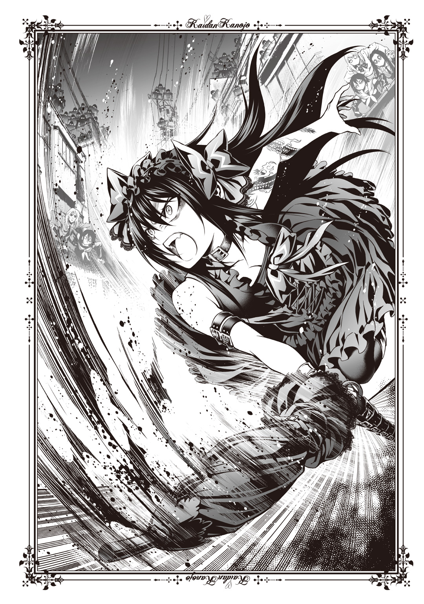
子供ならそれだけで泣きそうなほど怒りに顔を歪めた黒川が、怒号と共に得物を振るう。いつもなら苦笑いを浮かべたい武器だが、今日は心強い。
いや、心強いというのなら、黒川本人か。
まだいささか、黒川に対して感情の整理が追いついていない。こいつは八年間、俺を監視し続けてきた。好きだの愛しているだの、そんな言葉で誤魔化し、噓をついて。おまけに、黒川本人の呪いだか何だかという理由でもあるそうだった。
黒川は、怪異。それゆえ最悪器官が必要だった。
......泣き虫だった頃は、怪異なんかじゃなかったらしいが。
そういえばこいつがあまり泣かなくなったのは、八年くらい前からじゃなかったか。
「槍牙くん、あのカーブミラーまで前進するわよ」
黒川が指示を出し、俺はその細い肩に手をのせて続く。俺がこの場でできることは黒川から離れないことと、戦闘の邪魔にならないことだ。難しく感じられそうだが、そんなことはない。
てけてけは、泣きぼくろがあるかないかを確認すればいいだけだ。あとは放っておいても黒川が撃墜する。だから俺は、黒川の動きに注意していればいい。すさまじい動きだったが、俺には予想がついた。黒川がどう動きたいのか、ここからどう動くつもりなのか。それを、俺はさほど考えずに理解できる。
八年間、べったりくっつかれていたのだ。黒川のことは知り尽くしていた。左腕の呪いと、俺を監視していたこと以外は。
だから、俺は黒川の攻撃が当たらない範囲で、怪異を倒すたびに黒川に触れればいい。怪力に見合わない小さい肩に触れるたび、黒川の表情から憎悪が抜けて、穏やかになる。その一瞬だけ見れば黒川が、ああ本当に美人なんだよな、と思う。
実のところ俺は、黒川に「好き」だの「愛している」だのと言われるのが、心地よかったのかもしれない。単に恥ずかしかったのと、ちょっと愛が重かっただけで。
......ちょっと、なんてものではないか。
ともあれ、黒川と共に戦うということは存外、難しくもなかった。実際、ちょっと見ていれば黒川が殴れば確かにてけてけは消える。まるで最初からいなかったように、あっさりと。煙みたいに空気に溶けて、二度と固まることはない。
ゆうに、二百体は倒したか。
それでもあのボス――泣きぼくろのてけてけはいない。
黒川の左腕を見る。黒い龍に変化はない。それでもこの力は、こいつが理由なのだろう。先ほど、そういった説明を受けた。
「学校まであとちょっと......槍牙くん、大丈夫？」
「俺は平気。お前は？」
「大丈夫よ。問題ないわ」
にっ、と笑う黒川。妙に残虐そうな微笑みは健在だ。肩に手を置いた瞬間の、あのゆるんだ表情とはまるで印象が変わる。目をそらしつつ感心する。
あれだけ暴れているこの幼馴染は、息一つ切らしていない。恐るべき体力だった。
脳裏に大徳寺とかいう、やたら背の高い女のことが思い出される。あいつは午前五時まで――あと三時間以内に泣きぼくろのあるてけてけを打ち倒さないと、俺を殺すと言ってきた。受け入れがたいが、俺にもわかってはいる。
『最悪器官』と名づけられた通り、こんな人間はいちゃいけないんだろう。
考えてみれば黒川は俺から怪談話を聞くような機会をすべて奪い、目に入るものは文庫本一冊、看板一つに至るまですべて選別してきた。そうしてようやく、俺は存在を許されたのだ。理屈はわかっている。
理屈だけは、だ。感情までは納得しきれない。
殺されてなどなるものか。賭けに負けるつもりは最初からなかった。脳裏に何度も細かくフラッシュバックするのは、俺の腕の中で命を失くした長谷部さんと、むざむざとすぐそばで殺された小笛先輩のことだ。
この手にまだ、長谷部さんの熱と感触が残っていた。
さっき、遺体で見つかったと聞いた。
小笛先輩を殺したてけてけならば、黒川が即座に倒していた。しかし、長谷部さんのほうはまだだ。そして、そいつさえ殺せばゲームは勝てる。俺の復讐も果たせる。
八年前にたくさんの人が死んだ。その実感は薄い。
それでもあの場にいたお爺さんや、医者のお姉さん、大徳寺さん、お婆さんらの視線が物語っていた――お前は、罪深いと。
八年前のことを忘れていたことへの償いになるとでも、俺は思っているのだろうか。
償えないとはわかっているけれど、でも――あんな化け物を見るような視線が嫌で、それで挽回したかったというのは多分、ある。俺がこのゲームに乗った理由の中には。
問題は、この膨大なてけてけの中から、あの泣きぼくろのてけてけを探し出すことだ。
怪談の内容からも、おそらく中学校にいるだろうと推測は立っているのだが――
「着いたわ」
黒川の指示通りに少しずつ前進していき、俺たちはようやく鷹夏中学校へ到着した。ひと気はない。ここまで住宅街を通ろうと、公園の中を突っきろうと、同じだった。外にこんな化け物がひしめいていれば、誰も外へなど出るわけがない。住民全員が、家の中に引っこんでいるのだろうことは知れた。
これは、俺が引き起こしたこと。占い屋さんみたいなお婆さんが言っていたことを思い出す。誰も悪くなくても、こういうことは起きるのだと。
だから俺は、腹をくくった。『最悪器官』と聞かされてむきになり、黒川に啖呵を切って、すぐ追いかけてきた丸坊主のお爺さん――壱元、とかいったか――に腹を打たれて気絶させられた後で。
あの落ち着かない黒川の部屋のベッドの中で、黒川特有のあの桃の匂いに包まれながら。
一度眠ったことで冷静になったのかもしれない。少なくとも吐くようなことはない。
......ちょっとあれはみっともなかったよな、といまさらながら後悔するが。
ただとにかく、長谷部さんと小笛先輩を殺したあいつらを許せない。
「黒川、泣きぼくろのある奴がいたら教えてくれ。あいつかどうか、見極める」
ええ、と黒川が俺に嬉しそうな、でもやっぱり残酷げな瞳を向ける。「でも見つけ次第、撲滅しちゃうかも」という言葉にはどことなく、余裕の笑みがもれていた。いつもは十数分の道のりである学校までの道に、数時間も費やしておいて。
ボス怪異がいるかもしれないと思い、応戦していたのでやはりそれくらい時間はかかる。
これまでの戦いでわかっていることだが、案外てけてけはその外見に差を持っている。髪の長さ、色、服、動きにさえ違いがある。あまりじろじろと見たくはないが、切断されている箇所も腰だったり、太ももの半分ほどだったり、胸くらいまでしかないのもいた。顔となればもっと違う。とんでもなく美人の奴もいたし、般若のお面でもかぶっているようなのもいた。
よく覚えている。長谷部さんを殺したあいつは、膨れた面をしていた。小笛先輩が語った怪談の通りの、私刑を受けた人間の顔だ。泣きぼくろを見つけるのは至難に思えるが、俺は黒川に触れている他に仕事はない。集中くらい、どうということはなかった。
校門の前で息を整えると、俺は黒川に言った。
「じゃあ、行こうか。とりあえず、最初に俺と長谷部さんが襲われた地点だ」
「ええ、わかったわ。ではとりあえず――校舎に入るわね」
校門から校舎まで、連中は十数体ほどいた。案外、少ない。というか。
「......黒川。ちょっと聞いていいか？」
「ええ、何でも聞いて。槍牙くんにならスリーサイズだって教えてあげる」
それはいい、と返す。いつものふざけた言葉が出せる程度には、砕けてきたなと感じる。お互いに持ち合わせていたわだかまりはかすかにあるが、無視できる程度に削れていた。
「てけてけの奴ら、何かこれといった狙いがあって動いているのか？」
「いいえ。一つ一つは怪談が違うからどういった基準で狙っているのかはわからないけれども、ほとんど動物的な動きのはずよ」
「つまり、ただ人がいたから襲っているはず、っていうことだよな？」
肯定しながら、眉根を寄せる黒川。異変に気づいたのだろう。
校舎のそばには確かに何十という数の怪異がいる。無論、奴らは俺たちに気づいている。それなのに、何故か奴らは俺たちへと襲いかかってこない。待ち構えてさえいるような印象を受ける。動きと雄叫びがあまりに人間離れしているから失念していたのだが、もしかして。
「てけてけの奴ら、何か考えがあって動いていないか......？ その、チームを組んでいるような感じがあるんだが......」
「まさか。指揮官がいるのなら話は別でしょうけれど......いえ、いるのかしら？」
黒川が細いあごに手をやり、思案する。当然、周囲への警戒は怠っていないようだ。
もしてけてけに組織的――極端に言えば軍隊のような動きがあるとすれば、こんなに厄介なことはない。これだけの兵隊を備え、頭脳まであるなら――
「......でも槍牙くん。仮にそうだとして、そして私たちが誘いこまれていたのだとしても時間がないのは変わらないのよ？」
その通り。考えている暇などない。俺は軽くため息をついた。
「とりあえず、正面突破だな。頼むぞ」
「ええ。あ、そうだ槍牙くん」
振り返った黒川は日傘を持っていないほうの手で軽くスカートをつまんで上げた。黒いブーツに、ごてごてと金具がついているのが見える。
「もしよければスカートの中に入ってね。そしたら戦いやすいから」
「......普通に避けるから、俺はここでいい」
確かに黒川にとっては三百六十度、見渡せるようになるだろうが。
校庭を抜け、校舎の中に入る。薄暗い廊下は不気味だった。
夜の学校というのは元々そういうところがあるけれど、それ以上にてけてけの動きが不可解だ。学校がらみの怪談は多いらしく、てけてけもその代表格だ。黒川や灯さんの考察によれば、中学校はもっともてけてけであふれていていい場所らしい。
それなのに、外にいたときよりずっと、てけてけの数は少ない。
「ちょっとでも頭を使えば、私たちが学校に来ることはわかっていたことよね。ここに来るまでに戦闘がおこなわれた理由は......時間稼ぎ？ いえ、だとしても何の時間を......」
ぶつぶつと黒川がつぶやいているのがいい証拠だ。この状況は、おかしい。
実際、てけてけ自体はいる。しかしほとんどが校舎の外をうろついているだけで、こちらには危害を加えようとする意思がまったく感じられない。校内は静かなもので、俺たち以外に生きているものなどいないかのようだった。
俺と黒川は図書室近くの階段をざっと検分しながら一階に結局戻る。
「槍牙くん。とりあえず、保健室を目指す方向でいいかしら？」
「いいけど黒川、俺が泣きぼくろのあるてけてけを見たのは、ここだぞ？」
「ちょっとでも関連づけられそうな場所なら、そのほうがいいかと思って。だからその後は屋上に行くわよ」
屋上に行く理由はおそらく、泣きぼくろのあるてけてけが私刑を受けた場所だからだろう。落下した場所、ということで校舎の周りを見てもいいのだが、具体的な場所は怪談の中で明示されていない。時計を見る。まだ二時間半あった。屋外では足止めを食らったが、屋内だと多少は敵の数が限られてきたようだ。
たった一体の例のてけてけを見つけさえすればいい。あとは黒川が追いかけてぶちのめす。俺だってこの異形の群れに対してだんだん、耐性ができてきているのだ。そうそう、足はもつれまい。むしろいつもより力強く踏み出せるのではないかと思えるほどだった。
廊下を進む。窓ガラスの向こう側、外側にてけてけが増えているような気がした。
「......閉じこめられている？ いえ、まさかね」
黒川が不安そうにつぶやく。はっきり言って俺は怪異について門外漢、どころか一日前までその存在を知らなかったくらいなので、特に口出しはしない。多く長く触れていたのは間違いなく、黒川のほうなのだから。ここでの判断は任せる。
俺は外をにらみつけるようにして、例の泣きぼくろのてけてけを探す。動きの素早い連中ではあるが、一度あれだけ間近で見た異形、しかも最初に見たてけてけだ。頭の中に刻みつけられた印象は強い。
しかし、どうやらいま目に見える範囲にはいないようだった。ほとんどは服装の違いで判別できる。
「......槍牙くん、怪談の中に他の情報はなかった？ 三年生だった、とか。飼育委員だった、とか」
「いや、ないかな。やっぱりそういうのがあると、違うか」
「まあ、学校全体が大きいから関連づけられる場所を優先的に見ていきたいのよ。屋上が終わったら、もう手がかりなしのローラー作戦しかないから」
鷹夏中学校は地方の学校にしては規模が大きい。いくら二時間半あるとはいえ、のんびりしているわけにもいかない。
俺と黒川は保健室へ急いだ。幸い、戦闘はない。やはりそれが気味悪かった。
数分で到着した保健室に、複雑な気持ちを覚える。入室したことなどほとんどないし、よく来ていたのは扉側ではなく窓辺の話なのだけれども、それでもここは、いつも。
「槍牙くん。例の友原小笛とかいう女のことを考えているのかしら？」
いつもなら重ねて「私のことで頭いっぱいにしてくれなくちゃ嫌」とかほざきだす黒川だが、気遣ってくれたのかそこまでは言わない。
もしかすると、そんな余裕もないだけかもしれないが。
黒川はただ黙って、首を動かして肩に置いた俺の手にほおずりをした。手の甲をさらりと髪がなでる。相変わらず、触り心地のいい髪だ。
大丈夫よ、と黒川が慰めたので、俺は引き戸に手をかける。
「開けるぞ」「ええ」という短いやり取りの一瞬後、がらりと扉を開いた。
「やっと――来ましたね」
声がした。黒川が叫ぶ。
「誰！ そこにいるのは！」
保健室の先生用の椅子に、確かに誰かが座っていた。
相手の顔が見えたとき、俺も怒鳴った。
「何で......何であんたがここにいるんだ！ 野波さん！」
体に比して少し大きな上着、全体的に小柄な姿。けれどぴんと伸びた指は長く、赤い毛糸を繰ってあっという間にあやとりで富士山を作る。せっかくの力作をほどき、彼女はこちらを見た。
クラスメイトの野波小百合さんが、制服姿のまま立ち上がる。
そしてこれまで一度も発することのなかった声を、俺と黒川に向けた。
「何でって、あなたを殺すためですね。『最悪器官』の斉藤槍牙くん」
野波さんの声――初めて耳にした。
高くて細い声は淡々としていて表情がない、人形みたいな声だった。
「殺す......？」
「知らなかったんですね。知られないようにしていましたからね。でも黒川夢乃はいま喋り方でわかっちゃったかもしれないですね。だって私、八年前に会っていますからね」
野波さんのきつい視線が、日傘を剣のように構えた黒川へと向けられる。ひょっとして本当に喋り方で何か思い出したのか、黒川の視線は険しい。
黒川、と声をかけると、舌打ちをしてから幼馴染は応じた。
「......ええ。この特徴的な物言いと、糸を遣うところに覚えがあるわ。そういえばそうね。小百合......そうね、野波という家に引き取られたわけね。気づかなかったわ」
「普通は気づくんですけどね。そこの最悪器官は特性上しかたありませんけれどもね、黒川夢乃は気づいてしかるべきだったとは思うんですけどね」
......まさかと思うが。
「黒川、お前、昔野波さんと会っているのか？」
「ええ」
「気づけよ！ 同じクラスだろうが！」
槍牙くん以外興味ないもの、と普段からのたまっているとはいえ。
「ええ、言われてみれば面影があったわよ――平賀小百合！」
黒川が突撃する。その一瞬しかない間に、確かに野波さんは「旧姓ですけどね」と返していた。俺が遅れて一歩踏み出す間に、なかなか見られない事態が繰り広げられていた。
しかし、喜んでいられるような状況ではなかったが。
「っ、黒川！」
保健室の中央で、黒川夢乃が宙に浮いていたのだ。おまけに上下逆さまになっており、床にまで長くて綺麗な髪が垂れている。スカートがめくれそうになるが、かろうじてブーツの金具に引っかかって中は見えない。まるでクモの糸に引っかかった蝶のようだ。ばたばたと全身でもがくも、宙に浮いた黒川の腕は空回るだけだ。
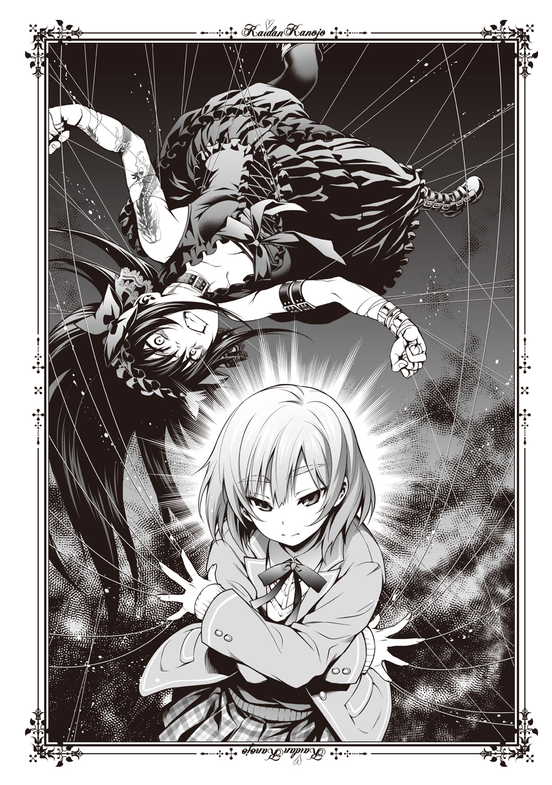
――糸。
じたばたするのをやめた黒川の悔しそうな声がうなった。
「......やられたわ。糸をこうまで操るとはね。想定外よ」
「それが武器ですからね。怪異を殺すなら、これがかなり楽ですからね」
なおも平然とした様子の野波さんがこちらに足を踏み出した。いつの間にか両手を翼のように広げて構えている。くい、と長く綺麗な右手の中指が曲がった。途端黒川の足が広がり、より際どいところまでスカートが下がる。金具に引っかかっているとはいえ、動けばそれも外れるだろう。
やはり糸で黒川は吊られているのか。あやつり人形みたいになっていることがわかるものの、糸がどこにどう張り巡らされているのかわからなくて動けない。俺は叫ぶ。
「野波さん！ これ野波さんがやっているのか！ 糸を遣って！」
「そうですね。やっと気づいたんですね」
小馬鹿にされている感じはない。そんな感情さえ、声にはこもっていないのだ。
槍牙くん、と黒川が冷静な声で、けれども獰猛な獣を思わせるうなり声をあげた。
「こいつに何を言っても無駄よ。平賀小百合――八年前に家族を殺された、糸遣いの怪異殺し......強くなったのね。八年前は泣いて逃げることしかできなかったくせに。そういえば、『殲』のメンバーだったわね」
「そうですね。だから気づかないのが変なんですけどね」
「野波さんが......『殲』？」
ちら、と野波さんが俺に視線を向けて、淡々と言う。
「そうですね。最悪器官は確か、怪異が消えるとその怪異にまつわる記憶が消えるんですよね。だから覚えていないと思いますけどね」
説明はそれだけだった。ただ、どうやら野波さんがあの灯さんなどを含めた『殲』に加入していたらしいと知れる。そして先刻の台詞で、俺を。
最悪器官を、殺したがっているのだとも。
「大徳寺先生にお世話になっていましたね。お会いになりましたよね？ 大徳寺刃心先生」
先生、と呼ぶほどに慕っているのだろう。しかし、俺よりも反応があからさまだったのは、逆さになったきりの黒川のほうだった。息を飲み、体をもがく。
「平賀小百合、あなた大徳寺の――っ」
「そうですね。位階はあなたと同じ、乙の下......ただ、身動きのとれないあなたより有利かとは思いますけどね」
それから野波さんは俺に視線を向けた。
「八年前に両親と姉を怪異に殺されて、言い換えれば最悪器官に殺されて、天涯孤独になった私を引き取ってくれた大徳寺先生に教えてもらいましたね。怪異との戦い方も、殺し方も、最悪器官の殺し方も、復讐の果たし方も、全部、この日のためにね」
朗読しているみたいな言い方だった。それなのに、殺意がきちんと、伝わる。
「槍牙くん、聞かないで！ いま、私がこいつを殺すから！」
黒川が体を動かそうと、必死にもがく。空中に妙な輝きが伝い、ほんのわずかに血の匂いがした。
「あまり動かないほうがいいですね。ピアノ線で空中に固定していますからね」
ピアノ線――黒川の体のあちこちから血が出ており、それが糸を伝って光ったのだ。俺はピアノ線を切るための刃物がないかと保健室内を見回す。しかし、どうやらはさみやカッターナイフといった刃物は、事務机の上のペン立てにあるものだけらしい。
せめて灯さんの短刀くらいは借りておくべきだったかと後悔するも、そんなことをしたところで意味はない。黒川が体を揺らすたびに、血の匂いが濃くなっていく。
「野波さん！ 糸を外してくれ！」
「最悪器官も頭が悪いですね。私の言葉を聞いていれば、何が目的かわかるんですけどね」
特別、糸をくぐり抜けているようにも見えないのに、野波さんは暴れる黒川の隣を平然と歩いて、俺へと近づいてくる。黒川が額に青筋を立てて怒鳴る。
「平賀小百合！ 私の槍牙くんに手出ししたらぶち殺す！ 腹かっさばいて中身取り出して全部口に詰めこんで食わせてたっぷり苦しんだ後で頭蓋骨も脳漿も全部まとめて粉々にしてぶち殺してやる！」
「黒川もがくな！ 腕......」
見れば、もうピアノ線の巻きついている場所がわかってしまうほど、黒川は血をこぼしていた。腕だけでなく、首からも出血していた。あれでは、首がしまってしまう。
赤い雫が、床に垂れた。
「最悪器官、あなたはわからないですよね。家族を失うつらさとか、目の前にあった日常が消える痛みとかね。でも私ね、ちゃんと覚えているんですね。忘れたいんですけどね。お父さんがちょっと強引だけど優しかったこととかね、お母さんが作るコロッケが大きくて美味しかったこととかね、お姉ちゃんと一緒に漫画を読んだこととかね。つらいのに、ね」
野波さんのぼんやりとした無表情に、一筋の涙がこぼれ落ちる。感情を排しているような姿と、その人間らしさにギャップを見た。
その目に宿った、静かな殺気にも気づかされる。教室でじっと俺の目を見ていたときにも、こめられていたのはそれだったのだとも。
「あなたが殺したんですね。あなたのせいで、私の家族は死んだんですね」
「槍牙くん！ 聞いちゃダメ！ この......っ！」
黒川が無理をしそうだとわかった。だから俺は、目の前にいた野波さんを突き飛ばす。ほとんど体当たりみたいな形になって、骨ばって薄いその体に肩からぶつかる。
ほとんど抵抗もなく、野波さんは吹っ飛んだ。ぶつかった戸棚は大きく揺れて、音を鳴らす。俺は一瞬だけ申し訳なくなるも、いまの黒川の状況を考えてすぐさま頭から切り離した。それに、俺は自分に殺意を抱いている人間まで心配してやれるほど、優しいつもりもなかった。
「黒川、待っていろ！」
黒川の血のおかげで糸の場所は見えている。それらをかわしながら、俺は事務机の上にあるハサミを目指した。ピアノ線がそれで切れるかはわからないが、少しでも切れ目が入れば少なくとも切れやすくはなるだろう。
黒川ならば、引き千切れるか。そう思って俺の頭の芯が、やっと冷えた。
あの黒川が易々と引っかかったほどのトラップが――まだあるとしたら？
デスクにあと一歩、いや、半歩。そこに来てやっと、それに思い至る。
もしかして野波さんは、俺がここに来ることも予想して――？
「槍牙くん逃げて！ そこはまずい――！」
黒川が叫ぶ。しかしすでに遅く、俺の体がぐんっ、と持ち上がった。腕、足、首、胴に何かがからんでいるような感触がある。糸だと、見えていなくてもわかる。かろうじて黒川とは違い、正位置のまま吊られた。苦しくはないが、地に足のつかない不安感は絶大だ。
目の前に、黒川の足が見える。スカートがめくれてしまえば、目の前数十センチの位置に下着が見えてしまうだろう。何となくそれは、困る。
ゆっくりと野波さんが戻ってくる。変わらぬ無表情は作り物めいていた。
黒川が俺の足の下ほどでうめく。
「大徳寺の入れ知恵かしらね......本当、腹立たしい。あの女狐......っ」
「大徳寺先生の言う通りでしたね。聡明ながらも愚直な黒川夢乃と、聡明でもないのに愚直な最悪器官だと言っていましたね。おかげで、苦労はありませんでしたね」
淡々とした足取りで俺の前、黒川との隙間に立った野波さんは、視線に反して背後の黒川に尋ねる。
「それで、何でしたっけね」
「何がかしら？ 見えない糸を遣うしか芸も能もない卑怯者。言っておくけれど、あなたの家族が死んだのは怪異のせいであり、槍牙くんのせいじゃないわよ」
「減らず口ですね。私が聞いているのは、あなたがさっき私に告げた処刑方法ですけどね」
野波さんの、いつもあやとりに忙しそうだった長い指が俺の胸の真ん中にすとん、と置かれる。くすぐったさを覚えたのも一瞬、すぐに指に力がこめられ、痛みが走った。
その強さから、わかってしまう。野波さんの怒りが。表情に表れない、感情が。
「腹をかっさばいて中身を取り出して食わせて、最後に脳漿と頭蓋骨を粉砕するんですよね？ 目の前で見せますね？ 私でなく、最悪器官で、ですけどね」
くるんっ、と黒川の体が回った。またぞろ野波さんが指を操作したのだろう。どうやっているのかまではわからないが、人形師のようだ。
黒川が、距離を保ったまま正位置に戻る。長く下方にあった顔は紅潮していた。血が下りてきているだけではなく――怒りで。
「......やってくれたわね、平賀小百合。あんた、本当にやってくれたわ」
静かな声。けれど明らかに怒りがにじんでいた。黒川の首が前のめりになり、表情まではうかがえなくなる。代わりに、部屋の中に、ぶわっ、と濃い桃の匂いがあふれた。黒川の匂いだと一瞬で理解できてしまう。膨れ上がったのは香りというより、おそらく。
黒川夢乃の、殺気。
「ぶ！ ち！ こ！ ろ！ す！」
びしっ、と鋭い音がして、俺の顔にまで血飛沫が跳ぶ。黒川が本当に、無茶を始めた。覚悟だけは、空気をびりびりと震わせて伝わってしまう。
首がもげても、殺す。そう聞こえるほどの気迫だった。
やめろ黒川、と叫ぼうとした。けれど、それは叶わない。俺の首にからんだ糸状の何かが食いこんだわけでも、喉が潰されたわけでもない。
ただ、それどころではなくなっただけだ。
がしゃああぁぁぁんっ、と激しい音が背後に湧き上がった。続いて、キシャアアッ、という鋭い、獣のような声が甲高く爆ぜる。何が起きているのか、わかったのは黒川のつぶやきがあったからだ。そうでもなければ、後ろ向きの俺にはわかるまい。
野波小百合は結局、無表情だったのだし。
「てけてけ......っ！」
黒川の驚嘆。
校舎の外をうろついていた、てけてけたちが窓をぶち破って入室してきた。奴らの腕は人間の体をもぶった斬ることができる。はさみやナイフなど比較にならないほどの、刃物だった。
ぷつんぷつんっ、と軽い音と衝撃がして、俺の体が床に落ちる。そのころには野波さんの姿は見えず、保健室の扉から出ていく影と、それを追いかけていくてけてけらしい小さい影がいくつか見えたが、それより俺にはもっと重要なことがあった。
「黒川！」
「大丈夫！」
てけてけが野波さんを追いかけた影響だろう。黒川の体も半分ほど吊り上げられていたが、日傘を持った左手は自由になっている。振るわれた日傘に何体か、てけてけが巻きこまれて消えた。俺はそこでやっと、背後を見る。
割れた窓ガラス。事務机の上はぐちゃぐちゃで、すぐにはさみやナイフがどこにあるかはわからない。おまけに、ガラスの破片が散らばっていた。
俺はその中から、手にしやすい大きさのガラス片を手に取り、事務机の端へと足をかけ、飛び跳ねた。ぐいっ、と身をひねり、空中に固定された黒川の腕を見る。その周囲に、妙な光沢を見た――糸だ。
「糸を切る！ 着地してくれ！」
「任せて！」
思いきりガラスの破片を叩きつけて引いたせいか、ぷつん、とピアノ線は切れた。尖ったガラスだったことも幸いしたかもしれない。俺はそのまま落下の勢いも使って、黒川の宙に浮いた足のほうも自由にする。
まだピアノ線が巻きついているのかもしれないが、黒川は綺麗に膝を曲げて着地し、すぐさま立ち上がって日傘を振るう。俺はもう避ける余裕がないので、一番邪魔にならないところへ逃げこんだ。
俺も着地したせいで、床に膝をつく格好になっていたのだ。目の前にあったのだからしかたがない。そう、言い訳だけはさせてもらおう。
俺は黒川のロングスカートをまくると、その中へともぐりこんで白くてすべすべの足へと抱きついた。そこから動揺した様子は見られず、ただ黒川の気迫と、てけてけどもの雄叫びがしばらく、スカートの布を通して伝わってくる。
黒川のスカートの中は案の定、桃の香りに満ちていた。
「......何ではしゃいでいるわけ？ お前」
「だって槍牙くんが私のスカートの中におのずから顔を突っこみ、足にすがってくれたのよ？ これを『スカートもぐり記念日』と祝さずして何を祝おうというの？」
祝わなくていい。いや、というか俺たちが直面している問題はそこじゃない。
「野波さんがどこにいるかわからないうえ、てけてけの連中が侵入してきたんだぞ？」
「そうね。おかげで一階へ戻るのには骨が折れるわ」
いま俺たちは、一階にあった保健室から逃げて二階にいる。黒川がかなりぶちのめした（と思う。スカートの中だったので見えなかったが）後で、本格的に移動せねばならぬほど一斉にてけてけが押し寄せたのだ。いくら俺が邪魔をしていなかったとはいえ、倒しつくせぬと判断した黒川は、ものすごく、本当にとんでもなく、世界が終わるんじゃないかというくらい悔しくて惜しそうな口振りと表情で俺をスカートから出し、救急箱を持たせて逃げたのだ。
「......ちなみに黒川、その辺探せば誰かが置き忘れていったジャージとかありそうだけれど、着替える気はないか？」
「嫌よ、あんなださいもの」
......だろうな。やっぱり持ってこなくて正解だったかもしれない。個人的には黒川の胸の膨らみが服の破れからちらちらのぞいているのが、思春期の目には毒なのだが。
俺たちは一階を埋め尽くしたてけてけに警戒しながら、持ち出してきた救急箱で黒川の全身と、俺の右手を治療したのだった。俺のほうは、さっきガラスで切ってしまったのだ。黒川が消毒液の存在を無視して、俺の手を涎まみれにしてくれたが。
一応その上から包帯を巻いたし、これでいいだろう。
「なんかさっきの保健室でのてけてけ......俺たちを野波さんから助けたみたいに思えたけど......」
「単に平賀を殺したかったのかしら......でも、意図的な動きだったわね。あれは」
野波さんがてけてけに狙われているというなら......。
「野波さん、『殲』のメンバーだっていうなら、てけてけにはやられてないか......？」
「少なくともここに一人でいたわけだし、大徳寺の下にいたなら戦闘訓練も受けているのでしょう。校内のてけてけが減っていたのも、あいつの仕業ね」
大徳寺さんとやらがどういう人なのかは知らないので、そこは黒川の判断に任せた。しかし、野波さんの家族のことなど初めて聞いたが......。
八年前のことを、これほど強烈に恨まれているのかと実感が湧いてきた。
「槍牙くん。野波小百合のことも、八年前のことも、今回の被害者のことも、気にしなくていいわ」
廊下を進み、階段を上がって三階に場所を移す。
「網浜の妖怪婆......占い師みたいな老婆が、言っていたでしょう？」
――誰も悪くねぇ。
「槍牙くんは何も悪くない。だから、失ったものの責任まで負わなくていいの。槍牙くん以外に背負わせる先がないから、あいつらは自分で抱えきれずに押しつけるだけなのよ」
たとえそうだとしても――忘れていたのが、心苦しい。あれだけの殺意を向けられるような大事件だったのに。
それが、つらかった。
階段の踊り場で黒川が、肩にのせていた俺の手を握る。包帯を巻いたほうの手ではあるけれど、痛くはない。むしろ柔らかくて、温かかった。黒川の手は、何体ものてけてけを葬ってきたとは思えないほど、か細い手だった。
「槍牙くんはただ私のそばにいて、私のことだけを考えてくれたらいいのよ」
「......いや、俺はてけてけを倒すことしか考えてないけど」
「ええ。そのために私を使うのでしょう？ つまりそれは私のことを考えてくれるということよ。ほぉら相思相愛」
そうなんだろうか、と思ったところで三階に到着する。
「......予定通り、屋上に行こうか。三階もあんまり、様子は変わらないし」
「そうね。ただ、どうも連中の動きが......さっき言っていたように、組織的ね」
「誰か、指揮官がいるっていうこと？」
てけてけは個体の差があれど、基本的に優劣や上下があるとは思えない。その辺は確かに群れで行動する野生動物に近いのかもしれない。だから、もしかしてリーダーがいるのかも、という話になってもどれがその指揮官なのか......って。
まさか、と屋上への階段に向かいながら、俺は黒川の顔を見る。ええ、とうなずいた。
「泣きぼくろのある奴が、もしかしたらそうかもしれないわね。少なくとも槍牙くんが初めて見たてけてけなのだから、可能性は他の奴らより高いわよ」
掃除用具のロッカーを見つけたので開き、長いホウキを出す。それを使い、歩いていく先に糸が張り巡らされていないかを確認していきながら進む。
「槍牙くん、ちなみに屋上から飛び降りても大丈夫かしら？」
「俺は無理。お前は......体勢次第じゃねえか？ 昼に飛んできただろう」
「槍牙くんを見たら、たとえ地雷原でも私は突っきるわ」
現実を見ていないにもほどがある。命知らずが。
「まあ、それでもやっぱり、私も変な姿勢だったら無理かしらね。屋上ダイブ。今後の戦いによっては要求される可能性、高いのだけれど」
「その前にてけてけたちがいるから、あんまり単独で飛び降りたくはないな」
地面に足が着いた瞬間、その足をもがれそうな気がする。
「私だって多分、戦えるには戦えるけれど、十秒以上槍牙くんと離れていたら危ないかも」
「これまでもそれくらいの時間は離れていると思うんだが......」
「群がられたらの話よ」
脳裏に、子供の頃に見た光景が浮かぶ。地面に落としてしまった甘いアイスに、アリがたかってくる様子だ。よほどアリの多い場所に落としてしまったらしく、ぞわぞわと黒い塊と化した虫の群れがうごめく姿は、ちょっと引いた。
黒川がぎゃんぎゃん泣くからそれどころではなかったが......ちなみにその後、黒川は俺の口からアイスを強奪することになる。そんな話を長谷部さんとしたな、と思うと途端に、どっと喪失感が胸にあふれる。
他のことを考えようと思い、ちら、と横を見る。首に痛々しい血の跡をつけてなお、黒川は悠然と涼しい顔をしている。わずかに眉間だけが冷たくしわを作っていた。
「......強くなったもんだ、お前も」
「槍牙くんのために、強くなったのよ」
何ともないように言う黒川。左腕の龍が、何故だか笑ったような気さえする。
屋上までは何もなく到着した。結局野波さんの追撃はないまま、ここまで来てしまう。もしかすると彼女はあきらめたのかもしれない、と楽観してみるが、本当は違うことはわかっている。あの復讐心、殺気は尋常じゃない。普段からあんなものを隠して後ろの座席にいたのかと思うとぞっとするほどだ。
放つ殺気より、それを抑えてそばにいた事実のほうがよほど恐怖の度合いも強い。
「......野波さんの静けさがどうも、落ち着かないな」
「大徳寺の配下ならば、おそらく連絡はできているはずよ。もしかすると午前五時に現れる処刑人は、大徳寺本人ではなく平賀小百合なのかもしれないわね」
その大徳寺さんがいまどこで戦っているのかは知らないが、距離が離れているのなら代理処刑人の可能性もあるだろう。しかし。
「約束を知っているなら、無理にいま俺たちと戦う必要なんてないだろ？」
「さあ。いまの状況だったらどんな殺され方をしても、『てけてけの仕業でした』と言えばそれで済む話かもしれないから」
野波さんがなぞった胸と腹が、ぞっと冷えた。てけてけとて充分に残忍ではあるものの、彼女はそれを上回る行為に平気で手を染めそうだ。あの機械みたいな口調には、人間らしさというものがなかった。八年前に、失くしたのかもしれない。
......やめよう。悪い思考がドツボにはまる。
「特にトラップの類はないみたいね。行きましょう」
俺のホウキと黒川の日傘、両方で確認したが何もないようだ。それより、同じフロアの向こうから、あの忌まわしい足音が響いてくる。
てけてけてけてけてけてけてけてけてけてけてけてけてけてけてけてけてけてけ......
俺と黒川は屋上への扉に手をかける。錠は元々開いているようで、抵抗なく扉は開いた。
がちゃり、という音の後、油の差していない、ぎぎぃ、という耳障りな音がする。静かな夜だった。ゆるい角度から月明かりが差す。タイムリミットは迫っている。
その青白い光のなかに浮かぶのは、てけてけの姿。百はいるだろう。泣きぼくろの奴を探すのにどれほど時間がかかることか。
そいつらが、俺と黒川に照準を合わせるように向き、そして。
「邪魔ですね」
銀の直線が空中をきらきらと渡った途端、粉々に砕けて、消えた。
＊
お父さんと、お母さんと、お姉ちゃんと、私。
みんな幽霊が見える体質で、だから旅行や海には縁がなかった。ホテルにも海にも、そういうのはいっぱいいるから。いつも家にばかりいて、だけど。
私が、大徳寺先生に会ったの。大徳寺先生は、幽霊とか怪異とか、そういうものの倒し方を教えてくれるって私を可愛がってくれた。私には、素質があったから。
たくさんの罠を張って、そのいくつかに相手が引っかかればいいように誘導する素質。糸を操る素質。怪異を倒せる素質。
十歳になる頃には、立派な霊能力者になれるよ、って先生は言った。だからみんなで、話していたの。私が十歳になったら、旅行へ行こうって。海に、二泊三日くらいで、夏休みにって。私が守るから、大丈夫だよねって。
けれど、そのときは来なかった。
私が五歳のときに、みんな殺されてしまったから。
幽霊に、怪異に――最悪器官に。
私が十歳になっても、家族旅行はできなくなってしまった。いま引き取ってくれた家の人たちとは行けても、本当の家族とはもう。
だから大徳寺先生に、私はずっと習ってきた。
怪異の殺し方よりも力を入れて――最悪器官の殺し方を。
そして今日この日――怪異が再び、この世界に実在した。
てけてけの暴れるこの世界なら、合法的に最悪器官を殺せる。
＊
「これが、私の思い出なんですね。戦う理由で、殺す理由なんですね。争う過程で、滅ぼす過程なんですね。だからもう、いいですね？」
てけてけが一体残らず消えた屋上は空虚さと、殺気が満ちていた。たった一つの影法師が、復讐に暗く濁った、粘っこい視線を光らせる。
野波さんはさっき見たときより、いささかくたびれて見えた。一人でてけてけと戦っていたのだろう。制服のあちこちが破れている。黒川とある意味、いい勝負かもしれない。
ともすれば黒川よりも手酷い傷を受けた印象もある。だがそれがこちらの有利かと問われれば、わからない。
糸を張り巡らせた広範囲攻撃。しかも、怪異をきっちり殺せるおまけつき。
初めて――ここにきて初めて、野波さんがにいぃぃっ、と口の端を吊り上げた。道化の仮面みたいに、心底嬉しそうにいかれた笑顔で。
「もう、殺しちゃってもいいですよね？」
いますぐ振り向いて、登ってきた階段を駆け降りたくなる。だが、あのてけてけという足音が床をゆらす勢いで近づいてきた。
俺たちの来た道を、怪異が追ってきたのだ。
「槍牙くん！ 後ろ！」
俺の前に、盾のようになって立っていた黒川が激しく叫ぶ。俺はしゃがみこむ。その上を、黒川の日傘が走り、真上で「ぐげえっ！」という化け物の断末魔がくぐもる。俺は再び黒川のスカートにもぐりこむのかと、ちょっとだけためらった。
その一瞬で、見えた。翼のように野波さんの両腕が、ゆっくりと上がったのを。
何か、仕掛けるつもりだ。
「野波さん！ やめろ！」
「槍牙くん！」
背後から忍び寄るてけてけは黒川に任せた。俺はスカートの脇をすり抜け一直線に、屋上のほぼ真ん中に立つ野波さんの、嬉しそうな三日月形の笑った口を目がけて突っこむ。
いくら黒川から逃げられるだけの足があろうとも、おそらく俺の体当たりがぶつかるには遠い。ではどうするか。答えは手の中にある。
俺はホウキを長く持ち、野波さん目がけて剣道みたいに突き出した。
「っ！」
野波さんはよほど警戒していなかったらしく、息を飲んでのけぞる。腕の動きは止まった。月明かりに銀糸が、光る。俺はホウキを無茶苦茶に振るい、まるでクモの巣を掃除するように糸を叩く。残念ながら、切るとまではいかない。
それでも野波さんは指や腕を動かすこともできず、ただ俺のホウキから逃げる。その目には焦りの他にも、予想外の事態に対する驚きのようなものも混じっていた。
野波さんは入学してからずっと俺と黒川を見てきたはずだ。当然、俺がどういった人間なのかも観察していたのだろう。俺は黒川から逃げることはあっても、こうして他人に攻撃するタイプではない。むしろ、もっとも殴る理由を有している黒川にすら苦笑いをし、口でこそ悪く言うものの決して肉体的な攻撃はしない。おおかた、そう思っていたのだろう。
俺も、できればそうしたい。黒川がどんな攻撃でもダメージを受けないことを知っているから軽く頭を叩くくらいはあるが、元々他人に暴力を振るうのなど大嫌いだ。今回だって頭に血が上って、ようやくてけてけを殺すなどという物騒な意見を述べ始めたくらいだ。残りの一生、他人を殴ったり蹴ったりすることなどないと思っていた。
その考えを、捨てた。戦うために。
怪談を、撲滅してやるために。
「こ、のおっ！」と野波さんが低く吠える。反撃に出るか、と思った。
俺は背後に向かって叫ぶ。
「黒川！ てけてけをこっちによこせ！」
「な――」と絶句する野波さん。俺の要求があまりに突飛だったためだろう。下手をすれば黒川も戸惑ったかもしれない。けれど、確信はしている。
黒川のほうが絶対、俺の意図を汲むのが早い。
「槍牙くん、行ったわよ！」
黒川がこれまで防いでいたてけてけの何割かをこちらへわざと、通した。野波さんは俺と、俺の後方を交互に見てから苦々しい表情を浮かべる。
俺はホウキによる動きをやめ、わずかに角度をずらしてフェンス際に背を向けるように配置を変え、体を回す。目前、二メートルの位置で野波さんとてけてけがかち合った。
てけてけはすでに糸にからめとられた後らしく、空中に固定されている。月光との相性が悪いのか角度が良かったのか、フェンスのあちこちを通ってクモの巣が張られているのが見える。てけてけの両肘を上にしたような奇妙な動きのせいか、まるでそいつ本人が巣の主みたいだった。
本当の巣の持ち主である野波さんは、床に足をつけたまま一気に左腕を引いた。
クモの巣の形が動く。てけてけをからめたまま二重の円が出来上がり、その内側に星形が浮かぶ。糸のつむぐ文様が細かい。
「......陣？」
黒川も糸の輝きに気づいたらしく、数秒、注視する。しかし、すぐさま背後に迫るてけてけを日傘で打ち、踊るようなステップを踏んで俺の隣に並んだ。小回りのきいた素早い動きだ。てけてけに劣らない、どころか何倍も速い。
「成程。てけてけと平賀小百合をぶつければ、勝手に潰し合ってくれるというわけね」
「まあ、てけてけはこっちにも来るんだが......おっと！」
俺は体を縮め、黒川の足元にすり寄る。腕を伸ばせば届く位置に、てけてけがいた。爆風を起こし、いつもよりすれた印象の日傘が左から右へ、てけてけを巻きこんで通り過ぎていった。異形が消える。無論、相手に泣きぼくろはなかった。
「......黒川、野波さんと協力できないかな？」
「嫌よ。槍牙くんが他の女と手を組むのなんて」
何を張り合っているんだ、お前は。フェンスから下を見た。思った以上に高く、しかも地面は動いていた。いや、正確には地面ではなく――一面に広がるてけてけが。
ぞっとする。校舎や林の陰になっているところでは黒い海が、何もかもを飲みこむ闇のように感じられた。いまさらながらにどれだけの数のてけてけを相手にしていたのか、底が知れなくて不安になる。
ぎゅっ、と左手が握られる。振り向くと、黒川が日傘を構えていないほうの手で俺に触れていた。間近に、黒川の少し疲れた笑みがある。
「ちゃんと、触れて。私を、感じて」
甘い言い方に持ち前の美形が似合う。不覚にもつい見とれそうになるのを、必死で引きはがして周囲への警戒心を強める。どっぷりと沈んだ夜の闇、普段ならばもうすっかり眠っている時間だ。腹の奥がのったりと熱く、体がじんわりと重い。
ふと、てけてけの動きが奇妙なことに気づいた。
「......野波さんに集中している？」
てけてけたちは階下より上がってくるものの、それらは野波さんばかりを狙って動く。俺と黒川のところへは、冷やかし程度の数しか近づいてはこない。無論、それでも間合いに入れば黒川が叩きのめしているが。
俺たちが一体倒す間に、野波さんは十体以上も軽く相手にしている。
日傘の切っ先を下ろすことなく、黒川がつぶやく。
「仮に指揮官がてけてけの中にいるとして、どうやらそいつは、私よりも平賀小百合を警戒、あるいは邪魔に思っているらしいわね。となると、私たちは......」
俺は周囲を見回す。唯一の出入り口はてけてけが息つく間もないほど押し寄せており、かき分けて逆流することは無理そうだ。かと言って、ここから飛び降りて校舎の外へ出るのもうまい話とは言えない。
だよな、と改めてフェンスに手をついて下を見る。呼吸が止まるかと思った。
「........................なあ、黒川。ちょっといいか？」
ためらい、言葉がつっかかる。それほど、この状況は意外だった。いや、別にできないわけじゃないだろう。それでも、何故かできないと思っていた。
これは、もしかするとやばいかもしれないと、心臓が冷えて息も凍えそうになる。
どうしたのかしら、と黒川も俺の見ている、校舎の外へと目をやり、固まる。屋上にはほとんど野波さんに向かっているとはいえ、依然としててけてけが多くいるのに、そんな隙を見せてしまう。だって。
てけてけたちが、校舎の外壁をよじ登ってきていたのだから。
いや、むしろこれだけ速いと、駆け上がってきたと言ったほうが正しいか。
がきんっ、と軽い音がした。その金属同士がかち合うような音は、一斉に周囲のフェンスから、急な土砂降りみたいに響き始める。
やかましいほどの音に周囲を見渡す。野波さんはてけてけたちの相手でどうしようもないらしく、そんな余裕はない。助けに行きたいが、黒川が許可するわけないとあらかじめわかっている。第一、俺一人では戦えない。
俺と黒川はセットである必要があった。
それに野波さんは、俺たちを殺しに来た敵なんだから。
いや、それよりいまはフェンスが――
「っ、壊れるわ！」
黒川は鋭く叫び、走り出した。俺は黒川に腕をつかまれたままだったので、ほとんど引っ張られる形となる。そうだ。この屋上で野波さんがもっとも頼みとしているのは、周囲に張り巡らされたフェンスだろう。糸を遣う、などと言われてもそこまでピンとこないが、手品の種やワイヤーアクションくらいなら俺にもわかる。普段野波さんがあやとりをしていたのもあり、その辺の連想も働いたのだろう。
他にグラウンドの外灯などもあるが、糸を張り巡らせるには金網が必須のはずだ。校庭側にのみ、金網フェンスとは独立した低めの柵があるが、それだけあっても糸は上手く張れまい。そしててけてけは、そいつを崩してきた。ぐらり、と緑色のフェンスが揺れる。何か所か縦にも切ったのだろう。四方にばらけるようにして、高さ三メートルはあるフェンスが開いていく。てけてけたちは低い柵を乗り越え、屋上へ這い上がってくる。
フェンスが四階分の距離を落下し、轟音を立てた。この状況はまずい。いままでは狭い一つの通路から化け物が入ってくるのみだったが、これでは三百六十度、どこからも入ってこられることになる。
「槍牙くん、私のスカートの中に！ 守りきれない！」
すでに日傘を振るい始めている黒川だが、俺は従えない。小回りのやたらきく化け物たちが間に割って入ったわけでもない。すでに足を止められているわけでもない。
俺が見ていたのは、野波小百合だったからだ。
彼女は腕を精一杯に振り回し、銀色の糸を散らして何とか防いでいるような状況だった。しかしその攻撃はさっきの、星の形を持たないせいで除霊に特化していないのか、てけてけが消えることはない。ただ、防いでいるだけだ。
迷いはない。野波小百合は敵かもしれないし、殺したがりかもしれないが、そして俺の気持ちが罪悪感に寄っているのも認めるけれど――大きな戦力だ。
「黒川来い！ 野波さん！」
「え――もう！ 槍牙くん！」
若干ながらにじみ出た不満そうな声は、おそらく俺が甘さを見せているのだと思ったのだろう。あるいは、あれか。例の「他の女のほうに行かないで」みたいなやつか。
黒川夢乃がずっと俺と一緒にいた理由。それは監視だった。次に、自分の呪われた体質に必要なものだった。では、延々と「私槍牙くんがいなくちゃ生きていけないの槍牙くんのそばで槍牙くんの体温を感じて槍牙くんの匂いを嗅いで槍牙くんの声を聞いて槍牙くんの姿を見て槍牙くんの味さえも時折感じて第六感まで含めて感覚のすべてで槍牙くんを感じていないと死んじゃうのだから一緒にいましょうトイレもお風呂も寝るときも！」とかほざいていたのは、どう考えるべきか。
本当に好意があったのか。あるいは、言い訳なのか。
かと言って聞けない。「お前、俺のことが好きなの？」とか、こちらから切り出せるほど、俺は鉄面皮でもなかった。
一瞬だけ生まれた雑念は、すぐ消える。ホウキを振り回し、てけてけどもを威嚇し、何とか野波さんまで届く。おそらく俺のすぐ真後ろで黒川が器用に片づけてくれているだろう。さもなくば、怪談の通りに俺の体が真っ二つになっているはずだ。
水槽に投げこまれた練り餌のように群がられている野波さんまで、やっと届いた。たかるてけてけをホウキで払い、野波さんの細い手首をつかんで引き起こす。
「野波さん、こっち！ 黒川のそばに！」
「っ？」
おそらくてけてけたちに押されて転んだのだろう。野波さんの無表情には一筋、赤黒い血が走っていた。彼女を無理やり抱きしめるようにしてから、俺はもう片方の手で黒川の胴にもすり寄る。
「槍牙くんいますぐその汚れた雌犬から手を放して！ 槍牙くんが汚れちゃう！」
「黒川！ ちょっと黙っていろ！ 野波さん！ まだ糸ってある？」
よほど現状が信じられないのか、何も言えない野波さんは首をこくこくと縦に振る。その目には殺気も復讐心もない。ただ、戸惑う瞳が揺れるだけだった。
まだ糸があるというなら、いけるはずだ。そう信じる。俺は屋上のへりをもう一度見回してから、尋ねる。
「この屋上一面に、どっか一部だけを除いてさっきのあれ、二重丸に星形のやつ、出せる？」
「退魔の陣ですね？」
名など知らない。俺は日傘を振るい続けている黒川に確認もとる余裕なく、多分それ、と怒鳴るように返した。てけてけたちの細かな足音、うなり、雄叫びがやかましくて、自然と声は腹から喉を潰して出る。
野波さんは少し考え、屋上のへりにかろうじてへばりついた、フェンスの支柱の残りを見る。てけてけたちは根元からではなく、数センチ残した上で支柱を切り倒していた。そのわずかな場所にも引っかけられるのかと期待する。
野波さんはやがて、喉を細く鳴らした。
「一か所、危ういかもしれないですね。外れる可能性、高いかもしれませんね」
「槍牙くん！ そんな女がいなくても私が槍牙くんを守るわよ！」
黒川が気迫まじりに言う。その声も、多少は息があがっているようだった。この体力馬鹿ですら、いまこの状態で二人を守るのは大変なのだろうと知れる。
「野波さん、お願い！ 力を貸して！ 野波さんじゃないとできないんだ！」
ダメ押しの一言を、吐き出した。
「全部終わったら、俺を殺してもいいから！ お願い！ やって！」
数秒、野波さんの目が俺をうかがう。その目にもう、どんな感情が現れているのかは、複雑すぎてわからなかった。憎悪も、疑念も、でもそれ以外の何かも、練りこまれている瞳だった。元来無表情だから、余計にわかりにくい。
それでもその仏頂面は、こくん、と縦に振られた。
「......黒川！ いまから野波さんが動くから、移動！ あと野波さん、どこに安全地帯を置くか、先に教えて！」
「......あっちの、端ですね。糸、黒川夢乃なら見えますね」
酷く疲れた声だった。それでも俄然、やる気が出たのがわかる。
野波さんから手を放す。今度は黒川の胴をやわらかく抱き、ホウキを振るった。
「槍牙くん！ 泣きぼくろのあるてけてけは！」
「無理！ ここじゃあわかんねえ！ でも、だから！」
広範囲攻撃がどうして欲しかったのか。屋上に来たときにてけてけを一掃したのを思い出し、あれだと思ったのだ。糸でくくった範囲の中にいるてけてけを滅ぼせるなら――
どれだけ増殖していようが、たかっていようが、その中に泣きぼくろの奴を隠していようが関係ない。滅ぼせる。
野波さんの動きは速い。黒川が率先して進路上のてけてけを倒しているのもそうだが、おそらくピアノ線が切られることを危惧しているに違いなかった。
俺も本当に微力だがホウキで遊撃する。当然、黒川の庇護下から出るわけではない。てけてけの一体にホウキの房の部分を切られ、もはやただの棒となる。それでも俺は、使命を全うするよりなかった。威嚇程度の攻撃を、繰り返し続ける。
屋上を駆ける。黒川も野波さんも俺も、息が切れているのがわかる。三人でまとまって、ほとんどランナーズハイになって、それでも頭の中で思う。
もし、この屋上にさえ泣きぼくろの奴がいなかったら――いや、いてくれ。
お前が生まれたのは、ここなのだから。
「張り終えましたね！」
独特の物言い。野波さんの準備が整う。数歩で例の安全地帯まで行ける。俺は黒川をたきつけ、誘導する。
「黒川！ お前と俺はこっちだ！ 野波さんも行くよ！」
今度は俺が先導する。確かに、黒川のこの鉄壁はとんでもない。目の前は障害物だらけ、てけてけがひっきりなしに迫ってくるのに、確かに一歩先にはもう何もいなくなっているのだ。波を割って歩くようだった。
屋上の端へと着く。壁を登ってくるてけてけどもを滅茶苦茶に棒を振り回すことで退け、黒川に角の、安全地帯の中でもさらに安全な場所を譲る。その次に野波さん、最後に俺とで、固まって陣形をとった。もう感覚がなくなった腕で、無理やり棒を回し続ける。
野波さんが、せかす声で怒鳴った。
「行きますね！」
「ああ！ ぶちかませ！」
黒川が「ぉおらあっ！」と女子としてアウトな雄叫びをぶちかまして、こちらに飛びかかってきたてけてけを吹き飛ばす。そいつらが空中で霧散するのを見ることもなく、一斉に床に走った銀糸が、光った。
二重丸に、星形。途端、静寂と夜が、俺たちを包みこんだ。
「......消えたか？」
耳の痛くなる静けさの中、誰に問うでもなく口をついて出た言葉は、それだけならば間の抜けたものだった。目の前から異形の連中がかき消えたのなど、わかることなのに。
そう、屋上からてけてけは、一切が消失していた。目に見える範囲に奴らはいない。それだけ、野波さんの仕掛けは万全だったということだろう。
月の明るい夜の空の下、静寂に包まれる。
ほっとする――ところに厳しい声が走った。
「槍牙くんまだ！」
黒川の声がなおも警戒を止めず、ゴシックロリータドレスが俺と野波さんの上を飛び跳ねた。そのさらに上に、月光を裂いて大きく腕を広げた異形の姿があった。
まだ、てけてけは消えていない。
「ちっ......じゃあ、野波さん、もっと広範囲こうげ......き？」
野波さんはうずくまり、横倒しに倒れた。何か攻撃を受けたというより、疲れて眠りに落ちるような倒れ方だった。
ぱんっ、と弾けるような音を立てて黒川のブーツがコンクリートを打つ。
「槍牙くん、平賀小百合はもう使いものにならないわ。体力、使い果たしたのよ」
「たいりょ......まさか、いまのって」
「最後の力、振り絞ったのでしょう――真ん中に来て！」
黒川が踊るようにステップを踏みつつ、屋上の中央まで駆ける。俺は片手に棒だけとなったホウキの柄を持ったまま、空の手で野波さんを無理やり抱き上げると引きずる。呼吸は当然のようにしているが、野波さんは人形のようにぐったりとしていて、女子にこんなこと言うのもなんだけれど重かった。
それでも黒川から離れないようにつき従い、倒れこむようにそばへと移動をすると、黒川の日傘が舞う盾の中に入る。なおも屋上のへりから駆け上がってくる化け物どもの勢いは止まらない。
それらにせわしなく視線を飛ばしつつ、黒川が説明する。
「はっきり言って、そいつが戦闘班の要になれないのは糸や糸を繫ぐ土台が切れたら使いものにならないのと、連続使用が難しいからよ。あんまり大きな陣を張ると、体力を消耗して意識ごと切れるんじゃないかしら。そこをクリアできれば、大徳寺をもしのぐ怪異殺しになるでしょうね」
野波さんの半分ほど開いた目はこっちを向き、震える唇がか細く告げた。
「......あと、一撃くらいなら、多分......」
「無理。さっきあそこにいたてけてけが糸を切ったわ。もう陣は結べていない」
冷静に言う黒川。
しかし、俺と野波さんを守りながらの戦闘に、やきもきしているのかもしれない。黒川が消えてしまわないように――といっても実感はないけど――俺はその足にスカートの上から触れる。
黒川がちら、と俺を見た。それから器用に、野波さんを、邪魔者を見る目でにらむ。
かばうつもりはないが、それでも俺は黒川に宣言した。
「黒川、お前はここにいるよ。俺が、お前を感じている。だから、もう少しだけ頑張ってくれ」
一瞬だけきょとんとしてから、ふふ、と黒川が笑う。その右手に持った日傘が無造作に振るわれ、襲いくるてけてけを二体同時に吹き飛ばした。
「まだ戦える。槍牙くんがいるなら、私は永遠に戦える。槍牙くんのためなら、いくらでも、私は倒れることも死ぬことも、知らない」
ふうっ、と黒川が息を吐く。次の瞬間には、疲労をリセットしたようにステップのリズムが変わる。俺たちの周囲を舞い踊るようにしながら、てけてけを迎撃していく。俺は見とれそうになりつつ、己の本分を思い出し――あ。
屋上の隅っこ。いま下から上がってきたばかりのてけてけに、目を奪われた。
躍る黒髪は黒川のものと違ってがさついていて、傷んでいる。顔は赤黒い。腫れているのが痛々しく、よく見れば血も出ている。当然、見慣れた半身だ。腰までしかないのを、肘を張った腕だけで立ち、月光を浴びている。ブレザーはうちの学校のものに似て、けれどかっ色に変色している。
その左目の下には、泣きぼくろがあった。
――おしとやかな子は、嫌い？
冗談と挑発を混ぜたような、銀縁眼鏡からのぞく瞳。これまで見たこともないような近い距離で笑った彼女との短い思い出が、脳裏を巡る。
「......くろかわ」
心臓が跳ねる。胃の腑が熱くなる。何百年も待ち構えていたチャンスを手につかんだような興奮が、耳まで一気に発熱させ、涙腺を潤ませる。強くまたたいて視界から曇りを払う。確かにそこに、あいつがいた。
長谷部さんを殺したあいつが、忘れようもないあいつが、俺が初めてとらえた怪異が、やっと――自分の生まれた屋上に、姿を見せた。
「......っ、槍牙くん、あいつなのね！」
「ああ――ぶち殺せ！」
立ち上がる。房の分だけ短くなったホウキの柄を両手に構え、野波さんを踏まないように足を広げて力をこめる。たった一瞬だ。それだけあればあの距離を詰めて、黒川がてけてけを殺せる。俺が耐えなくてはならないのは、それだけだ。
柄を無茶苦茶にぶん回す。腕は痛くて、しびれて、握力だってもうがたがたで感覚などないに等しかったけれど、それでも俺は怪異に対抗した。
その間に黒川が疾走するのが見える。あいつは駆ける姿さえ、美しき獣を連想させる。黒い髪が尾を引いて、流星となって目標まで飛ぶ。
動体視力なんてたいしたことないはずなのに、はっきりとそれが見えた。黒川の振るった日傘が泣きぼくろのあるてけてけの脳天へと沈み、そのまま煙のように消える。
俺の目の前で人を殺した、あの憎き仇が、消えたのだ。
あっけないほど、一瞬で。
「ああ――」と、開いた口から息がもれた。
終わったよ、長谷部さん。小笛先輩。
満天の星空に顔を浮かべるほど長く一緒にいたわけじゃない。それでも。
俺は彼女たちの名前を口の中で唱え、息をつかざるを得なかった。
命が助かったとか、仇討ちが果たされたとか、そういう感慨ではない。俺の胸に浮かぶ姿は足元の野波さんでも、功労者の黒川でもなかった。
長谷部流水さん。友原小笛先輩。全部、終わりました。
夜の空を見上げる。まだ四月の夜が冷たいのだと、思い出した。柄を放り捨て、膝を曲げる。腰を下ろして、後ろ向きに倒れこむのを後ろに伸ばした両腕で支えた。くろかわぁ、と自分でもだらしのない声を出して、向く。
終わったよぉ、と言おうとして吸った息が、止まった。
てけてけが、日傘を振り下ろしたままの黒川の後ろに立っていた。
「――え？」
呆ける。いや、だって、間違えたはずがない。仇敵の顔を忘れるわけがない。間違いなく、黒川がいま攻撃したのは長谷部さんを殺したてけてけだ。俺が最初に見たてけてけだ。怪談で聞いていた、てけてけだ。
だからもう、いないはずなんだ。てけてけなんて。この世界に。
見間違えたのか。疑問に費やした時間が、長すぎた。
「槍牙く――」
黒川が振り返る。もうそのときには、遅い。てけてけは飛び跳ね、その腕を、普通の人間としか思えない腕を振りかぶって、黒川の腰へと叩き落としていた。黒川の日傘がおそらく、本能的な速度でその攻撃を防いだ。がきぃんっ！ と金属同士が打ち合ったような音が鋭く響く。常人ならざる反射速度だ。
それでも攻撃の勢いは消えないのだろう。黒川はそのまま吹っ飛び、そして。
痛みに耐える表情を浮かべたまま、屋上からあっけなく落ちる。低い柵に引っかかることもなく。
天に昇る黒髪の先が、最後までコンクリート際にしがみついて、飲みこまれた。
「黒川ぁ！」
走ったのか駆けたのか、もがいたのかわからない。とにかく俺は屋上のへりへと急ぎ、もどかしいほどの速度でコンクリートを蹴ってようやく、たどり着く。校庭側にのみ設置された柵に飛びつき、真下を見た。
てけてけの群れが、砂糖粒に群がる昆虫みたいに、ぞわぞわと跳ねている。エサに群がる魚のように凶暴な様子が、何メートルも離れたここからもわかる。
「黒川！ 黒川！ 黒川！ 黒川あぁぁ！」
「斉藤くん、どうしたの？ あんなに彼女から、逃げたがっていたじゃない」
懐かしい声だ。いや、そんなに古い記憶じゃない。時間にすれば最後に言葉を交わして、二十四時間も経過していないのだ。普段だって、会わない日なんてたくさんあったのに。
酷く、何日も聞いていない声のように思えた。ある意味で、求めていた。望むことができるのならば、もう一度、その声に「斉藤くん」と呼ばれたかった。
でも、できないんだ。だって彼女は。
俺は、その声の主に、からからに渇いた喉で応じた。
「死んだはずだ......俺の目の前で死んだはずなのに、何故！」
ひょいっ、と柵の上に小さい影が、異形が乗る。小学生だってわかることだ。内臓をはみ出させたままで生きられる人間が、いるわけないのに。
彼女は、にっこりといつものように微笑んだ。片側だけやわらかく結った髪を、揺らして――友原小笛先輩が、深窓の令嬢さながらに。
下半身だけを、いまさらながら悪夢のように失して。
「だって私、斉藤くんがずっと欲しかったんだもの。ずっとずっと、八年も前から」
勝ぁって嬉しい花いちもんめ
小笛先輩が、心底嬉しそうに口ずさんだ。
いまから八年前、私は生まれ変わった。
私だけじゃない、この世界にいた怪異が何十種類も生まれ変わった。幽霊でありながら幽かな存在ではなく、亡霊でありながら亡くなった者ではなく、怪異でありながら人間とそれほど異なっていない、怪しくもない。
私たちてけてけは人間と同じ、生きた肉体を持った存在となった。
人間の下半身を刈り取ることを行動原理とする私たちは、警察程度の武力では止められない。特殊な力を持つ者以外に、私たちを滅することは不可能だ。
『殲』――私たちが肉体を持つ存在となってからすぐ発足されたそいつらは、その力を有していた。どころか、全国で怪異狩り、怪異殺しを始める。折角生きた存在になれたのに、すぐ消えゆく仲間たちを見て私は声を高々に叫んだ。
隠れましょう。人間の足を切り取ることを止めて、逃げて隠れるの。いいわね？
従う者も、従わない者もいた。けれど千か、二千はそれで助かっただろう。騒ぎのすべてが終わったとき、なおも人間と同じ存在として君臨している怪異はほんのわずかしかいなかった。てけてけが一番大きな勢力ではあったが、影として暮らした。いつの日か、また機会は巡ってくると信じて。
ひっそりと過ごしていれば、いまは人間と同じ存在でいられる。大手を振って歩けなくても、いまの私は人間になったという、この居場所を捨てたくなかった。
どうしてそんなに人間でいたいのか。最初はよくわからなかった。砂漠を歩く人が水を求めるように、私は人間という居場所を捨てられなかった。
後でわかる。そもそも怪異が人間になったあの日には、一人の男の子がからんでいるのだと怪異の仲間から聞いたのだ。怪異の中には人間世界に通じている奴らもいる。私は必死になってその情報をかき集めた。
男の子は面白いことに私の住む町の中にいた。人間たちからは『最悪器官』と呼ばれるその子が、引っ越しや私立受験に合格するなどしなければ、私のいる鷹夏中学校へ来ることは自明だった。
『最悪器官』は怪談を見聞きしただけで、私たち怪異を実在させてくれる。
てけてけの話を一つでも読めば、世界中のてけてけが。口裂け女なら口裂け女が何万、何十万と実在できる。きっとその男の子は、私たちのいずれかに関わる怪談を読んだのだ。私は中学校の図書室に通い、そこで知る。
男の子が読んだのは、私の話かもしれない、と。
小学生のＳ君はある日、校庭から校舎を見上げた時に見た、窓辺の少女のことが好きになった。
髪を右側だけ結っているのが特徴的な、繊細そうな顔つきの美しい少女だった。Ｓ君は夕方になるといつの間にか、窓枠に肘をついている彼女に恋心を抱くようになっていた。ぼんやりと空を見上げるあどけない顔つきに、胸を痛める日々が続いた。
不思議なことに少女が現れる窓はいつも変わっており、彼女の姿を見ない放課後、Ｓ君は学校中を探し回ったものだった。
ある日、勇気を持って話しかけた。二階の窓にいた彼女は驚きこそしたが、にこやかにあいさつしてくれた。
それ以来、相変わらず高いところにいる彼女と、地面から見上げるＳ君は声をかわすようになった。
Ｓ君は彼女と一緒に帰宅することや、ましてや恋人同士になることなどは望まなかった。それは気恥ずかしいし、何より仲間にからかわれるのが嫌だったのだ。放課後、顔を突き合わせて喋ることができればそれでいい。その程度の関係性が、ちょうど良かった。
ある放課後、彼女は二階の校舎にいた。帰り際のＳ君に気づき、手を振る。その日は業者が学校に入っており、Ｓ君のすぐそばには大量の木材を積んだトラックが止まっていた。木材を縛る縄は年季が入っていて古く、細くなっていた。
危ない、と少女が叫んで、二階から飛び降りるのがＳ君には見えた。不思議なことに、彼女の下半身はなかった。
木材を束ねていた縄が、ぷつんと切れる。
Ｓ君は傾いてくる木材の影にようやく気づく。
Ｓ君は誰かに突き飛ばされたように、崩れ落ちた木材から離れたところに倒れていた。怪我はない。ただ、木材の下に向かって叫んでいた。誰かが身代わりとなり下敷きになったという。周囲の子供たちも、青ざめた顔をしていた。
しかし木材をどかしても、人などいなかった。
先生が後で、見ていた子供たちに聞いた話だ。
二階にいたその女子は下半身がなく、上半身だけで腕を使って校舎を駆け下りてくると、Ｓ君を弾き飛ばして、代わりに下敷きになったというのだ。
彼女はてけてけだったのだよ、と先生が言った。
てけてけとは、人間の下半身を奪い取る妖怪のことだ。一見普通の人間の腕でありながら、その腕で他人の足を切り裂き、自分のものとする。何故か。彼女は人間になりたいからだ。だからずっと、彼女は他人の足を求めている。
窓辺から眺める目つきは、誰の足を奪おうか考えていたのかもしれない......
怪談なのかロマンスなのか。よくわからないのはプロではなく中学生が作ったものだからだろうか。それでも私はこの怪談から生まれたのだろうと思う。この怪談を読んだ人間の恐怖から、誕生したのだ。
最悪器官が私の怪談を読み、それが元で他のてけてけも見えるようになった。少なくともてけてけの生き残りたちはそれを信じ、何があっても私が死なないようにと心を砕いて守ってくれたのだ。私は、窓辺に立ち続けた。
いつの間にか生まれ、てけてけとして窓際に立ち、ずっと人間をうらやみ生きてきた。怪異に親などいない。だから誰も教えてくれない。私たちは、自分のことなどほとんど知らないまま、本能のように人をおびやかして生きていく。
私は人間になりたい怪異だった。だから、嬉しかった。
八年前、最悪器官のおかげで人間になれて。
ずっと待った。八年間ずっとかけて、その子がここへ来るのを待っていた。
一目でわかった。怪談、怪異から遠ざけられていた彼を取り巻くように、霊能力者がいた。黒川夢乃とかいう、とんでもなく綺麗な女の子。あとは糸を遣う子もいて、ああ、あれも霊能力者だなあ、と怪異の嗅覚が告げていた。
どちらも邪魔だったけれど、特に制服じゃなくてひらひらした可愛いような、おどろおどろしいような服装の女の子、黒川夢乃が邪魔だった。どうやって最悪器官に――斉藤槍牙くんに近づけるのかと思案していたけれど、すぐに機はやってきた。
彼はひと気のない授業中に、私のテリトリーである窓際まで一人逃げてきたのだ。
好機と思って話しかけた。相手が応えてくれるたび、自分は人間だとわかる。最悪器官に認めてもらうごとに、世界に自分が許される気分がしてくる。黒川夢乃の愚痴を斉藤くんが語るほどに、その気持ちがよくわかった。斉藤くんに存在を認めてもらうことは、この世にいてもいいんだよ、と言ってもらえる気がするのだ。
私たち怪異にとって、それは本当に嬉しくて、素晴らしいことだった。
あの子が欲しい
斉藤くんが欲しい
だから、奪い取るために私は策を重ねた。てけてけの話を伝えてから、一斉に仲間たちに活動を始めてもらう。これで、斉藤くんも霊能力者たちも錯覚する。私は生きた人間であり、怪異じゃないと――斉藤くんが最初に見た怪異だなんて、誰も思わない。
そうして、この大きな花いちもんめを始めたのだ。
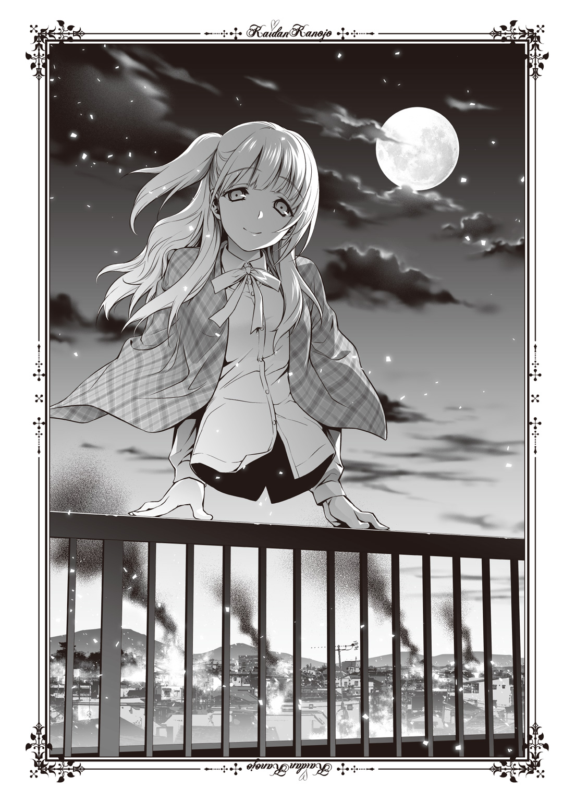
「......小笛、先輩」
斉藤くんが私を見ている。その目は、おぞましいものへの恐怖で塗りつぶされているように思われた。でもじきに、そんな悲しい視線はなくなる。そのはずだ。
ちら、と転がっている糸遣いの霊能力者をうかがう。あの力は脅威だが、しかしもうほとんど打ち止めらしい。糸を張るような小細工すらできないだろう。仲間のてけてけが取り囲んでいるため、反撃する力もないようだ。表情が、沈みきっていた。
「斉藤くん、私ね、見ての通りてけてけなの。でも安心して。怖いものじゃないわ」
「......足、あれ、どうしたんですか」
一瞬、斉藤くんが何を言っているのかはわからなかった。でもすぐ気づく。彼を騙すため、彼の周囲の霊能力者を騙すための小細工のことだと。
けれど怯え、惑える斉藤くんの瞳は答えにたどり着いた。
「長谷部さんの足だったんですね」
「その通り」
スラックスを血みどろに染めた斉藤くんを保健室に呼びこんだときに、私の体は一見、普通の人間らしかっただろう。けれどそれは、違うのだ。
図書室そばの階段で泣きぼくろのある仲間が叩き切った、長谷部流水とかいう娘の死体を利用したのだ。下半身だけ先回りして運んできてもらい、私はその上に乗っただけのことだ。当然、普通はすぐバレる。でも錯乱状態の斉藤くんを一瞬騙すだけの細工なのだから、その程度でかまわなかったのだ。
私が人間だったら――人間として死んだら、斉藤くんは悲しんでくれるのかな。
てけてけとして――化け物として行動を起こす前に、私はどうしてもそれが知りたかった。ちょうど切ったばかりの下半身を借りて、私は斉藤くんの前で死んだ。彼の気が引きたくて。
気絶するほど驚かせてしまったみたいだけれども、それだけ心動かしてくれたことは嬉しかった。斉藤くんの中に、死人という強い形で残れたことが誇らしくさえあった。
そしていま、私は斉藤くんの前に甦ってみせた。
こんなことをしてあげられたのはきっと、私だけだろう。そう思うだけで、胸がいっぱいになるほど優越感を覚える。
斉藤くんの瞳は、はるか下方の校庭を気にしているようだった。さっき黒川夢乃が落下した地点を、ちらちらと見る。
「気になるのかしら？ 地面のほうが」
斉藤くんは 少しだけ強張った顔つきで、ええ、とうなずいた。黒川夢乃の劣勢など、もはや言うに及ぶまい。確かに昼間、屋上より跳んでくるという猫のごとき離れ業をやってのけてはみたけれど、あれは多分、かなり体勢を整えたうえでの技だ。あんないきなり叩き落とされては、無傷というわけにはいくまい。
まして、下には仲間たちもいる。これまでの戦いっぷりを見ていればわかる。陰から観察していたが、どうやら黒川の弱点は斉藤くんらしい。最悪器官の特性を考え、一つの可能性に行き当たっていた。
黒川夢乃は多分、怪異だ。何故あんなに人間扱いされているのかは知らないが、斉藤くんから離れられないのだろう。少なくとも私の仲間たちと戦うには、斉藤くんのそばにいなくてはならない事情があるに違いない。
私もちら、と眺めてみる。
黒川夢乃は、いるにはいたが――昔の私と同じ様となり存在を徐々に薄くしていた。てけてけ相手にもがきながら徐々に人間から離れ、怪異に近づいている。あれではその辺の霊能力者でも、彼女が見える者と見えない者とが半々くらいか。
怪異と戦うことで、怪異に近づき、やがて消えゆく存在。怪異の側から現状を見れば一目瞭然だ。あれは、そうやって私たちと戦っているのか。
じきに世界の誰にも見えなくなるだろう。もしかしたら消えるかもしれない。そのほうが都合もいい。斉藤くんは最悪器官ではあっても霊能力者ではないから、もう黒川が見えていないのだろうが。
ぼんやりと奴がいる辺りを――黒川夢乃本人ではなく、その辺を眺めている。
「あそこに......誰か、いる気がして」
斉藤くんの声は、嗄れていた。しかし言葉の中身が私は気になる。
誰か。何故つい一分前まで叫んでいた名前を忘れているのか。もしかして――と考えが至った。
最悪器官がいつまでも怪談や怪異のことを覚えていては、怪異がいつまで経っても消えない。同胞たちがかき消えたいま、それでは理屈が通らない。
もしかして、最悪器官は忘れるのか。怪異が消えたとき、その怪異にまつわるすべてを。
「黒川......夢乃、ですね」
か細い声が聞こえる。屋上に倒れ伏している糸遣いの女が、絶え絶えにつぶやいたのだ。四体の仲間たちが、それを取り囲んで黙らせた。
ああ、と斉藤くんが得心したような声をあげる。何で忘れていたんだろうかと、自分でも不思議そうに思うような言い方だった。
「ねえ斉藤くん」
一刻も早く、私は計画を遂行しなくてはならないと思い、柵の上を一歩近づく。斉藤くんがこれまで私にしたことのないような動きを見せた。簡潔に言えば、引いたのだ。
気味の悪いものを見る目だった。少し悲しい。でも、多分見慣れていないだけだと私は無理やり自分を奮い立たせた。
「あのね、私斉藤くんにお願いがあるの」
「......何、ですか？」
「私たちね、人間でいたいの。人間と同じように生きていたいの」
斉藤くんが沈黙した。口こそ開けていないが、啞然という形に近いだろう。
「私たちと人間の差って、そんなに大きいものじゃないと思うの。そりゃ、確かにぱっと見は怖いかもしれない。下半身がないんだもの。内臓、はみ出させているんだもの。背骨もちょっと見えているし、体のつくりが違うのはわかる。でもね、それだけじゃない？ 慣れてくればきっと、たいして変わらなくなるの」
ねえ、想像してみて。一歩、近づく。斉藤くんも今度は引かなかった。
「私たちも一緒に授業を受けて、給食の時間には一緒に席を並べるの。手で動くからいつもおしぼりで手を拭いて、除菌しないといけないかもしれないけれど、でもそんなのは小さなことよ。一緒に帰って、途中でアイスクリームの買い食いをして、先生に怒られそうになったら逃げて、図書室にも寄って、本屋でファッション雑誌を買ったら公園で眺めるの。友達だけじゃない。恋もするわ。私たちは女ばっかりだけど、きっと誰々が彼氏をつくったなんて話になれば盛り上がるわ。一緒に手を繫いでカラオケに行くの。あんまり歌は知らないけれど、きっと覚える。デートもする。あんまり派手じゃないほうがいいかも。でも、派手なほうが好きな子もいるだろうからまちまちかも」
もう一歩、左手を這わせる。
「ねえ。変じゃないよ、別に。足がないだけ。そんなの全然、おかしくない。ちょっと違うだけ。でもみんな、ちょっとずつ違うんだからやっぱり、小さなこと。私はね、斉藤くん。人間になりたいの。人間で、いたいの」
斉藤くんが再び、はるか下の地面を見る。まだ仲間たちがそこにいるはずだ。黒川夢乃はもう、死んだか。生きていたとして、まともな人間ではもうあるまい。私たちの仲間、いや、私たち以下の存在だ。斉藤くんら人間からはほど遠い。
ねえ、と斉藤くんに告げる。
「私とあんなに、楽しくお喋りしてくれたじゃない。あれ、偽りじゃなかったでしょ？ 本心から仲良くしてくれたでしょう？ だったら、ね？ お願い」
最悪器官である斉藤くんにしか、できないことだ。
「私たちと一緒にいて。私たちのために、その力を使って。私はそれが、嬉しいの」
「......力、ってのは、最悪器官のことですか？」
他に力と聞いて思い及ぶところがなかったのだろう。私は、ええ、とうなずいた。
「あなたの力があれば、あなたがこちらの陣営についてくれれば、私たちは人間でいられる。ね？ 斉藤くん。ほら、自衛隊みたいなものよ」
私たちは戦争を好まない。でも、自衛の剣を持たなくては滅ぼされるかもしれない。
「あなたは私たちの、平和の礎になるの」
「へい、わ......」
のったりとした口調だった。斉藤くんはうつむきながら、ゆっくりと言った。
「......小笛先輩。さっきから、あの辺が気になってしょうがないんです」
聞いていないのか、私の話を。ふう、とため息がこぼれる。斉藤くんが指さしているのは案の定、黒川夢乃が消えたところだ。次こそ何も言うまいなと、糸遣いをにらみつける。本当は口を封じてやりたいが、斉藤くんを悪いほうへ刺激したくないのと、例の『殲』への伝令役として殺さず残しているのだった。作戦が終わる頃には、連中に最悪器官がこちらの手に渡っていることを伝える必要があるからだ。それゆえ私は指示を出さず、あの娘の腰はまだくっついたままだ。衰弱しているのは確かなようだが。
斉藤くんは多分、この場でもっとも弱い。もっとうろたえ、緊張し、すくむべきなのに、ただひたすら、地面に落ちた幼馴染のことを気にかけている。
もう記憶が薄くなっているだろうに。数分前に聞いた名前さえ、忘れているくせに。
「彼女のこと、大嫌いだったんじゃないの？」
彼女？ と斉藤くんが首をひねる。そういえば黒川夢乃とは恋人ではないのか。そういう言葉でからかったことはあるけれども。
「斉藤くん、ずっと言っていたじゃない。あいつは嫉妬深いし、暴力的だし、いつまでも追いかけてきてうざったいし、べたべたからみつくし、そのくせじっとしていないし、黙らないし、何かと下品だし、怪力だし、趣味悪いし、人の言うこと聞かないし、反対に言うこと聞かないと怒るし、あんな奴どっか行っちまえばいいのにって、いつも言っていたじゃない。私に、愚痴をこぼしていたじゃない」
そう、いつも、言葉はなじっていた。
顔は、笑っていたけれど。
「......誰の、ことを？」
「忘れたならいいわ。もう、いいの。だから斉藤くん。ねえ、お願い」
最後は二歩近づいて、斉藤くんの右手をつかんだ。白い包帯は汚れている。人の体を切るためではなく、ほら、こんなふうに触れられるって、自慢したいくらい誇らしい。
願うために触れた斉藤くんの手は、包帯越しでも温かかった。
「私と一緒に来て。私の味方になって。私、何でもするから」
わざと計算している。私は自分が一番可愛く見える角度に首をねじって、同情を引くような寂しい微笑みをつくった。そうまでして、私は欲しかった。
最悪器官が。斉藤くんが。
「......小笛、先輩。俺は、誰を忘れているんですか？」
――ああ、もう、本当に......腹が立つ！
不意に、胸の内に炎が宿る。点火したそれは一瞬で燃え上がった。よくわかっている。この感情は、これまでたくさん味わってきた。けれど、ここに来てなお、選択肢を狭めてやってそれでも斉藤くんがこちらを見ないから、いままで感じた以上に強く激しく燃える。
嫉妬の炎が、うらやみの熱が、爆ぜる。
「どうして私を見てくれないの！ ねえ、斉藤くん！」
握力が調整できない。槍牙くんの包帯に少し、赤いものがにじむ。切ってしまったのかもしれない。でも私は吐き出しきらなくては、この手を抑えられそうになかった。
「黒川夢乃のことあんなに嫌がっていたじゃない！」
わかっている。愚痴だけ言って、嫌いと言って、本当はそうでもないことを。
「いつも彼女から逃げてきたじゃない！ 私のところへ逃げてきたじゃない！ 黒川夢乃よりも、私のことが好きだからじゃないの！」
悔しかった。斉藤くんが黒川夢乃のことを、嬉しそうに悪口で表わすのが。
「あんな女どうだっていいじゃない！ 死んだわよ！ 黒川夢乃は死んだの！ だから斉藤くんお願い！ 私の言うことを聞いて！ 私の味方になって！ それしかないの！」
本当に黒川夢乃は死んだ？ わからない。まだ下でしぶとく生にしがみついているかもしれない。それでもどうせ、半死半生だ。
そうであってほしい。死んでいてくれ。
斉藤くんは、私たちのものだ。私のものだ。私にあんなに懐いてくれたのだから。
手に入れたくて、八年間も待ったのだから。この一か月、がっつくことなく耐えたのだから。私が、欲しいのだ。花いちもんめを思い出す。
私が勝ったのに、どうしてまだ私の隣に来てくれないの！
「黒川、夢乃」
「もうその名前を呼ばないで！ 私のことだけ見て！ お願いだから！」
包帯がゆるむ。ずり落ち、私の手が斉藤くんの手から離れる。
いや――違う。そうじゃない。
斉藤くんの手が、私から離れていくのだ。
「そうだ、黒川だ。黒川夢乃だ」
ぶつぶつとつぶやく斉藤くんは、もうその名を放したくないというようだった。屋上のへりでふらふらとおぼつかない足どりで、下がる。その目に光が宿る。
「黒川夢乃。呪われた、怪異」
怪異。やはり怪異だったのか――と、そこでようやく、私は。
愚を犯したと気がついた。
怪談とは、怪異を語ったもの。私はいま、嫉妬に任せて何を口走った？ 黒川夢乃のことを、語ってしまったのではないか？
怪談を、最悪器官に吠えたのか。
そして下界から、血を吐くような叫びがとどろいた。
「槍牙くん！」
――まだ死んでいなかった！ しぶとい！ 本当に怒りでねじ切れそうなほど、ゴキブリみたいに死なない！ あの女が！
斉藤くんが首を下に向けた。もうその身はひるがえされている。
私から遠ざかろうと、背を向けている。
「私はここよ！ 槍牙くん！」
「黒川ぁ！」
柵を軽々と乗り越えた姿に、迷いがないのは見てわかる。そんな馬鹿な、と思う。知っている。ずっと陰ながら見ていたからわかる。二階くらいなら斉藤くんは飛び降りることを。でも、高さは倍以上あるのだ。
黒川夢乃みたいな、冗談じみた身体能力まではないはずの斉藤くんが、どうして。
そんなに、確信したように、てけてけだらけのただ中へ自ら飛びこんでいけるのだ。
そんなに――黒川夢乃がいいのか！ そんなに私は、ダメなのか！
足が、ないというだけで！
「小笛先輩」
ぞっとするほど低い声。斉藤くんの声は案外、低くて響く。私はそれも、好きだった。
そうだ。好きだったんだ。最悪器官であることを利用したし、手に入れるために色々と酷いことをしたものだけれど、それでも私だって、女の子だ。人間になりたいだけの、化け物であるというだけの、女の子なのだ。
恋したって、いいじゃないか。私は斉藤くんの彼女に、なりたかった。
「俺は小笛先輩のこと、嫌いじゃありませんでしたよ。姉でもできたみたいに嬉しくて、いつも甘えてしまうくらい、好きでした」
好き「でした」。柵から手を放して宙に舞い、重力に引き寄せられる寸前の言葉は優しくて、残酷だ。
「でもね、長谷部さんを殺したあなたは、好きになれない。そして」
斉藤くんの体が風を受けてはためく、もう、届かない。ずっと下に、あの、私たちなんかよりずっと化け物みたいな装飾華美の女の許へ、行ってしまう。
斉藤くんが、私を見た。いつもの、愚痴を言うときの穏やかな目だった。
「俺は、先輩より黒川のほうが好きみたいです」
八年間、願い続けた。求めて、準備をして、あんなに仲間に申し訳のない真似をして。人間のふりして死んでみせて。
花いちもんめのように、奪われ続けた最後に、勝ったのに。
斉藤くんの姿が沈んで消える。私から、遠ざかる。
負けぇて悔しい花いちもんめ
歌う気分にはなれなかった。代わりに私の喉は、月に向かって吠える。
泣きながら、世界がひびわれて壊れてしまえと願うほどに。
夜が、静かに叫びを、飲みこんだ。
落ちるとき、頭に浮かんだ光景は泣き虫の黒川夢乃の姿だった。
いまも俺より背が高いあいつは、当時もっと俺より背が高くて、でもいつも泣いていた。幽霊がいるの、と指差す方角には何もいない。どんな幽霊か尋ねても、それは俺に言っちゃダメなのだとかわけのわからないことを言って、ただ泣いていた。
泣き止ませるには、抱っこしてやるのが一番だった。頭を抱くと、桃の匂いがした。結構、それが好きだった。ぽんぽんと頭をなでてやると、胸の中でしゃくりが落ち着いていく。そんなとこに誰もいないよ、と言ってやった。まるで自分が世界一正しいような言い方で、おそらく、本当にそう思いながら。
いまはもう、できない。
他人と自分の境目がくっきりしているから。
俺が数式を理解できなくても他の奴はちゃんとわかるし、俺が逆上がりできるからってクラスの全員ができるわけじゃない。そんな知恵をつけたから、多分、もう黒川の代わりに怪異は倒せまい。
最悪器官は世界の基準。それだけで怪異など祓えたのに。
でも、いまは違う。脳裏に走馬灯が駆け巡る。黒川は泣かなくなった。派手な服を着るようになった。べたべたしてくるようになった。灯さんから戦いの訓練を受けるようになった。迷惑な振る舞いを平気でするようになった。
俺のことを、「好きだ」と言うようになった。
でもな、黒川。
絶対、俺のほうが先に、お前のことが好きだった。
「黒川！ 跳べぇ！」
さっきよりぼろぼろの服で、露出する肌の量も増えている。血の量だって怪我の数だって、尋常じゃない。髪もいささか、短くなったか。あんなに綺麗な髪なのに。
よくも、やってくれたな。怪異ども。
黒川はすぐそばにいたてけてけを踏み台にするようにして、俺へ向かって跳ぶ。万全なら倍は跳ぶだろうが、いまは無理だろう。尾を引いて、散った血液がきらきら光っていた。
白い顔が赤黒く染まり、美しい顔立ちがすっかり隠れている。それでも残忍そうに笑う口から、白い歯が輝いている。まだ、笑っていやがる。こんな惨状のただ中で。
骨のむき出しになった日傘を右手に、空っぽの左手を俺に向けて。
「槍牙くん！」
心底嬉しそうに、呼ぶ。その手をつかみ、俺は引っ張られる。黒川に巻きこまれるように回り、すっぽりと抵抗なくその胸の中へと入った。首元に黒川の息が当たり、後ろから羽交い絞めに抱かれる形となる。鉄錆の生臭い匂いの中に、甘い桃の香りをとらえた。
ただいま。胸の内だけで告げると、黒川が俺の足を抱える。日傘の骨が当たって痛いが、そんな文句をいまは言うまい。
着地したらしい衝撃。数秒ぶりに感じた重力の安定を覚え、腹から声を出す。
「行くぞ黒川！ 俺が最初に読んだてけてけがいるのは――てっぺんだ！」
「ええ、じゃあまずは――ここにいる雑魚どもからぶちのめすわよ！」
黒川がくるりと回る。それだけで周囲の黒々とした海が割れた。密集していたてけてけが吹き飛ばされたのだ。俺は開けた地面に降り立つ。
黒い波だった。上から見ても海を思わせたてけてけの群れは、もう、人間がどうにかできる状態ではない。
それでも俺はもう腹をくくっていて、だから平気だった。このくらい、怖気もない。
「斉藤槍牙！ 黒川夢乃！」
頭上から声がした。嗄れるような細い声だ。野波さんの声だとわかった。俺は黒川の肩に置いた手を外すことなく、上を見る。
野波さんが屋上から飛び降りるところだった。どうやってあのてけてけの包囲網をくぐり抜けたのか、と思ったがそういえばあと一回分くらいは力を残していたのだったか。あくまで自己申告だが。
野波さんがスカートであるのにもかかわらず、はるか上から飛ぶ。両手を上に挙げるような、変な姿勢だ。スカートがめくれて白い下着がもろに出るが、無表情は変わらない。
野波さんと一緒に何かが落ちてくる。あ、と気づいて手を伸ばした。
野波さんはブレーキをかけたエレベーターみたいに落下速度をゆるめ、もう一つ落ちてきたそれ――ホウキの柄は俺の真上に飛来した。俺はキャッチボールでもするように柄を受け取ると、そのまま黒川と背中合わせをするようにして柄を構える。
するすると野波さんが着地した。あの両手はどうやら糸を遣って高所から飛び降りても大丈夫なように、調整していたらしい。
「体力、もう少なかったんですね。だから、まだあいつは生きているんですね」
殺しきれなかったんですね、と野波さんが言って、俺と黒川のそばに来た。
「何かしら。言っておくけれど槍牙くんを殺そうとした奴なんて私はかばわないし、守らないわよ？ 第一、いまから私たちは守るためじゃなくて、攻めるために向かうのよ」
「大丈夫ですね。私の糸、まだ一本だけ残っていますね。あいつに、くくりつけましたね」
野波さんが、くるりと体を回転させながら右腕を引き下ろした。連動し、屋上からうめくような叫び声が聞こえてきた。
小笛先輩の声で、悔しそうに。
「......こ、の......っ！ 黒川夢乃ぉ！ 糸遣いぃ！」
小笛先輩が――てけてけの指揮官が、引っ張られる。奈落の底へと引きずりこまれるように落ちる影が、両腕を広げて頭上に浮かぶ。
糸をからめ、野波さんが校庭に引きずり落としたのだとわかった。
「やかましいわね。でも、よくとらえたわ平賀小百合。ええ、本当に」
ぼろぼろの傘を野球のバットのように構える黒川。悪逆なる笑みは、空中を滑り落ちてくる小笛先輩を狙う。
しかし、空いた胴はあまりに無防備だった。
「キシュアアアアアッ！」
「なっ！」
てけてけが数体、黒川の細い腹を狙って飛び交う。俺も戻ってきたばかりの得物を振り回すが、当然のようにそれでは足りない。やむなく黒川が、好機とばかりに構えていた日傘を蛇のようにうごめかせ、取り囲んできたてけてけを討つ。
「邪魔ぁ！」と苛立ちを隠さず叫び、気合いの入った攻撃にてけてけたちが跳ね返る。俺のいるほうから寄ってきた奴も華麗な身のこなしで吹き飛ばしつつ、黒川は俺に言った。
「槍牙くん、お願い。私のこと、抱きしめて」
ああ、とか、うん、とか言いながら俺は従う。後ろから胴へ腕を巻きつける。黒川の髪が、俺の腕や首へ巻きついてからまった。しがみつく粘着質は、黒川の真骨頂だ。
怪我している部分に刺激を与えないよう、それでも強く、抱いた。
「ねえ槍牙くん。私の抱き心地、どう？」
「......ノーコメント」
はっきり言えば、すごく心地いい。黒川に抱きつかれたときも、膝の上に乗られていたときも感じられなかった感覚が――安心感が、確かにある。
腕に戻ってきた温かさとやわらかさは、うっとりと甘かった。
「最近、お尻のあたりの肉づきがいやらしくなったから、槍牙くんの足のつけ根くらいにいい感触がするんじゃないかと思えて」
「黒川お前黙っていろ」
繰り返し何度も言い続けた言葉は、妙に口触りがいい。嬉しくなり、肩口に鼻先を押しつけた。心も体もほぐれるほど優しくほっとして、一生このままでいたくなる。
ただし、こんな異形に取り囲まれた状況じゃあ眠れない。
「さあ、終わらせようか。黒川」
「ええ、そうね。槍牙くん。ちょうどあいつも、地べたに落ちたし」
もうとっくに小笛先輩は数メートル先の地面に立ち、俺と黒川を焼き殺しそうな視線でにらんでいた。あんな小笛先輩は見たことがない。右側だけ髪を結っていなければ、彼女が小笛先輩だとは気づけなかったかもしれないほどだ。
小笛先輩――俺が最初に読んだてけてけは、闇の底から低く声をうならせる。
「......斉藤くん。私が悪かったわ。確かにあの眼鏡をかけた女――長谷部とかいう女を殺したのは悪かった。でも、いきなり斉藤くんが、こんな姿の私を見たら驚くと思ったのよ。それで、怖がって、嫌いになられるのが嫌だったから......」
「ふざけないでください、小笛先輩」
思ったより、大きい声が出た。小笛先輩が口をつぐむ。
「俺は足があるかないかなんて、どうでもいいんです。この八年間のように、たいした騒ぎも起こさずひっそりと暮らしていてくれたなら、それで良かったんです。確かに突然出会ったら驚くかもしれない。それが先輩は嫌なのかもしれない。でもね、本当に心の底から言いますよ。上半身だけの存在であることなんて、先輩の優しい笑顔に比べたらなんてことない話なんです」
そんなことで嫌いにならないし、否定もしないし、拒絶もしない。でも。
「長谷部さんを殺したことが、他にも多くの犠牲者を出したことが、俺があなたを断罪する理由です」
俺は本当に、小笛先輩と一生友達なり何なり、関係性を持っていきたかった。だから余計に、悔しくてつらい。
「ねえ、斉藤くん」
「......何ですか？」
「私が保健室で死んだふりをしたとき、悲しかった？」
何故そんなことを聞くのかわからなかった。でも、答えは簡単なものだったから、応じる。
「悲しかったですよ。いまも」
「......そっか」
えへへ、と小笛先輩が笑う。
「なら、良かった。斉藤くんに出会えて、嬉しかった」
その笑顔さえ、胸がしめつけられ、切ない。
だから、もう終わりにしよう。
「――やれ、黒川。撲滅しろ」
最後に見た小笛先輩の顔は、笑っていた。
静かに目を閉じて、涙をこぼしながら。
「さようなら、斉藤くん」
「ええ。さようなら。小笛先輩。先輩と喋るの、楽しかったです。本当に」
好きでしたよ。言葉をつむぐ前に黒川の大上段に構えた日傘が振り下ろされ、最初からそこには誰もいなかったように。
「 」はいなくなった。
俺にはもうその名前が、思い出せない。
「あーあ、つまんねー」
大徳寺刃心はぴったり定刻、午前五時に来た。俺と黒川、そして野波さんは最後の決戦を果たした校舎裏で、壁に背を寄りかからせていた。野波さんはすーすー寝息を立てていたし、黒川はさっきまで俺にべったり抱きつきながら、うわ言のように「槍牙くんねえ家に帰ったらベッドに入ってとんでもなくいちゃいちゃしましょうラブラブしましょうとんでもなく淫らで恋人同士の中でもかなり深い人たちしかやらないようなことをしましょう大丈夫平気子供が生まれたら二人で育てていきましょう男の子と女の子どっちがいいかしら女の子だったら槍牙くんに惚れてむかつくから男の子かしらねでもやっぱり女の子のほうが可愛らしい気もするわね小さい頃の槍牙くんに似ていたら男の子でもいいけれど」とかうだうだうだうだほざいていたが、いまは眠ってしまっている。俺の鎖骨を枕に、結構可愛らしい寝顔をさらしている。
ついでに涎を垂らしているのはどうにかなるまいか、と思ったが言わないし起こさない。間違いなく、いま一番疲れているのは黒川なのだから。
大徳寺さんは弟子であるという野波さんの寝顔を見て、ちょっとだけほほをゆるめてから唯一起きている俺に向かって言った。
「倒したのか？」
何を、とは聞かない。というか、聞かれても困る。
俺は野波さんや黒川と何かを成し遂げた。多分、何かを打ち倒した。そんな気がする。でももっとも重要な、戦っていた敵が何者なのかをどうしても思い出せないのだ。
忘れ物があるのに、それが何なのか思い出せない。非常にもどかしい。昔好きだった歌の歌詞がどうしても思い出せないように、胸の内で嫌なくすぶり方をしている。
まあ、いっか。そう流してしまえば済むくらいの軽いものだったけれど。
大徳寺さんがため息まじりに、俺に言う。
「最悪器官、また殺し損ねた」
「最悪器官のことは覚えていますよ。黒川が怪異であることも。『殲』のことも」
「もう忘れるなよ。ったく、そもそもお前がちゃんと忘れたものを忘れて、忘れていないものを覚えてさえいれば問題なかったんだ」
「何のことですか？」
「八年前、あたしらが殲滅した怪異にまつわる怪談は忘れている。そりゃ当然だ。じゃあ、あたしらが殲滅し損ねた怪異にまつわる怪談は？ 覚えていろよ。あたしぁ、あんな残り方している勢力があるなんて知らなかったぞ」
「俺が覚えていたら怪異がずっと、人間に近い状態で存在し続けちゃうじゃないですか」
「存在し続けていただろうがよ」
存在し続けていたらしい。もう覚えていない話だけれど。もしかしたら知ることもなかった話かもしれないけれど。
大徳寺さんは、まあいいや、と腰に手を当てて気だるそうに体を伸ばし、野波さんの襟元を錫杖の先に引っかけ、持ち上げた。クレーンゲームのぬいぐるみみたいに吊り上げられた野波さんだが、いまなお「すー、すー」と静かな寝息を立てている。
よほど疲れたに違いない。確か、糸を遣って除霊をするのだったか。
「小百合がお前を殺さなかったから、今回は見逃してやるよ」
「......っていうか、賭けと無関係に野波さん、俺のこと殺そうとしませんでしたか？」
前後の記憶は薄くとも、糸で吊られた覚えはちゃんとある。
「ああ。別に野波はお前とルールを定めて賭け事なんてしてねえもん。いいじゃねえか、どうせ連中、目的はお前さんだったんだから。助けてくれただろ？ 怪異が」
「さあ。よく覚えていないんですが、そうなんですか？」
「......もういいわ。今回はな。でも、次同じことやったらぶち殺す」
「黒川が多分、阻みますよ」
ちら、と大徳寺さんが振り返った。確かにうちの眠り姫は、いまとんでもなく無防備だ。けれど、確かに脅威だろう。
それだけじゃない。さっき黒川のケータイに灯さんから連絡があり、『殲』の意向は決定された。「最悪器官こと斉藤槍牙の監禁は免除。処分なしとする」という結果が出された以上、大徳寺さんも無茶はするまい。
今後何が起きても、黒川夢乃が俺を守るだろう。自惚れじゃない。黒川自身が、俺を必要としている。
「言っておくけどな、斉藤槍牙。あたしのはただの逆恨み、惰性の復讐心だ。けれど、忘れちゃいけない。自分の可愛い一人娘が呪いを受ける羽目になり、一番恨んでいるのは灯の旦那だ。それに、八年前に一番弟子を筆頭に百人以上の弟子を殺されて、復讐心が一番強くなくちゃいけないのが壱元だ。網浜の婆も、お前のことを殺して余りある因縁がある」
「......そうですか」
だから、最悪器官。そう名づけたのは『殲』だ。
でも、それがどうした。
「俺には黒川がいます。それだけで、いいです」
罪人だろうが恨まれていようが、俺は最悪器官――黒川の助けになる者だ。黒川が必要としてくれている。黒川がこうして甘えて、そばにいてくれている。黒川なら、甘えさせてくれる。
他の誰が俺を引き取ってくれると言っても、応じてなびくことなどないだろう。
「俺は、黒川が好きですから」
「......気持ち悪いよ、お前ら」
吐き捨てて、大徳寺さんが立ち去る。運ばれる野波さんが、ぱちっ、と目を覚ました。ゆらゆらと揺れているその状況に特に何も感じることはないのか、そのまま俺に小さく手を振った。
打ち解けた、というにはいかないところもあると思う。だが、今日くらいはそういう吞気なあいさつをしてもいいと思ったのだろう。俺も手を振って返した。
怪我の具合は一応、灯さんに伝えてある。じき迎えにも来てくれるだろう。灯さんの持ち場は多分、結構遠いのだろうと思った。夢さんはわからない。あの人は「ごめぇん、寝てたぁ」とか言いそうなので、基本的に当てにはしていない。
ここぞというときはファインプレーを見せる人なんだけどな。
「槍牙くん」
胸元でもぞもぞと声がして、鎖骨にかかっていた重圧が消える。黒川がうっとりとした寝起きの目を、俺の鼻先に持ち上げた。あまり見ない表情だ。たとえ小学生以下のとき、俺が神社で連泊することがあろうとも、黒川が俺より早く寝たことも遅く起きたこともない。ある意味、確かに大和撫子としては最高級かもしれない。
......あれ？ 亭主関白だったっけ？ どっちだ？
「ごめんなさい。寝ていたわ」
「いいよ。迎えが来るまで寝ていろよ」
ぽすっ、と再び俺の首元に頭を沈める黒川。けれど、眠りに落ちることなく語る。
「あのね、槍牙くん。私ね、本当に不安だったの」
「......何が？」
問いかけたけれど、正直俺が覚えていることなどわずかなのだから、はっきりとした会話の応酬になるかはわからない。それでも、俺は黒川の背中をなでながら聞く。動物じみた幼馴染は、黄色い太陽が昇るゆっくりとした朝日の中でむずがった。
「きっと槍牙くんがもう覚えていないだろう怪異はね、槍牙くんのことを、好きだったんだと思うの。私にはわかるわ。女の子だもの」
「......そりゃ、いつものお前の勘違いだよ」
クラスメイトの女子がこっちを見ているだけで「色目を使った」だの「誘惑していた」だのとほざく黒川では、どうも信用が薄い。黒川はそれでも、首を横に振った。
「最悪器官はただでさえ、怪異には情を持たれやすいの。だってそうでしょ？ あなた一人がいれば、怪異はそれだけで世界を超越し、侵略できる。人類の敵であっても、怪異にとっては神様よ。好印象を持たれるのなんて、普通のこと。だからそこから、特別な感情が差し挟まれる」
黒川、と俺は声をかける。それはお前も同じじゃないか、と言いかけ、飲みこんだ。
ぎり、と俺の肩にかかっていた黒川の手が、強く握られる。
「私だけ。私だけは怪異になる前から、槍牙くんのことが好きだった。槍牙くんが私を助けてくれるから、好きだった。だって、わけわからないじゃない、他のみんなには見えていないのに、見えてもいないものを怖がって泣くんだもの。みんな、私のことを気持ちの悪い女の子だって、噓つきだって非難した」
そうだった。黒川がどうして俺とばかり遊んでいたのか。親同士が仲良しだから、なんて以上の理由が確かにあった。
黒川は――いまもそうだけど――あのころ、誰も友達がいなかったんだ。俺以外の連中はみんな、黒川のことを煙たがっていた。何度も「槍牙もあんなのと遊ばないで、こっち来いよ」と誘われていたと思う。でも俺は、黒川のそばを離れなかった。親に言われたわけでもなく、自分で選んだ。
黒川が、再び首を持ち上げる。すがるような甘い目が、とろけていた。
「どうせさっき私が撲滅した女も、槍牙くんが好きだったに違いないわ。槍牙くんは忘れたかもしれないけれど、多分誘惑もされたと思うの。実際、槍牙くんは怪異にとって殺すよりもっと価値のある使い方ができるんだもの。欲しがられなかった？」
「さあ。覚えていない」
何かあったような、胸のざわめきはあるんだけれど。そもそもさっき滅ぼした怪異が女だったのだと、いまの黒川の言葉で知ったくらいの気持ちだ。
「もし槍牙くんが私じゃなくて、どこの馬の骨ともわからない怪異に引き寄せられたらどうしようかと思っていた。怖かった。槍牙くんを、失うことが」
「......そう」
覚えていないので実感はないが、そういうこともあったのかもしれない。なかったとは思うけれど。言っていて切ないが多分俺はモテないぞ。
黒川以外にあんまり好意的な感情をぶつけられたこと、ないし。ないはずだし。
覚えていないだけで、あるのかもしれないけれど。
「でもさあ、黒川。大丈夫だよ」
背中をなでる手を、黒川のわきの下に入れて持ち上げる。巨大な猫はされるがままに、俺にほほを寄せた。小ぶりな、形もよくてわりに福耳である黒川へと語る。
「俺は、黒川を忘れないし、離れない。誰に何を望まれても、黒川を選ぶ」
ぴくんっ、とその耳が小さく動いた。顔を押しつけるようにし、言いきった。
「お前はここにいる。だから、いなくならないよ」
うん、と小さく言って黒川はもう一度、黙った。どこか近くで車が通り過ぎず、止まる音が聞こえた。灯さんだろう。車は持っていなかったはずだから『殲』の誰かの持ち物か、タクシーか。まあいい。ここに来るまで、このままでいいや。
俺は怪我していないし（右手のやつは血も止まっているし、無視）、黒川だって疲れている以上に怪我の度合いが酷いわけでもないらしい。出血が多くても、傷のふさがりが異常にいいのは俺が一番わかっていることだ。よくあれだけの目に遭いながら、骨も折れなかったよな、と思う。
まぶたが下りてくる。太陽の光が閉ざされ、俺はただ、桃の香りを覚えるだけとなる。
静かな朝だった。体中に黒川の重みと体温を感じて、迎えが来るのを待つ。
何だかとっても幸せな眠りだった。
今回のてけてけ事件の顚末について。
私と槍牙くんがてけてけを数多撲滅し、「友原小笛」と名乗っていたてけてけの親玉を私が打ち倒した後、『殲』が戦っていたてけてけたちは消えた。ニュースやネットに流れた動画に関しては、どこかの大学生がイタズラで作ったものとして扱われ、目撃証言のほとんどは野良犬を見間違えた、人形を使ったトリックだったなど説明がなされたようだ。
勿論、そんなことはないのだけれど――『殲』が世間的な混乱を招かぬようにと事実を隠し、捏造した。上半身だけの女たちが人を襲っていたなどと語られるよりは、まだそのほうがいいだろう。政府やマスコミなども、それを許容した。
『殲』にはそれくらいの権力がある。元より巫女の類が国を治めていたように、現在も霊能力者の存在は秘されたままこの国を統治するのに一役買っている。
もっと身近なことを言うと、単に灯がいまの政治家連中に取り憑いたとされる悪霊を滅してやったり、怨霊を倒してやったりしたことがあるだけだ。政界は何かと死霊の出てくることが多いそうだ――世間一般には、眉唾ものとして扱われるだろうが。
とにかく、騒ぎは抑えつけられたようだ。
それでも私たちの生活すべてが元通りになったわけではない。命を落とした人たちは戻らない。
私と槍牙くんはそろって長谷部流水のお葬式にも参加したし、そのときに泣いてしまった槍牙くんに私はハンカチを渡してあげたりした。槍牙くんがどうしてもと頼みこむので喪服も着た。みんな制服だったけれど。
制服、買っていないのよね。ダサいから。喪服なら和装洋装、どちらもある。
ともあれ、てけてけはこの世界から撲滅された。私と槍牙くんで世界を救ったのだ。誰も英雄として崇めてはくれないけれど、私の中では槍牙くんは間違いなく勇者だった。ちなみに私の配役はお姫様だ。
大団円のメルヘン気分は四月いっぱい続き、そして、私たちはゴールデンウィークを迎えた。
「......黒川、どけ」
「いいわよ。何センチ？」
「二千キロくらいどいちまえ！」
事件のときの槍牙くんはどこへやら。休みだからとだらだらお昼まで寝ていた槍牙くんの布団に忍びこみ抱きついていると、槍牙くんが寝起きの嗄れた喉で叫ぶのだった。酷いわ。日本から二千キロ程度じゃ、地球一周できないからこの場所へ戻れない。
非常に眠そうで、窓から差しこんでくる陽の光を邪魔っけに扱うその顔に口づけようと顔を寄せると腕で阻まれた。何を照れているのかしら。ここは槍牙くんの部屋で、私以外には誰もいない。現に鍵もかかっているから、間違ってお義父様やお義母様や槍牙くんの妹の美盾ちゃんが入ってくることもないのに。
槍牙くんってば、何を間違えたのか私が入ってくる用に鍵を開けておくのを忘れていたのだけれど。まあいいわ。槍牙くんの部屋ならピッキングで入れるから。
槍牙くんが起きられるように体を滑らせ、私は槍牙くんの横にぴったり収まる。あ、腕枕いい。最高。寝ちゃおうかしら。
「お前なんで部屋に入ってきてんだよ」
ずるりと、頭の下に置いた槍牙くんの腕が抜ける。ここ数日、いつもこんな調子だ。
「もう、つれないのね。奥さんにこんな扱いしちゃダメよ？」
「誰が奥さんだ誰が！」
槍牙くんがベッドから出るので、私は槍牙くんの枕をたっぷり五秒、匂いを嗅いでから後を追う。苛立たしげに、寝間着代わりの青いスウェットを直しながら、槍牙くんはぶつぶつと文句を言い始めた。
「大体な、怪異がらみの、灯さんや『殲』の登場する事件はもう終わったんだろ？ だったらこれまで通り、普通に暮らしていればいいじゃねえか。なんで人の布団にもぐりこんでくるんだよ」
「昔も未来もよく一緒に寝たじゃない。いまだって寝ましょうよ」
「未来ってどういうことだ！」
「だって結婚するでしょ？ 私たち」
「しねえよ！ 勝手に決めつけんな！」
「でも槍牙くん、永遠に私を手放すことなく愛でてくれるって誓ったじゃない」
「そんなこと言ってねえよ！ お前が消えるようなことがない程度におつき合いをするって話じゃねえのか！」
「おつき合いをする、ということはつまり生涯子供を何人作るか、ということ以外はほとんど決まったも同然よね？」
「辞書引けアホンダラ！」
槍牙くんが国語辞典を投げつけてくる。申し訳ないのだけれど、片手どころか小指でもキャッチできそうな勢いである。ああ、そうか。愛情だものね。これくらい優しいのが普通なんだわ、きっと。思いきり全力で投げた感が見えるけれど、照れ隠しね。
肩を怒らせる槍牙くんは、さらに声を荒らげてまくしたてる。
「大体いいか！ 先月の事件のことは確かに感謝している。いや、具体的に何をどう感謝しているのか、っていうところは微妙に忘れていたり飛んでいたりするけれども、お前のおかげで解決したんだってことはわかっている」
「いいのよ、結婚してくれれば」
「手前こら下手に出てりゃあ好き勝手ほざくんじゃねえぞ」
「冗談よ。妻なのだから見返りは求めないわ」
「だから結婚してねえっつってんだろうが！」
いつまでもスウェット姿のまま、槍牙くんが叫ぶ。それにしてもいつ着替えるのかしら。私が手伝うのを待ちわびているのかもしれない。
近づいていそいそと手伝おうとしたら、「話聞け」と腕を振り払われる。
「あのな黒川。先月、確かに俺はお前に対して以前とちょっとだけ違った感情を持つようになった」
「恋人から妻にランクアップしたということかしら？」
「幼馴染から友人にランクアップだ！」
ということは「幼馴染（の恋人）から友人（でもある奥さん）にランクアップ」ということなのだから、間違いはないはずなのに。あえて否定するところが槍牙くんよね。こういう回りくどい愛情表現が好きなんだから。まだまだ子供ね。
呆れ果てて疲れた様子の槍牙くんが、頭を抱える。あ、髪をかき上げている感じ、格好いい。どうしていま手元にカメラがないのかしら。スマホがあるか。
取り出している間に槍牙くんが続けた。
「いいか。今後は一緒にいても普通っていうだけだ」
「そうね。戸籍謄本に名前を並べるくらいには一緒にいられるわね」
「結婚ネタはもういい！」
どうやら夫婦であることはもう決まりきっているのだから、言わなくていいらしい。確かにそうよね、私ってば不安でつい確認を重ねてしまったわ。
「とりあえず黒川、毎朝毎朝、人の布団に入ってくるな。わかったな？」
「ええ。毎晩毎晩、もぐりこむことにする」
「......もういい。疲れた。飯食う」
槍牙くんがだらしのないスウェットのまま、部屋から出ていく。階下にある朝食、というかブランチ、いえ、昼食は私が槍牙くんのことを思って作ったものだ。つまりこの行為は「あーあ、早く夢乃ちゃんのご飯食べたいなあ」という意味だ。私にはわかる。
あ、いけない。
「槍牙くん、おはようのキスしなくちゃ。槍牙くーん」
まるで逃げるように階段を駆け下りていく槍牙くんだが、そんなに私の作ったご飯が欲しいのだろう。もう、あーんして食べさせてやるしかないわね、これは。
『おい、お嬢』
――と、水を差された。はっきり言ってちょっとむかつく。私は左腕のそいつを見下ろしながら、応じる。自然と声は低くなった。
「何かしら、『黒龍』」
『お嬢さ、あのこと最悪器官に言わなくていいの？』
あのこと、というのは事件の後で私と『殲』との間で取り交わしていた契約のことだ。事件の後ではあるけれど、解決するより前だ。つまり、槍牙くんが明神明神に様子を診てもらっていた、そのときの話になる。
「槍牙くんが八年前のことを聞いて、苦しまなかったら監禁すると灯は言ったわ。実際の槍牙くんは......あんなに感情的になって、泣きじゃくって、胃液まで吐き出すほどストレスを覚えて苦しんだわ。だから、灯は事件が終わってから監禁の話を独断でもみ消したのでしょう」
『お嬢の父親って何、サディスト？ 酷くねえ？ 最悪器官本人が苦しむなら、とか』
「さあ。でも、灯は槍牙くんのこと嫌いだし」
それでも槍牙くんが最悪器官であることを開き直らず、きちんと受け止め苦しんだことは、評価してくれたのだけど。
面にもおくびにも出さないけれど、灯は槍牙くんのせいで私が『黒龍』の呪いを受けたことを許していない。自分の片腕のことはとうに気にしていないくせに。
だから灯は、槍牙くんが苦しむと喜ぶ。困った顔をして、心配そうな口調の裏で、大喜びして手を叩いている。性格が最悪にひねくれている。
壱元もだ。槍牙くんが生き地獄を味わえばいいといつも願っている。
最悪器官は殺すべきだという、大徳寺の意見は実はまだいい。他の連中は、「生かして苦しめろ」とほくそ笑んでいるのだから。
......平賀小百合は、そんな知恵もなさそうだが。
「だから言わないわ。槍牙くんにこれ以上心労をかけるのなんて嫌だもの」
『じゃあ、もう一つは？ 記憶が消えるってこと以上のデメリット』
「......脳が少しずつ、壊れていくことかしら？」
いま槍牙くんの頭の中に、もうてけてけにまつわる記憶はない。きちんと確認した。
けれどそれは、無理やり槍牙くんの頭の中を焼いて消してしまったような、強引な記憶の消去だ。そもそも完全に脳から記憶を消すということ自体が尋常ではない。どんな不具合が今後現れるか、保証はできないと明神が語った。
灯や壱元は、それでいいと喜んでいるのだろうが。
苦しんで苦しんで苦しみぬいて、頭の中に毒を抱えるように少しずつ壊れてくれと願っているのだ。実際、最近の槍牙くんは時々情緒不安定になっている。
三日に一回はご飯を吐いてもどしてしまうときがある。わけもわからず泣き出して、涙が止まらなくなるときがある。最悪器官ゆえの特性として消えた記憶が、空白を抱えているストレスが、いつまでも内側から槍牙くんをむしばみ続けているのだった。
おそらく死ぬまで槍牙くんの頭の中と精神、無意識は壊れ続けるだろう。いつ壊れきってしまうのかはわからないけれど、多分それまで。
槍牙くんの髪の毛にもう白いものがまじり始めたのは、老化が早まっているからだろう。
槍牙くんは、徐々に壊れて病んでいる。
でも代わりにそれが灯らに対しては少しでも点数になったようで、槍牙くんは監禁を免れた。今回のミスは確かに私の反省点だが、実質的にお咎めなしとしてもらったのだ。無論、槍牙くんがてけてけを撲滅するのに一役買ったことも少なからず作用しているだろう。
いま、槍牙くんが『最悪器官』の力を用いて協力してくれているうちは、それほどきつく言われることはないようだ。基本的にいい顔はされないだろうが。
それでも私はいい。槍牙くんがそれなりに自由に生きて、私のそばにいてくれるなら。
「言わないわよ。言わなくてもいいもの。私がケアしてあげていればいいんだし、それにこれ以上怪異にまとわりつかせるつもりもないわ」
『ふうん......まあいいや。それよりもっと大きい疑問があるんだが』
「何かしら」
私は槍牙くんを追いかけなくてはならない。いつまでもこんな刺青ごときの言うことなど、聞いてやる義理はないのだ。私の作ったフレンチトーストをはいあーんして、さらに口移しで牛乳を飲ませてあげなくてはならない。
『黒龍』は、まるで前々から聞きたかったかのような声音で尋ねた。
『あの小僧にそんなにべたべたしたいんだったら、監禁してやったほうが早いんじゃねえの？ 実際、お嬢はそっちのほうが好みだろうが』
「わかっていないわねえ」
確かに槍牙くんを監禁してしまえば、槍牙くんは私としか触れ合わなくなるだろう。そうなれば槍牙くんが将来、誰をはらませるのかなんて選択肢は一つだ。何せ他の女を知らないのだから、私だけを花嫁に選んでくれる。
何より私が槍牙くんを独占できる。それはとても素敵な案だった。
ただし、あくまで次善の策だ。最善、最適ではない。
「他の女、という選択肢があるうえで私を選んでくれるほうがいいんじゃない。鳥籠の中の鳥なんて、可愛いけれど一番じゃないわ。野鳥のように自由に羽ばたいているのに、それでもなお私のことを選んでくれる、私の肩を止まり木にしてくれる鳥のほうが可愛いじゃない」
『......何つーか、アホくさ』
黒い龍が呆れる。それでいい。別にお前に何か感じてもらいたいなどとは思っていないのだから。
いつか槍牙くんがそれを理解し、私のことを「可愛いなあ夢乃ちゃんは」と笑って、頭をなでてくれる。その未来のために、私は槍牙くんを青い空へ放つのだ。
「さて、と」
今日は大型連休の一日目。槍牙くんはどこか遊びに行くのだろうか。だったらくっついて行こう。あるいは部屋でゲームでもするだろうか。だったら一緒にいよう。昼寝に費やすだろうか。ならば添い寝だ。
これからずっと、私は夜の睡眠というごく短い時間を除いてずっと、槍牙くんと一緒にいる。やがて槍牙くんの病みが深刻化すれば、常に行動を共にして介護する所存だ。死ぬまでずっと、離れない。
「槍牙くーんっ」
名を叫びながら、階段を降りる。愛しい人の、隣で笑っていられるように。
世界で私だけが、彼を「最悪」と思わない。
世界で彼だけが、私の「怪異」を否定する。
おとぎ話の王子様とお姫様みたいに、運命に縛られたまま、私と槍牙くんはいつまでもいつまでも、幸せに暮らすのだ。死ぬまで。
それが、私には超絶の幸せだった。
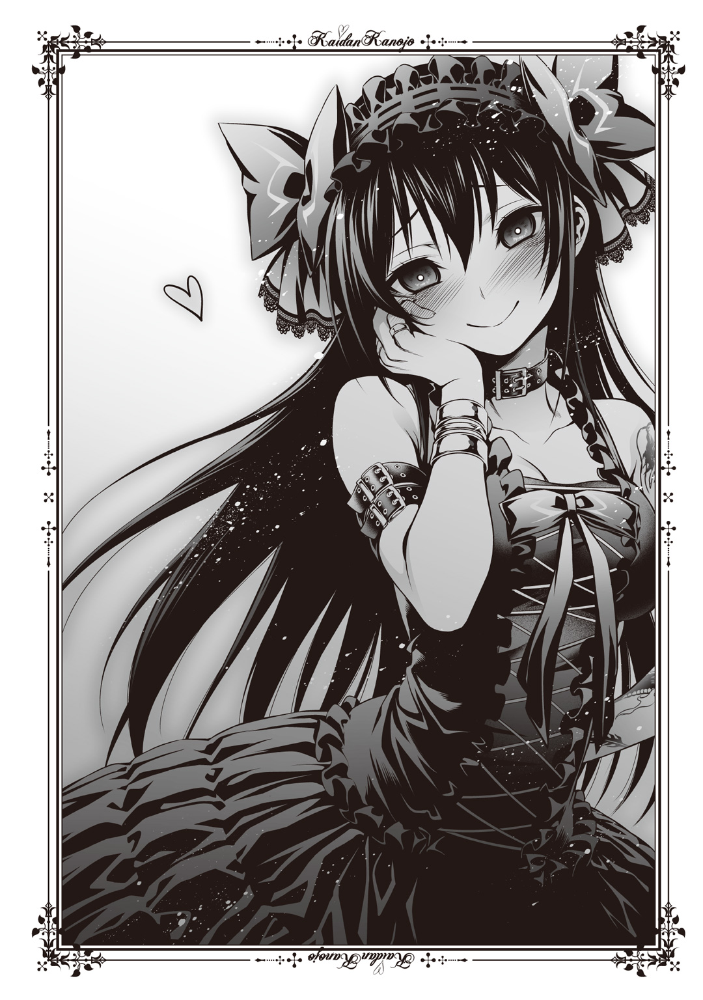
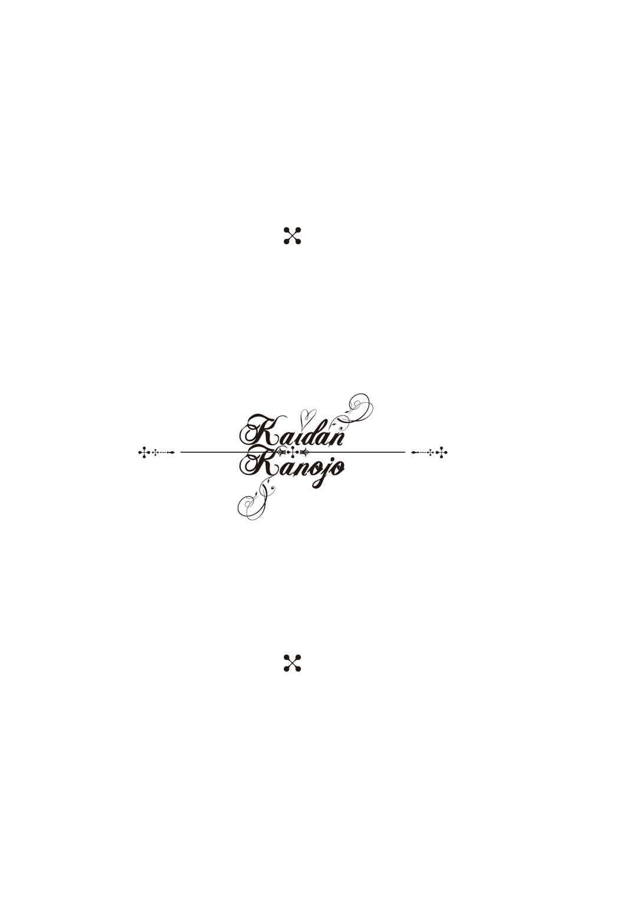
はじめまして、永遠月心悟と申します。
まずは本書を手に取っていただきありがとうございます。
このたびジャンプ小説新人賞'13Springにて金賞という誉れ高い賞をいただき、作家としてデビューさせていただきました。受賞時には『怪談撲滅委員会』だったタイトルも『怪談彼女』とリニューアルし、多くの助けをいただいで刊行となりました。
手助けしてくださったみなさま、本当にどうもありがとうございます。
怖い話、というのが昔から大好きです。
図書館にあった怪談の本も片っ端から読みましたし、自分の学校に七不思議はないかと探したこともあります（ありませんでしたけど）。いまでも百物語がしたいとか、怪談話を語らいたいといった希望は捨てず、機会はないかと目をぎらつかせる怪談好きです。
そんなに好きならさぞ数多の心霊体験があるんだろうと思いきや―――まったくないです。
その分、怪異というものに対してハングリーにあれこれ考えることは多くなりました。
学校の図書室には赤い服を着た女の子がいて最後まで居残っている生徒に襲いかかるんじゃないかとか。使われなくなった焼却炉の中には少年の霊がいて近付く者を引きずりこむんじゃないかとか。日常の端々に幽霊や怪異がいるんじゃないかと期待して色々考え、妄想しました。運のいいことに、霊にたたられたことは一度もありません。
そんな怪談好きが怪談を小説にして書き、現在に至ります。
応援してくださった家族や友人のみなさん、ありがとうございます。やっと「小説家」になれました。要領も悪く決していい仕事相手ではなかったでしょうに見捨てず手ほどきをしてくださったJUMP jBOOKS編集部のみなさん、ありがとうございます。これからも「小説家」でいられるように努力したいと思います。
ミウラタダヒロ先生。美麗なイラストの数々、本当にありがとうございます。キャラクターたちが形を持って、よりいきいきと輝いてくれました。
天国のお父さん。本、出せたよ。色々、たくさん、ありがとうね。大好き。
この本を手に取ってくださったみなさん、祝ってくださったみなさん、本当にありがとうございます。これからも精進していきますので、どうぞよろしくお願いします。
それでは。
二〇一四年 春
永遠月心悟
本書は、ジャンプ小説新人賞'13Spring小説フリー部門金賞受賞作『怪談撲滅委員会』を大幅に加筆修正のうえ、改題したものです。
永遠月心悟（とわづきしんご）
長野県出身。
ジャンプ小説新人賞'13Spring小説フリー部門で『怪談撲滅委員会』で金賞受賞。
同作を改題した『怪談彼女～てけてけ～』でデビュー。
ミウラタダヒロ
２０１１年、『ジャンプＮＥＸＴ！』にて読切『ふぁみドル！』でデビュー。
２０１２年、『週刊少年ジャンプ』にて『恋染紅葉』で連載デビュー。
ジャンプジェイブックスDIGITAL
怪談彼女～てけてけ～
著 者 永遠月心悟
画 ミウラタダヒロ
©2015 S.TOWAZUKI/T.MIURA
２０１５年５月31日発行
この電子書籍は、ジャンプジェイブックス「怪談彼女～てけてけ～」
２０１４年12月20日発行の第４刷を底本としています。
装 丁 浅見ダイジュ（Local Support Department）
発 行 者 鈴木晴彦
発 行 所 株式会社 集英社
〒１０１－８０５０
東京都千代田区一ツ橋２丁目５番10号
０３－３２３０－６０８０（読者係）
制作所 株式会社デジタルディレクターズ
本作品の全部また一部を無断で複製、転載、改竄、インターネット上に掲載すること、および有償無償に関わらず、本データを第三者に譲渡することを禁じます。なお個人利用の目的であっても、コピーガードを解除しての複製は、法律で禁じられています。